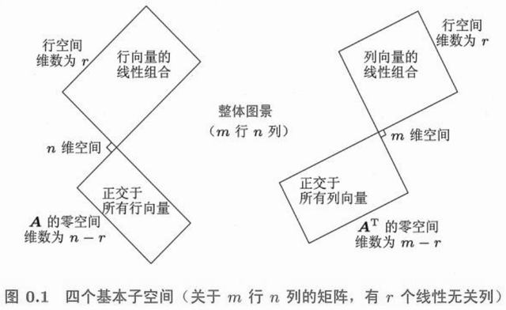
图 0-1 全书的地图 （原书导论 图 0.1）：一个 m×n 矩阵把 ℝⁿ 与 ℝᵐ 各切成两块——行空间 ⊥ 零空间、列空间 ⊥ 左零空间，秩 r 决定全部四个维数。这本 400 多页的书，说到底就是把这张图讲透。
全书的两个主角在这一章登场：向量 （一组有序的数）和矩阵 （一组列向量排在一起）。Strang 把整本线性代数压在一条主线上——Ax 是 A 的列向量的线性组合 。这一章把这条主线的所有零件装好。
1.1 向量及其线性组合p.2 1.1.1 线性组合 cv + dwp.3
向量 v = (v₁, v₂) 是平面上的一支箭头，也是一个有序数组。它身上只允许两种运算：加法 （对应分量相加，几何上首尾相接）与数乘 （每个分量乘 c，几何上拉长、缩短或反向）。把这两种运算合起来，就得到线性代数唯一的动作——线性组合 。
线性组合 cv + dw ：c、d 取遍所有实数，得到的新向量全体
取 v = (2, 1), w = (1, 3)：
c = 3, d = 2 → 3(2,1) + 2(1,3) = (6,2) + (2,6) = (8, 9)
c = 1, d = −1 → (2,1) − (1,3) = (1, −2)
c = 0, d = 1 → 只取 w，说明单独一个向量也是组合 （另一个系数取 0）
关键的一句：c、d 可以任取 。正数、负数、分数、零都行。所以「v 与 w 的全部线性组合」不是一个向量，而是一片区域 ——只要 v、w 不共线，这片区域就是整张平面。
几何 为什么两个向量就能铺满平面
先把 c 固定、让 d 变：得到一条沿 w 方向的直线。再让 c 变：这条直线整体平移、扫过整个平面。两个方向只要不平行，就是两组独立的「自由度」，正好对应平面的两个维度。
如果 v、w 共线（成比例），扫出来的永远只是一条直线——这就是 1.1.3 那节「消元失效」的几何真相。
· 看 cv + dw 如何扫过平面
c（乘 v） 1.00
d（乘 w） 1.00
实时读数
v (2.00, 1.00)
w (1.00, 3.00)
cv + dw (3.00, 4.00)
det[v w] 5.00
v
w
v + w
v − w
中点
det[v w] ≠ 0 时两列线性无关，组合能到达平面上任意一点；det = 0 时组合被压成一条直线。
1.1.2 求解二元方程组p.4
问「b 能不能写成 v 与 w 的组合」，等价于解一个二元一次方程组。同一组方程有两种读法 ，这是全书最重要的一次视角切换。
行的读法（高中视角）
每个方程是一条直线，求解 = 找两条直线的交点。2c + d = 8 、c + 3d = 9 交于 (c, d) = (3, 2) 。
列的读法（本书视角）
把未知数看成列的系数 ：c·(2,1) + d·(1,3) = (8,9) 。求解 = 找用哪两列拼出 b 。
同一个方程组的两种写法
行： 2c + d = 8 列： c [2] + d [1] = [8]
c + 3d = 9 [1] [3] [9]
消元（行操作）：第一式 ×3 − 第二式 → 5c = 15 → c = 3 ，代回 d = 2
两种读法给出的答案一样，但用途不同：行的读法告诉你怎么算 （消元），列的读法告诉你什么时候有解 （b 落不落在两列张成的空间里）。后面第 3 章的四个基本子空间，全部由列的读法长出来。
1.1.3 消元法会失效吗p.4
会。当两列成比例（线性相关）时，消元过程中会出现「0 作主元」，此时方程组只有三种结局，而且三种结局与两列的关系一一对应。
两列的关系 det 方程组的解 几何 不成比例（无关） ≠ 0 唯一解 两条直线交于一点；两列铺满平面 成比例，且 b 不在该直线上 = 0 无解 两条平行线；b 落在组合直线之外 成比例，且 b 也在该直线上 = 0 无穷多解 两条直线重合；b 在组合直线上但拼法不唯一
关键认识
「消元失效」不是计算出了错，而是
矩阵本身的信息不足 ：第二列没有提供新方向。此时无论你怎么换算法，都不可能凭空造出唯一解。线性代数把这件事说成一句话——
列不满秩 。
1.1.4 三维向量的情形p.5
到了 ℝ³ ，两个不共线的向量组合出来的不再是整个空间，而是一张过原点的平面 。这张平面上的点都能用 cv + dw 表示，平面外的点不能。
u = (1, 0, 0), v = (0, 1, 0) → 全部组合 (c, d, 0)：恰好是平面 z = 0
再加一个 w = (1, 1, 1)：它不在 z = 0 上，于是 u, v, w 无关，
三者的组合 c(1,0,0) + d(0,1,0) + e(1,1,1) = (c+e, d+e, e) 能取到 ℝ³ 中任意一点
于是有一条重要规律：在 ℝⁿ 里最多只有 n 个向量能保持线性无关 。ℝ³ 中给你 4 个向量，无论怎么选，其中至少有一个是多余的——它一定落在另外三个张成的空间里（若那三个已经张成 ℝ³）或落在某个平面/直线上。
维数就是「独立方向的个数」
ℝ² 里最多 2 个独立方向，ℝ³ 里最多 3 个，ℝⁿ 里最多 n 个。这个上限与向量有多少个分量无关——是空间本身的性质。第 3 章的「秩」正是把这个上限量化：
秩 = 实际独立方向的个数 。
1.1.5 如何知道这是一个平面？p.6
给你一堆向量，怎么判断它们的全部组合是一张平面、一条直线，还是整个空间？有两个等价的判据。
判据一（代数）： 存在不全为零的系数使组合为零向量
c·u + d·v + e·w = 0 且 (c, d, e) ≠ (0, 0, 0)
→ 三者共面（线性相关），组合只能得到平面或直线
判据二（几何）： 存在一个非零法向量 n 同时垂直于所有向量
n · u = n · v = n · w = 0
→ 所有向量都躺在过原点、以 n 为法向的平面 n · x = 0 上
两个判据说的是同一件事：「有一组非平凡系数把组合压成零」⇔「所有向量都被同一个法向量管住」 。第 3 章会把判据一正式命名为「线性相关」，把判据二里的 n 认成「左零空间的元素」。
例 1.1-A u = (1,0,0)、v = (0,1,0)、w = (1,1,0) 的组合是平面还是空间？
试用判据一：1·u + 1·v − 1·w = (1,0,0) + (0,1,0) − (1,1,0) = (0,0,0) ，系数 (1,1,−1) ≠ 0，所以三者线性相关 ，组合只能得到平面。
用判据二验证：取 n = (0,0,1) ，则 n·u = n·v = n·w = 0，三个向量都在 z = 0 这张平面上。两个判据结论一致。
反过来，若把 w 换成 (1,1,1)，判据一找不到非零解，判据二也找不到这样的 n，此时三者无关、组合铺满 ℝ³。
判断 若 u、v、w 三个向量两两不平行，则它们一定线性无关。
错误。 两两不平行只说明「任意两个之间不成比例」。在三维空间里，三个向量可以两两不平行却躺在同一张平面内——上面的 (1,0,0)、(0,1,0)、(1,1,0) 就是反例：前两个不平行、后两个也不平行，但三者共面。
真正要检查的是三者是否共面 （判据一或判据二），而不是两两比对。
判断 向量组中若含零向量，则该向量组线性无关。
错误。 零向量 0 使 c·0 = 0 对任意 c ≠ 0 都成立，于是「存在不全为零的系数使组合为零」被自动满足——含零向量的向量组必然线性相关 。
简答 为什么说「消元法失效」与「两列线性相关」是同一件事？请用 Ax = b 的列图像说明。
从行图像看 ：消元时主元位置出现 0，说明两行不成比例这件事已经不够用，方程组退化为「平行或重合」两种情形，谈不上唯一交点。
从列图像看 ：Ax 是 A 的列向量的线性组合。若两列线性无关，它们张成整个平面，任何 b 都能被组合出来且方式唯一，于是两个主元都非零、消元顺畅；若两列线性相关，全部组合只能扫出一条直线，列空间塌成直线——此时 b 不在直线上则无解，b 在直线上则拼法不唯一。
所以「主元为 0」正是「列相关」在计算过程中的投影，二者描述的是同一个几何事实。
习题 1.1 原书 p.6 起 自测 2 题 · 点开看答案
v = (2, 1)，w = (1, 3)，求 2v − w 与 v + 2w。
上题的 v、w 满足 cv + dw = 0 的 c、d 只有 c = d = 0 吗？为什么？
1. 2v − w = (4,2) − (1,3) = (3,−1)；v + 2w = (2,1) + (2,6) = (4,7)。
2. 是。由 [[2,1],[1,3]] 的行列式 2·3 − 1·1 = 5 ≠ 0 可知两列无关，故只有零解。
1.2 点积、长度和角度p.9 1.2.1 垂直向量p.11
点积把一个「几何问题」（垂直）变成一个「算术问题」（乘加为零）。
点积的定义
v · w = v₁w₁ + v₂w₂ （二维）
v · w = v₁w₁ + v₂w₂ + v₃w₃ （三维）
垂直判据： v ⊥ w ⟺ v · w = 0
为什么「点积为零」就是垂直？看勾股定理：若 v 与 w 垂直，则斜边是 v − w，于是
‖v − w‖² = ‖v‖² + ‖w‖²
(v − w)·(v − w) = v·v − 2v·w + w·w
→ ‖v‖² − 2v·w + ‖w‖² = ‖v‖² + ‖w‖²
→ v · w = 0
两件事值得记住：零向量与任何向量都垂直 （0·w = 0，虽然谈不上方向）；点积可交换 （v·w = w·v），因为乘法本身可交换。
1.2.2 向量之间的夹角p.13
点积的第二种读法给出夹角。它把「长度 × 长度 × 夹角余弦」压缩成一个数。
cos θ = v · w / (‖v‖ ‖w‖) ‖v‖ = √(v·v)
例：v = (1, 2), w = (3, 1)
v · w = 3 + 2 = 5, ‖v‖ = √5, ‖w‖ = √10
cos θ = 5 / √50 = 0.7071 → θ = 45°
因为它是一个余弦，取值被强制落在 [−1, 1] 里 ，这给出线性代数最重要的不等式之一：
柯西-许瓦兹不等式 |v · w| ≤ ‖v‖ ‖w‖
等号成立 ⟺ v 与 w 共线（一个方向或反方向）
由此还能读出符号的含义：点积 > 0 夹角小于 90°（同向成分多）、= 0 垂直、< 0 夹角大于 90°（反向成分多）。这正是推荐系统里「用余弦相似度衡量两个用户口味是否接近」的全部原理。
· 拖 v、w 的圆点
实时读数
v (3.00, 1.00)
w (1.00, 2.00)
v · w 5.00
‖v‖ · ‖w‖ 7.07
夹角 θ 45.0°
一般位置
垂直
同向
反向
60°
虚线是 w 在 v 方向上的投影 ，长度 = (v·w)/‖v‖。点积为 0 时虚线缩成一点——这就是「垂直」。
1.2.3 三维空间中的平面p.15
二维里「一条直线由一个法向量决定」，三维里「一张平面由一个法向量决定」。写法几乎一样。
过点 x₀、法向量为 n 的平面：
n · (x − x₀) = 0 即 n · x = n · x₀
例：过 (1, 1, 1)，法向量 n = (1, 2, 3)
x + 2y + 3z = 1 + 2 + 3 = 6
平面上的任意两点之差都垂直于 n：n · (x₁ − x₂) = 0
这个式子把「平面」彻底变成了「一个向量与未知向量的点积等于常数」。第 4 章的正交投影就是把「到平面最近的点」翻译成这个式子的解，第 3 章的零空间就是「n·x = 0 的全部解」——同一个式子的三种身份。
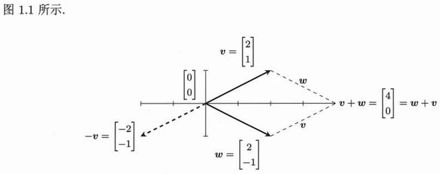
图 1-1 二维空间中的向量与加法 v + w：两条路线殊途同归（先 v 后 w，或先 w 后 v）。这正是线性组合最早的样子。（原书 p.3）
习题 1.2 原书 p.16 起 自测 2 题 · 点开看答案
v = (3, 4)，w = (4, −3)：求 v·w、‖v‖、‖w‖ 与夹角。
v = (1, 1, 1)，w = (1, 0, −1)：求 v·w，以及 v 在 w 上的投影系数。
1. v·w = 12 − 12 = 0；‖v‖ = ‖w‖ = 5；点积为 0 → 夹角 90°。
2. v·w = 1 + 0 − 1 = 0；投影系数 (v·w)/(w·w) = 0/2 = 0（正交，投影为零向量）。
1.3 矩阵和它们的列空间p.19 1.3.1 A 的列空间p.22
矩阵不是数字表格，而是一组列向量并排站好 。乘法的意义由此确定：
A = [v w] = [2 1] x = [c]
[4 3] [d]
Ax = c·v + d·w ← 矩阵乘向量 = 用 x 的分量去组合 A 的各列
A[3] = 3[2] + 2[1] = [6+2] = [ 8]
[2] [4] [3] [12+6] [18]
列空间 C(A) 就是「所有可能的 Ax 构成的集合」，也就是 A 各列的全部线性组合。Ax = b 有解 ⟺ b ∈ C(A)。这一句把「解方程」彻底变成了「判断 b 在不在某个空间里」。
两列无关 → C(A) 是整张平面 ℝ²，任何 b 都有解。
两列相关 → C(A) 退化成一条过原点的直线，只有落在直线上的 b 才有解。
· 拖 b 的圆点，或切换 A 的列
a₂₁ 1.0
实时读数
第1列 (2.00, 1.00)
第2列 (1.00, 3.00)
b (3.00, 3.00)
det A 5.00
b 是否可解 可解
一般情况
第2列 = 0.5×第1列
共线可解
随便一个 b
把 a₂₁ 调到 0.5，第二列变成 (1, 0.5) 与第一列 (2, 1) 同向——列空间塌成一条直线，此后只有落在这条线上的 b 才有解。
1.3.2 秩 1 矩阵p.24
最简单的一类矩阵：所有列都成比例。此时矩阵可以写成一个列向量乘一个行向量 。
A = [1 2 3] = u vᵀ, u = [1] , vᵀ = [1 2 3]
[2 4 6] [2]
每一列都是 u 的倍数 → 列空间是过 u 的一条直线 → 秩 = 1
每一行都是 vᵀ 的倍数 → 行空间是过 v 的一条直线
秩 1 矩阵是理解「秩」的钥匙：秩 = 这个矩阵真正携带了几个独立方向 。一个 100×100 的矩阵可能秩只有 1，那么它存储的信息量其实只有 101 个数（u 的 100 个 + v 的 1 个），其余 9900 个数全是重复。第 7 章的图像压缩、第 10 章的数据学习都建立在这个观察上。
习题 1.3 原书 p.25 起 自测 2 题 · 点开看答案
A = [[1,2],[3,4]]，b = (5, 11)：b 在 A 的列空间里吗？写出组合系数。
A = [[1,2],[2,4]] 的列空间是什么？
1. 在。(1,3) + 2(2,4) = (5,11)，所以 b = 1·第1列 + 2·第2列。
2. 两列成比例，列空间是过原点的直线 y = 2x，即 span{(1,2)}。
1.4 矩阵乘法 AB 和 CRp.28 1.4.1 通常来说 AB ≠ BAp.30
矩阵乘法不满足交换律 ，这是它与普通乘法最大的区别。几何上很好理解：先旋转再拉伸，与先拉伸再旋转，结果不同。
A = [0 1] （交换两轴） B = [1 0] （x 方向拉 2 倍）
[1 0] [0 2]
AB = [0 2] BA = [0 1]
[1 0] [2 0] ← 完全不同
另外，AB 能相乘的前提是形状匹配 ：A 的列数必须等于 B 的行数（m×n 乘 n×p）。所以 AB 有意义时 BA 未必有意义；即使都有意义，两个结果也未必同尺寸，更未必相等。
1.4.2 (AB)C = A(BC)p.30
交换律没了，但结合律成立 。这是矩阵乘法能成为一种「运算」的根本原因——否则连 ABC 都无从写起。
(AB)C = A(BC) ← 都等于「依次施加 C、B、A」这一个复合变换
证明只需看 C 的某一列 c：(AB)c = A(Bc) ，两边都是「先用 B 作用于 c，再用 A 作用于结果」。矩阵乘向量满足结合律，而矩阵乘矩阵只是把这件事对 C 的所有列同时做一遍，所以整体也满足。
1.4.3 回顾矩阵乘法 ABp.31
同一个 AB 有三种读法，都正确，各有各的用处。
读法 算法 什么时候用 行 × 列 (AB)ᵢⱼ = Σₖ aᵢₖbₖⱼ，逐个元素算 手算、编程、证明元素性质 列的组合 AB 的第 j 列 = A × (B 的第 j 列) 理解「B 的列被 A 变换到哪」 行 × 行 AB = Σₖ (A 的第 k 列)(B 的第 k 行) 拆成秩 1 矩阵求和，见 1.4.8
1.4.4 秩 1 矩阵和 A = CRp.31
把秩 1 的想法推广：任何一个秩为 r 的矩阵 A，都能写成一个 m×r 矩阵 C 乘一个 r×n 矩阵 R 。
A = CR
C = A 的 r 个线性无关的列（m × r）
R = A 的「行简化」结果（r × n），记录每一列如何由 C 组合出来
C 抓住列空间的基 （A 能到达哪些方向）
R 抓住每一列的系数 （怎么组合出来）
这是 A = LU 之外最重要的分解，也是 Strang 第 6 版特别强调的一条主线：C 是「列」的浓缩，R 是「配方」的浓缩，A 的全部信息被拆成「方向 + 配方」两半。
1.4.5 C 由 A 的前 r 个线性无关的列组成p.32
C 的取法不唯一，但有一个标准做法：按列扫描，凡是不落在前面各列张成空间里的列，就收进 C 。收到的个数恰好是秩 r，这些列称为主元列 。
A = [1 2 3] 第1列 (1,2) 收入 C
[2 4 5] 第2列 = 2×第1列，舍弃
第3列 (3,5) 不在第1列张成的直线上，收入 C
→ C = [1 3] (m×2，秩 r = 2)
[2 5]
注意「前 r 个」不是指位置靠前，而是指扫描顺序中的前 r 个被选中者 。选法可以变（选第 3 列代替第 2 列也行），但 C 的列数永远等于 r。
1.4.6 矩阵乘积 CRp.32
把 R 的每一行看成「配方」，CR 就展开成若干个秩 1 矩阵之和——这是理解「秩」最直观的算式。
A = CR = [1 3] [1 0 1] = [1] [1 0 1] + [3] [0 0 1]
[2 5] [0 1 1] [2] [5]
= [1 0 1] + [0 0 3] = [1 0 4] ... 逐项验证即得 A
[2 0 2] [0 0 5] [2 0 7]
秩 r 的矩阵 = r 个秩 1 矩阵之和，且不能少于 r 个。 这句话是第 7 章 SVD 的前身：SVD 把这个和写成「正交方向 × 奇异值 × 正交方向」，每一项都是最优的秩 1 贡献。
1.4.7 如何找出矩阵 Rp.34
做法：对 A 做消元，得到最简行阶梯形 R₀ （主元为 1、主元所在列其余元素为 0）。取 R₀ 的前 r 个非零行、删掉全零行，剩下的就是 R。
A = [1 2 3] →消元→ R₀ = [1 0 1]
[2 4 5] [0 1 1]
[0 0 0] ← 全零行删掉
R = [1 0 1] （r = 2 行，n = 3 列）
[0 1 1]
R₀ 的第 3 列是 (1, 1)，意思是「A 的第 3 列 = 1×第 1 列 + 1×第 2 列」。R₀ 保留了全部的组合配方，而把数字规模压到了最小。 这也是第 3 章求零空间的标准入口——令自由变量取 1，就能直接读出零空间的基。
1.4.8 A 的列乘以 B 的行，C 的列乘以 R 的行p.35
矩阵乘法的第四种看法，也是最容易忽略的一种：外积展开 。
AB = Σₖ (A 的第 k 列)(B 的第 k 行)
A = [1 2] , B = [3 4]
[0 1] [5 6]
AB = [1] [3 4] + [2] [5 6] = [3 4] + [10 12] = [13 16]
[0] [1] [0 0] [ 5 6] [ 5 6]
每一项都是一个秩 1 矩阵（列 × 行）。所以 AB 的秩 ≤ min(rank A, rank B) ：你能造出的独立方向数，不可能超过原料本身拥有的方向数。同理 A = CR 就是「用 r 个秩 1 块拼出 A」。
· 拉滑块改 B 的两列
b₁₁ 1.0
b₂₁ 0.5
实时读数
B 第1列 (1.0, 0.0)
AB 第1列 (1.0, 1.0)
B 第2列 (0.5, 1.0)
AB 第2列 (2.0, 1.5)
B = I
交换两列
两列相同
黑线是 B 的两列，蓝线是被 A 变换后的结果（= AB 的两列）。B = I 时 AB = A，说明单位矩阵是「什么都不做」的变换 。
1.5 谈谈第1章p.39
本章搭好了三样东西：向量 （数据）、组合 （运算）、矩阵 （一组列）。围绕它们，Ax = b 有四个等价的视角——这四个视角将在后面九章里反复出现。
行图像
每条方程是一条直线/平面，求解 = 找交点。适合理解「为什么无解」。
列图像
b 是不是 A 的各列的组合。适合理解「什么时候有解」，是全书主线。
矩阵视角
x → Ax 是一个变换：把 ℝⁿ 的点搬到 ℝᵐ。适合理解「矩阵是动作」。
子空间视角
C(A) 是能到达的地方，N(A) 是被压成 0 的地方。第 3 章的主角。
往下走之前的自检
① 能不能不假思索地说出
Ax 是「A 的列的组合」？
② 能不能用 det 判断两列是否张成整个平面？
③ 能不能解释「秩 1 矩阵 = 列 × 行」？
三条都通，第 2 章的消元就是水到渠成；有一条卡住，回到 1.1.3 和 1.3.2 再看一遍。
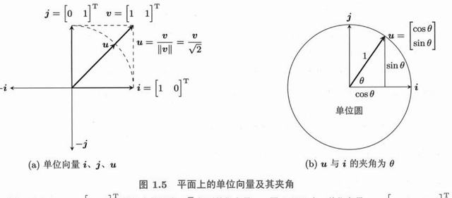
图 1-2 矩阵 A 乘向量 x：x 的分量在挑选并缩放 A 的各列，结果落在列空间里。（原书 p.12）
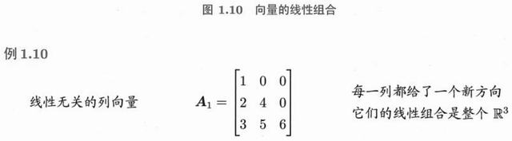
图 1-3 行空间与零空间在 ℝⁿ 里正交，列空间与左零空间在 ℝᵐ 里正交——这是第 3 章全章的骨架，先看一眼位置关系。（原书 p.21）
习题 1.4 原书 p.37 起 自测 2 题 · 点开看答案
A = [[1,2],[3,4]]，B = [[1,0],[1,1]]：求 AB 与 BA。
AB 的第 j 列是什么的线性组合？
1. AB = [[3,2],[7,4]]，BA = [[1,2],[4,6]]。两者不同 → 矩阵乘法不交换。
2. 是 A 的各列、以 B 的第 j 列为系数所作的线性组合（AB 的列 ⊆ A 的列空间）。
这一章讲「怎么算」。核心只有一件事：用行变换把 A 变成上三角 U ，然后从最后一行往回代。围绕这一个动作，长出了乘数、初等矩阵、逆矩阵、LU 分解、置换矩阵、主元策略——以及一个漂亮的事实：消元法就是 A = LU 。
2.1 消元法和回代p.42 2.1.1 回代解法 Ux = cp.43
如果矩阵已经是上三角 （主对角线以下全是 0），求解就变得毫无难度：从最后一行开始，逐个往上代。这个动作叫回代 。
Ux = c
[2 3 1] [x₁] [ 9]
[0 4 2] [x₂] = [ 8]
[0 0 5] [x₃] [10]
末行： 5x₃ = 10 → x₃ = 2
中行： 4x₂ + 2·2 = 8 → x₂ = 1
首行： 2x₁ + 3·1 + 1·2 = 9 → x₁ = 2
回代的本质是「逐层剥离」：每一行只有一个新未知数，前面算出的值直接代入即可。所以整个求解的难点不在回代，而在怎么把 A 变成 U ——那就是消元。
2.1.2 把 A 转化成 U，b 转化成 cp.44
消元的动作是「用第 i 行减去第 j 行的若干倍，把 (i, j) 位置清零」。这个倍数叫乘子 ，记作 ℓᵢⱼ。
A = [2 1 1] b = [ 5]
[4 -6 0] [-2]
[-2 7 2] [ 9]
第 1 步：ℓ₂₁ = 4/2 = 2 ，第2行 − 2×第1行 → [0 -8 -2] , -12
第 2 步：ℓ₃₁ = -2/2 = -1 ，第3行 + 1×第1行 → [0 8 3] , 14
第 3 步：ℓ₃₂ = 8/(-8) = -1 ，第3行 + 1×第2行 → [0 0 1] , 2
U = [2 1 1] c = [ 5] ← 三个主元 2, -8, 1 全都非零
[0 -8 -2] [-12]
[0 0 1] [ 2]
注意b 必须同步做同样的行操作 ——这也是「增广矩阵 [A | b]」的由来：把 b 当作额外一列，一起消元。乘子只由 A 决定，与 b 无关 ，这个观察直接引出 2.3 的 LU 分解。
消元的三条合法性
行变换不改变方程组的解集，因为：① 交换两行（方程顺序无关）；② 某行乘以非零常数（方程两边同乘）；③ 某行加上另一行的倍数（两个方程相加仍成立）。
这三条就是全部「初等行变换」 ，第 2.2 节会把它们写成矩阵。
2.1.3 消元法失效的情况p.44
当某一列在主元位置上算出 0 时，消元就「卡住」了。此时只有两条路：换行 ，或者承认这一列没有主元。
卡住的原因 处理方式 结论 主元位置为 0，但下面有非零元素 与下面的行交换 （需要置换矩阵 P） 仍有 n 个主元，唯一解 整列（含下方）全为 0 该列没有主元 ，跳过它继续往右 主元数 r < n，秩不足 r < n 且 b 与 A 的列不匹配 出现 0 = 非零 的方程 无解 r < n 且 b 匹配 自由变量存在 无穷多解
2.1.4 线性相关或线性无关的列向量p.45
「消元卡住」在列的层面有一个精确翻译：这一列是前面若干列的组合 。主元的个数就是独立列的个数。
A = [1 2 3] 消元 → U = [1 2 3] 2 个主元：1 和 1
[2 4 7] [0 0 1] 第 2 列没有主元
第 2 列 = 2 × 第 1 列 → 无主元，列相关
第 3 列 (3,7) 不在 (1,2) 方向上 → 有主元，列独立
rank(A) = 主元个数 = 独立列的个数 = 2
所以那句「消元法失效」应当改写成更准确的说法：矩阵的列不足以张成整个 ℝⁿ 。这不是算法失败，而是数据本身缺方向。
2.1.5 行向量和列向量的图示p.46
同一个方程组，画在行视角和列视角里完全是两张图，但结论必须一致。
行视角（两条直线）
每个方程是一条直线。消元 = 把第一条直线绕交点旋转，直到它变成水平——交点的位置不变。
列视角（两个箭头）
每一列是一个箭头，b 是合成结果。求解 = 找「用两列各走几步」能踩到 b。
行视角适合看「解在哪」，列视角适合看「为什么没有解」。Strang 全书都用列视角 ，因为只有它能自然推广到 m×n 的一般情形。
2.1.6 消元和置换的例子p.46
最典型的需要换行的例子：主元位置恰好是 0。
A = [0 2] 主元位置是 0，无法用第1行消第2行
[3 4]
交换两行 → [3 4] → ℓ = 0/3 = 0，无需消元 → U = [3 4]
[0 2] [0 2]
P = [0 1; 1 0] ，PA = 上式。——置换矩阵 P 只是把行重排
在手工计算时换行是小事；但在写程序时，换行会打乱乘子的存储顺序 ，这就是为什么 LU 分解的完整形态是 PA = LU 而不是 A = LU （见 2.4.3）。
· 点「下一步」逐次消元，看乘子与主元
当前矩阵
乘子 ℓ₂₁ —
乘子 ℓ₃₁ —
乘子 ℓ₃₂ —
主元 —
下一步 ▸
重来
每次点「下一步」做一次行消元：用主元行把下方同列清零。蓝色是当前主元位置，浅色是被清零的位置。三步之后得到上三角 U，主元之积 = det A。
习题 2.1 原书 p.47 起 自测 2 题 · 点开看答案
解 x + 2y = 3，2x + 5y = 8。
上题消元的主元与乘数各是什么？
1. 第二式减 2 倍第一式：y = 2；回代 x = 3 − 4 = −1。
2. 主元 1 与 1（消元后 y 的系数）；乘数是 l₂₁ = 2。
2.2 初等矩阵和逆矩阵p.50 2.2.1 和逆矩阵有关的事实p.51
把「对第 i 行减去第 j 行的 ℓ 倍」写成矩阵，就是初等矩阵 E ：单位矩阵的第 (i, j) 位置填上 −ℓ。
E₃₁ = [ 1 0 0] E₃₁·A 的效果：第3行 − (−1)×第1行
[ 0 1 0]
[ 1 0 1] ← 这个 1 就是 −ℓ₃₁ = −(−1)
关键性质：E 的逆只需把 −ℓ 改成 +ℓ
E₃₁⁻¹ = [1 0 0; 0 1 0; -1 0 1] ， E₃₁·E₃₁⁻¹ = I
关于逆矩阵的几条基本事实：只有方阵 才可能求逆；A⁻¹A = AA⁻¹ = I ；逆存在 ⟺ det A ≠ 0 ⟺ 列满秩 ⟺ 主元全非零 。这五个条件说的其实是同一件事，第 3 章会给它一个统一的名字：可逆 。
2.2.2 矩阵乘积 AB 的逆p.53
乘积求逆要反序 ，这是最容易记错的一条。
(AB)⁻¹ = B⁻¹A⁻¹
验证： (AB)(B⁻¹A⁻¹) = A(BB⁻¹)A⁻¹ = AIA⁻¹ = AA⁻¹ = I ✓
直觉：先穿袜子再穿鞋，脱的时候要先脱鞋再脱袜子 。
同理 (ABC)⁻¹ = C⁻¹B⁻¹A⁻¹ 。另外 (A⁻¹)ᵀ = (Aᵀ)⁻¹ ，转置和求逆可以交换顺序。
2.2.3 L 是 E 的逆p.55
整个消元过程写成矩阵，就是若干个 E 的乘积；把它反过来，就得到 L。
消元： E₃₂E₃₁E₂₁ A = U → A = (E₂₁⁻¹E₃₁⁻¹E₃₂⁻¹) U = LU
L = E₂₁⁻¹E₃₁⁻¹E₃₂⁻¹ = [ 1 0 0]
[ ℓ₂₁ 1 0] ← 乘子原样落位，不需要相乘
[ ℓ₃₁ ℓ₃₂ 1]
为什么乘子能「原样落位」？因为求逆把符号翻了、顺序也翻了，两个反转正好抵消。这是消元法最漂亮的性质，也是 LU 分解在数值计算中被广泛使用的原因——L 的全部信息就是消元过程中记下的乘子 。
习题 2.2 原书 p.55 起 自测 2 题 · 点开看答案
E = [[1,0],[−3,1]] 作用在 (2, 5) 上得什么？E⁻¹ 是什么？
2×2 矩阵 A = [[a,b],[c,d]] 可逆的条件与逆矩阵？
1. E(2,5) = (2, 5 − 6) = (2, −1)；E⁻¹ = [[1,0],[3,1]]。
2. ad − bc ≠ 0；A⁻¹ = (1/(ad−bc))·[[d,−b],[−c,a]]。
2.3 矩阵运算和 LU 分解p.58 2.3.1 消元法的计算复杂度p.59
消元的代价大约是 n³/3 次乘加，回代的代价只有 n² 。
n 消元 ≈ n³/3 回代 ≈ n² 说明 10 333 100 手算尚可 100 333,000 10,000 计算机瞬间 1000 3.3×10⁸ 10⁶ 约 0.1 秒
关键结论：消元占绝对主导 。所以当你有多个不同的 b、同一个 A 时，正确做法是只做一次消元、把 L 和 U 存下来 ，之后每个 b 只需 O(n²) 的前代+回代——这就是 LU 分解在工程上的全部价值。
2.3.2 证明 LU 分解p.60
不需要新定理，只需把 2.2.3 的推导重读一遍：每一步消元都是一个可逆的初等矩阵，把它们依次乘到 A 的左边，最后得到 U；于是
E E′ E″ A = U → A = (E E′ E″)⁻¹ U = (E″⁻¹E′⁻¹E⁻¹) U = L U
L 是单位下三角（对角全 1），U 是上三角，且 U 的对角元就是主元。
2.3.3 伟大的 A = LU 分解p.60
Strang 把 A = LU 称为「伟大的分解」，因为它把矩阵拆成了两个极端简单的部分，而且这两部分各有清晰含义。
A = [ 2 1] = L U = [1 0] [2 1]
[ 4 3] [2 1] [0 1]
↑ ↑
ℓ₂₁ = 2 U 的对角元 = 主元
L 记录消元过程 （怎么算的）
U 记录消元结果 （A 的骨架）
由此还能读出 det：det A = det L · det U = 1 · (主元之积) 。这是计算行列式最快的方法，第 5 章会正式使用。
· 拉滑块改 a₂₁、a₂₂
a₂₁ 4.0
a₂₂ 3.0
分解结果
ℓ₂₁ = a₂₁/a₁₁ 2.00
主元 d 1.00
det A 2.00
状态 可分解
默认 主元为 0
把 a₂₂ 调到使主元 d = a₂₂ − ℓ₂₁a₁₂ 恰好为 0，det 归零、A 的列共线，此时 U 的第二行全零，A 不可逆。
2.3.4 A = LU 的第二种证明：将列乘以行p.61
第 1.4.8 节给过另一种视角：用「列 × 行」的秩 1 块拼出 A ，再看 L U 是不是同一种拼法。
LU = [1 0] [2 1] = [1] [2 1] + [0] [0 1]
[2 1] [0 1] [2] [1]
= [2 1] + [0 0] = [2 1] = A ✓
[4 2] [0 1] [4 3]
一般地：A = Σₖ (L 的第 k 列)(U 的第 k 行)
第 k 项只用到 A 的「第 k 个主元」，前 k−1 项已经拼好了前 k−1 阶
这个视角的好处是：它把 LU 分解和「秩 1 累加」统一了。第 7 章的 SVD 就是同一个式子，只是把「列与行」换成了「正交列与正交行」，让每一项都尽可能大。
2.3.5 不包含行对换的消元法p.62
A = LU 成立有一个隐含条件：消元过程中不需要换行 ，即所有主元在计算时都非零。这个条件有一个纯代数的等价说法。
不需要换行的充要条件
A 的
所有顺序主子式 （左上角 1×1、2×2、…、n×n 的行列式）都非零。此时 LU 分解唯一，L 的对角全是 1。
若某个顺序主子式为 0，就
必须 换行——这时存在分解，但形式是
PA = LU 。
习题 2.3 原书 p.62 起 自测 2 题 · 点开看答案
A = [[2,1],[4,3]] 的 LU 分解？
用 LU 求 det A。
1. L = [[1,0],[2,1]]，U = [[2,1],[0,1]]（乘数 l₂₁ = 4/2 = 2）。
2. det A = det L · det U = 1 · (2·1) = 2。(2·3 − 1·4 = 2 ✓)
2.4 置换与转置p.65 2.4.1 置换p.65
置换矩阵 P 是把单位矩阵的行重排得到的矩阵。左乘 P 就重排 A 的行，右乘 P 就重排 A 的列。
P = [0 1 0] PA = 把 A 的第 1 行换到第 2 行
[0 0 1] AP = 把 A 的第 1 列换到第 2 列
[1 0 0]
n 阶共有 n! 个置换矩阵。3 阶有 6 个。
2.4.2 置换矩阵的性质p.66
置换矩阵有一组非常好的性质，让它在数值计算中特别安全。
PᵀP = I → P⁻¹ = Pᵀ （求逆 = 转置，零成本）
det P = ±1 （奇数个对换为 −1，偶数为 +1）
P 的每行每列恰好一个 1，其余全 0
「P⁻¹ = Pᵀ」这条极为重要：换行的逆操作就是把行换回来，而这件事在数学上就是转置。正交矩阵 （第 4.4 节）的全部性质都由此推广而来。
2.4.3 PA = LU 分解：P 导致行交换p.66
实际计算中，先把所有需要的换行「一次性做完」，再做不换行的 LU 分解。
求 A = LU 时若第 k 个主元为 0：
① 在 A 的第 k 列下方找一个非零元素
② 交换这两行（记下这个置换）
③ 继续消元
最终： PA = LU （P 记录了全部换行）
解 Ax = b → PAx = Pb → LUx = Pb → 先解 Lc = Pb，再解 Ux = c
2.4.4 选取“部分主元”以减少舍入误差p.67
计算机用浮点数，除法会引入误差。若主元极小，误差会被放大到不可收拾。
例：ε = 10⁻⁸
A = [ε 1] 不换行：ℓ = 1/ε = 10⁸，主元 = 1 − 10⁸ ≈ −10⁸
[1 1] 换行后：ℓ = ε，主元 = 1 − ε ≈ 1
同一个矩阵，解可能相差 10⁸ 倍 → 必须换行
部分主元法 （partial pivoting）的规则：在第 k 列中挑绝对值最大 的元素所在行，换到主元位置。这样乘子 |ℓ| ≤ 1，误差不会被放大。所有严肃的数值库（LAPACK、MATLAB、NumPy）都默认这样做。
2.4.5 PAQ：P 对 A 做行交换，Q 对 A 做列交换p.67
如果允许同时换列，任何矩阵都能化成更规整的形式。
PAQ = L U P 换行、Q 换列
最彻底的情形：PAQ = [ I_r 0 ] ← 左上角是 r 阶单位阵
[ 0 0 ] r = rank(A)
这就是矩阵的「标准形」：除了秩，没有别的不变量。
2.4.6 A 的转置p.68
转置是「行列互换」，记作 Aᵀ 。它把 m×n 变成 n×m。
(Aᵀ)ᵢⱼ = Aⱼᵢ
(A + B)ᵀ = Aᵀ + Bᵀ
(AB)ᵀ = BᵀAᵀ ← 又是反序！
(Aᵀ)ᵀ = A ， (A⁻¹)ᵀ = (Aᵀ)⁻¹
转置的几何意义不那么直观：它把 A 的列空间 和行空间 互换，把「从 ℝⁿ 到 ℝᵐ 的映射」变成「从 ℝᵐ 到 ℝⁿ 的映射」。第 3 章的四个基本子空间正是靠转置来定义行空间和左零空间的。
2.4.7 内积的意义p.69
行向量乘列向量就是一个内积（点积）。于是矩阵乘法可以写成「一列内积」：
Ax 的第 i 个分量 = (A 的第 i 行) · x
[2 3] [x] = [2x + 3y] ← 每个分量是一个内积
[4 5] [y] [4x + 5y]
AB 的第 (i,j) 元 = (A 的第 i 行) · (B 的第 j 列)
内积的意义在于「投影 + 加权求和」：aᵀx 是 x 在 a 方向上的投影长度乘以 ‖a‖。所以矩阵的每一行都在「测」输入向量的一个特征 ——这正是神经网络一层做的事情。
2.4.8 对称矩阵p.70
满足 Aᵀ = A 的方阵叫对称矩阵。它的元素关于主对角线镜像相等。
A = [1 2 3] A = Aᵀ ✓
[2 5 6]
[3 6 9]
性质（第 6 章证明）：
① 特征值全是实数
② 特征向量可以选成互相正交
③ 一定可以正交对角化 A = QΛQᵀ
对称矩阵是线性代数里「最好的一类矩阵」，因为它的三个方面（特征值、特征向量、对角化）全部达到最优。第 6.3 节的「正定矩阵」就是对称矩阵的精华子集。
2.4.9 对称乘积 AᵀA、AAᵀ 和 LDLᵀ 分解p.71
不管 A 是什么形状，AᵀA 一定是对称的，而且一定是半正定的。这条性质撑起了最小二乘和 SVD 两章。
(AᵀA)ᵀ = Aᵀ(Aᵀ)ᵀ = AᵀA → 必对称
xᵀ(AᵀA)x = (Ax)ᵀ(Ax) = ‖Ax‖² ≥ 0 → 必半正定
等号成立 ⟺ Ax = 0 ⟺ x ∈ N(A)
对称矩阵的 LDLᵀ 分解：
A = LDLᵀ L 单位下三角，D 对角（= 主元）
这就是对称情形下的 A = LU（U = DLᵀ）
习题 2.4 原书 p.72 起 自测 2 题 · 点开看答案
P = [[0,1],[1,0]]：求 P² 与 det P。
(AB)ᵀ 等于什么？
1. P² = I（交换两次回到原状）；det P = −1（交换两行变号）。
2. (AB)ᵀ = BᵀAᵀ，顺序反过来。
2.5 导数和有限差分矩阵p.75 2.5.1 公式的逆向推导：由差值求导数p.76
微积分里用差商逼近导数；反过来，用矩阵 把「求差分」这个动作写成线性变换，就能看出导数算子与矩阵的深层对应。
一阶差分（前向）： (Δu)ᵢ = uᵢ₊₁ − uᵢ
Δ = [-1 1 0 0] 作用在 u = (u₁,…,u₄) 上得
[ 0 -1 1 0] (u₂−u₁, u₃−u₂, u₄−u₃)
[ 0 0 -1 1] ← 4 个未知数只得到 3 个差分
除以步长 h： Δu/h ≈ du/dx （h → 0 时精确）
注意 Δ 是一个 3×4 的长方矩阵——从 4 维映射到 3 维，必然有信息损失：常数向量的差分为 0 ，所以 (1,1,1,1) 在零空间里。这正是「求导会丢掉常数项」的矩阵表述。
2.5.2 二阶差分矩阵 K、T、Bp.77
二阶差分 = 一阶差分再做一次，对应二阶导数。按边界条件不同，得到三个不同的矩阵。
K （两端固定，Dirichlet） T （一端自由） B （两端自由，Neumann）
K = [ 2 -1 0] T = [ 2 -1 0] B = [ 1 -1 0]
[-1 2 -1] [-1 2 -1] [-1 2 -1]
[ 0 -1 2] [ 0 -1 1] [ 0 -1 1]
K = ΔᵀΔ（对称、正定） B = ΔᵀΔ 但带零边界 → 奇异
2.5.3 矩阵 K 的性质p.78
K 是数值计算里出现频率最高的矩阵之一，它的性质几乎每一项都有物理含义。
① 对称、三对角、正定 （特征值 λₖ = 2 − 2cos(kπ/(n+1)) > 0）
② det K = n + 1（n 阶时）
③ 逆矩阵 K⁻¹ 的元素是「帐篷形」的 min(i,j)(n+1−max(i,j))/(n+1)
④ 特征向量是离散正弦波：vₖ = (sin(kπ/(n+1)), sin(2kπ/(n+1)), …)
K 就是「一维拉普拉斯算子」的矩阵形式，物理上对应「一根被拉紧的琴弦」或「一维热传导」。它的逆对应格林函数，特征向量对应驻波——线性代数和微分方程在这里是一回事 。
2.5.4 一端自由一端固定的矩阵 T₁p.80
把 K 的最后一个对角元从 2 改成 1，就得到「一端固定、一端自由」的 T。
T = [ 2 -1 0] 最后一个对角元是 1，对应自由端
[-1 2 -1]
[ 0 -1 1]
det T = 1（对比 det K = n+1）——边界条件改变了行列式
T 仍然对称正定，但特征值分布不同
2.5.5 两端自由的矩阵 B 是奇异的p.80
两端都自由时，矩阵出现零特征值——因为常数向量被压成零 。
B = [ 1 -1 0] B·(1,1,1)ᵀ = (0,0,0)ᵀ
[-1 2 -1] → 常数向量在零空间里
[ 0 -1 1] → B 奇异，不可逆
物理含义：两端都不固定的杆可以整体平移（零能量模式）
数值含义：Neumann 边界的热方程解不唯一（温度可整体加常数）
这三个矩阵（K、T、B）的对比说明一件重要的事：边界条件不同，矩阵的秩就不同，物理上「有没有刚体位移」正对应数学上「有没有零特征值」 。
· 拖两个控制点改曲线
读数
曲线 sin
Σ(Ku)ᵢ 0.00
‖Ku‖ 0.00
uᵀKu 0.00
正弦波
直线（常数）
局部凸起
黑线是 u，蓝色柱是 Ku（≈ 二阶导数）。正弦波 sin(kπi/10) 恰好是 K 的特征向量 ，所以 Ku 与 u 形状相同、只差一个倍数 2−2cos(kπ/10)；换成别的形状就对不上了。
习题 2.5 原书 p.81 起 自测 2 题 · 点开看答案
差分矩阵 K（4×4，主对角 −1、上次对角 1，最后一行只有 −1）作用在 x = (1,4,9,16) 上？
K 可逆吗？为什么？
1. Kx = (4−1, 9−4, 16−9, −16) = (3, 5, 7, −16)。前三项是相邻差，最后一项是边界条件。
2. 可逆，det K = −1（是三角阵，对角全是 −1）。这也说明「给定差分 + 一个边界值」能唯一还原序列。
2.6 谈谈第2章p.83 本章只做了一件事：把 A 变成 U 。但这一件事衍生出整章的骨架——乘子、E、L、P、主元，全部围绕它。
算法层
消元 → 回代，复杂度 n³/3 + n²。多右端项时复用 LU。
代数层
A = LU（或 PA = LU、LDLᵀ），把矩阵拆成「配方」与「骨架」。
几何层
主元个数 = 独立列个数 = 秩。消元卡住 = 列相关。
应用层
差分矩阵 K/T/B 把微分方程变成线性方程组，边界条件 = 秩。
简答 为什么「多个 b、同一个 A」时一定要用 LU 分解？
因为消元的复杂度是 O(n³)，而前代 + 回代只有 O(n²)。若对每个 b 都重新消元，代价是 k·n³/3；用 LU 分解则只需一次 n³/3 加 k 次 n²。n 越大、k 越多，差距越悬殊 。
更本质的原因：消元过程只依赖 A，与 b 无关 。乘子 ℓ 全部来自 A 的元素，所以把消元的「结果」存下来（L 和 U），就等价于缓存了整个计算过程。
判断 任何方阵都能写成 A = LU。
错误。 只有当所有顺序主子式非零（等价于消元中不需要换主元）时才有 A = LU。一般情形是 PA = LU 。
反例：A = [[0,1],[1,0]] ，第 1 个主元就是 0，必须先换行。
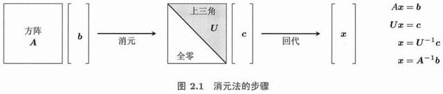
图 2-1 消元过程中需要换行的情形：主元位置为 0 时，置换矩阵 P 把下面非零的行换上来。（原书 p.41）
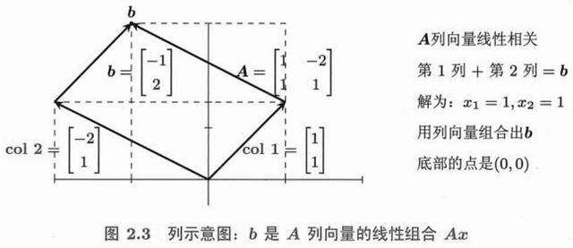
图 2-2 PA = LU 的结构：P 负责重排，L 记录乘子，U 保留主元。（原书 p.46）
这是全书的中心章 。前面两章的零件在这里拼成一台机器：任何一个 m×n 矩阵，都把 ℝⁿ 切成两个正交的子空间（行空间、零空间），把 ℝᵐ 切成另外两个（列空间、左零空间）。四个子空间的维数由秩 r 完全决定——记住这张图，后面七章都是它的推论。
3.1 线性空间及其子空间p.86 3.1.1 线性空间的例子p.86
线性空间 是一堆「东西」的集合，只要它支持加法与数乘、且结果仍留在集合里，就够格。这些「东西」不一定是箭头。
空间 元素是什么 维数 ℝⁿ n 个实数组成的向量 n ℝ^(m×n) m×n 矩阵 mn P₂ 次数不超过 2 的多项式 a + bt + ct² 3 C[0,1] 闭区间上的连续函数 ∞
多项式空间是最好的例子：a + bt + ct² 其实就是坐标 (a, b, c) ，加法和数乘逐项进行——它和 ℝ³ 在结构上完全一样。所以「维数」是空间的本质属性，与「元素长什么样」无关。
线性空间的两条封闭性
① 若 u、v 在空间里，则
u + v 也在；② 若 u 在空间里、c 是任意数，则
cu 也在。
两条合起来就等价于「任意线性组合都在空间里」。由 ② 取 c = 0 立刻得到：
任何线性空间都必含零向量 ——这一条是判断「是不是子空间」的最快筛子。
3.1.2 线性空间的子空间p.87
子空间是「空间里的空间」：本身是一个线性空间，且元素全部来自原空间。判据只有三条，但第二条几乎总是靠零向量否掉。
子空间的三个条件
① 含零向量 ：0 ∈ S
② 对加法封闭 ：u, v ∈ S ⟹ u + v ∈ S
③ 对数乘封闭 ：u ∈ S, c ∈ ℝ ⟹ cu ∈ S
例： 直线 y = 2x 过原点 → 是 子空间
直线 y = 2x + 1 不过原点 → 不是 （不含 0）
第一象限（x≥0, y≥0） → 不是 （(1,1) 的 −1 倍不在里面）
「过原点」不是额外的美学要求，而是代数上的必然：子空间必须能被任意数乘，取 c = 0 就要求它含 0。不平移，是子空间与仿射集的分界线 ——3.3 节的解集会让我们回到这一点。
3.1.3 A 的列空间p.88
把矩阵 A 的所有列收集起来，让它们任意组合，得到的集合就是列空间 C(A) 。
A = [1 3] （m = 2, n = 2）
[2 6]
C(A) = { c₁(1,2) + c₂(3,6) } = 过 (1,2) 的一条直线
因为 (3,6) = 3×(1,2)，第二列没有贡献新方向
C(A) 是 ℝ² 的子空间，维数 = 1 = rank(A)
列空间回答的问题是：这个矩阵能把输入送到哪些地方？ 它的维数就是秩，也就是「A 真正能产生几个独立方向」。若 C(A) 是整个 ℝᵐ，称 A 行满秩 ，此时任何 b 都有解。
3.1.4 A 的行空间p.89
把 A 的行看成向量，它们张成的空间叫行空间 C(Aᵀ) 。它在 ℝⁿ 里，因为每行有 n 个分量。
A = [1 3] 行空间 = 由 (1,3) 与 (2,6) 张成
[2 6] 但 (2,6) = 2×(1,3) → 只有 1 个独立行
行空间 = 过 (1,3) 的直线，维数 = 1 = rank(A)
关键：行空间的维数 = 列空间的维数 = r
即使 m ≠ n，两个空间的维数也总是相同
「行秩 = 列秩」是线性代数最不平凡的事实之一：一个矩阵的独立行数，永远等于独立列数 。这给了「秩」一个无歧义的定义——不用说明是行秩还是列秩。
3.1.5 A 的列向量张成了线性空间 C(A)p.89
为什么列空间一定是子空间？因为「所有线性组合」这个定义天然满足三条封闭性。
任取 C(A) 中的两个元素 Ax₁ 与 Ax₂，它们的和是
Ax₁ + Ax₂ = A(x₁ + x₂) ∈ C(A) ← 仍是某个 Ax
数乘同理： c(Ax) = A(cx) ∈ C(A)
所以 C(A) 对加法与数乘封闭；零向量 = A·0，也在里面。
这个「把组合搬进矩阵里」的技巧非常有用：关于 Ax 的运算，都可以转成关于 x 的运算 。第 3.2 节求零空间、第 4 章求投影，用的都是这一招。
· 拖直线上的红点上下移截距
习题 3.1 原书 p.90 起 自测 2 题 · 点开看答案
两条过原点的直线的并集是子空间吗？
A = [[1,2],[2,4]] 的列空间与零空间。
1. 不是。取两条线上各一个非零向量，其和一般不在任何一条线上，故对加法不封闭。
2. 列空间 = span{(1,2)}；零空间 = span{(2,−1)}（因为 A(2,−1) = (0,0)）。
3.2 通过消元法 A = CR 计算零空间p.93 3.2.1 利用消元法将 A 转化成 rref(A)：最简行阶梯形矩阵p.95
rref（reduced row echelon form）比上三角 U 更彻底：主元全为 1，且主元所在列的其他元素全为 0 。
A = [1 2 3] →U→ [1 2 3] →继续→ R₀ = [1 0 1]
[2 4 7] [0 0 1] [0 1 1]
[0 0 0]
主元列：第 1 列、第 3 列（第 2 列无主元 → 自由变量）
R₀ 直接告诉你： 第2列 = 2×第1列， 第3列 = 1×第1列 + 1×第2列
rref 是「把矩阵读到最透明」的形式：主元列构成单位阵的片段，自由列的数字直接就是组合系数 。求零空间、求秩、求列空间的基，全部可以一眼读出。
3.2.2 逐列消元：从 A 到 R₀ 的步骤p.96
算法：从左到右扫列；找到主元后，用它把该列上下全部清零；跳跃式地处理（无主元的列跳过）。
步骤（Gauss-Jordan）：
① 在第 k 列找一个非零元，换到主元位置
② 整行除以主元，使主元 = 1
③ 用这一行把同列的其他行全部消成 0
④ k ← k+1，重复
对 A = [1 2 3; 2 4 7]：
第1列主元 1 → 第2行 −2×第1行 → [0 0 1]
第2列全零 → 跳过（自由变量）
第3列主元 1 → 第1行 −3×第3行 → [1 2 0]，得 R₀
3.2.3 矩阵分解 A = CR 和零空间p.97
零空间 N(A) = {x : Ax = 0} 是「被矩阵压成零的全部输入」。它的大小由自由变量的个数决定。
R₀ = [1 0 1] 对应方程： x₁ + x₃ = 0
[0 1 1] x₂ + x₃ = 0
令自由变量 x₃ = 1： x₁ = −1, x₂ = −1
→ 零空间基向量 s = (−1, −1, 1)
N(A) = 过 s 的一条直线，维数 = n − r = 3 − 2 = 1
注意 A = CR 在这里的作用：C 取主元列 (1,2) 与 (3,7)，R 取 R₀ 的非零行。C 的列数 = R 的行数 = r ，零空间的维数 = n − r，两个数字互补——这正是 3.5 节的维数定理。
· 拖 x 的尖端，看 Ax
a₂₁ 2.0
读数
x (1.00, 1.00)
Ax (0.00, 0.00)
‖Ax‖ 0.00
零空间维数 1
落在零空间
x 轴方向
y 轴方向
红色直线是 A 的零空间（所有被压成 0 的 x）。A 的两列相同时秩为 1，零空间是一条线；两列无关时零空间只含原点。
3.2.4 消元法的终章：分块消元p.100
把矩阵看成 2×2 的分块，消元可以「整块整块」地做，公式与普通消元完全同形。
A = [ A₁₁ A₁₂ ] → [ I 0 ] [ A₁₁ A₁₂ ]
[ A₂₁ A₂₂ ] [ A₂₁A₁₁⁻¹ I ] [ 0 S ]
S = A₂₂ − A₂₁A₁₁⁻¹A₁₂ ← 舒尔补（Schur complement）
det A = det(A₁₁) · det(S) ← 分块行列式公式
分块消元的用处：并行计算、稀疏矩阵、以及统计学里的「求条件协方差」。舒尔补 S 正是「扣掉 A₁₁ 能解释的部分之后，剩下的信息」 ——高斯过程、卡尔曼滤波、混合模型全都在用它。
习题 3.2 原书 p.101 起 自测 2 题 · 点开看答案
A = [[1,2,3],[2,4,7]]：求秩、自由变量个数、零空间。
n − r 代表什么？
1. 消元得 2 个主元 → 秩 2；自由变量 1 个；解 x + 2y + 3z = 0, 2x + 4y + 7z = 0 得 z = 0, x = −2y → 零空间 = span{(−2,1,0)}。
2. 零空间的维数（自由变量个数）。这里 3 − 2 = 1。
3.3 方程组 Ax = b 的解集p.105 3.3.1 方程组的特解 xₚ：Axₚ = bp.106
通解的完整结构 = 一个特解 + 零空间的全部元素 。这是线性代数的「解集定理」。
全部解 = xₚ + N(A)
Axₚ = b （把自由变量全设为 0 求出的一个解）
Axₙ = 0 （零空间）
验证： A(xₚ + xₙ) = Axₚ + Axₙ = b + 0 = b ✓
例： x₁ + x₃ = 1, x₂ + x₃ = 0
特解（x₃=0）： xₚ = (1, 0, 0)
零空间： s = (−1, −1, 1)
全部解： x = (1,0,0) + t(−1,−1,1)
几何上，解集是一条过 xₚ、方向为 s 的直线 ——它本身不是子空间（不过原点），而是零空间的一次平移 。这解释了为什么「无解 / 唯一解 / 无穷多解」只有三种可能：零空间维数要么 0（唯一）、要么 ≥ 1（无穷多），而 b 不在列空间时则无解。
3.3.2 行满秩和解集p.108
把 m 与 n 的大小关系与秩放在一起，四种情形可以穷尽。
情形 秩 解的情况 零空间 行满秩 r = m ≤ nm 对任意 b 都有解，无穷多 维数 n − m 列满秩 r = n ≤ mn 有解则唯一 ；可能无解 只有 0 方阵满秩 r = m = nn 唯一解 （A 可逆）只有 0 秩不足 r < min(m,n)r 无解或无穷多解，绝无唯一解 维数 n − r > 0
「行满秩」意味着 A 的行之间没有冗余，于是每个 b 都能被 A 的列组合出来 （列空间是 ℝᵐ）。代价是列数多于行数，必然有自由变量——解不唯一。
· 拖 b，看解集怎么平移
读数
b (1.00, 0.00)
特解 xₚ (0.33, 0.33)
零空间方向 (1, −1)
解集 直线
b 在列空间 b 偏离
灰色区域是零空间那条线的所有平移可能；b 落在列空间（绿色区域）时，解集是实线，否则无解。
习题 3.3 原书 p.112 起 自测 2 题 · 点开看答案
用上题 A，b = (1,1)：求一个特解与完整解集。
b ≠ 0 时解集为什么不是子空间？
1. z = b₂ − 2b₁ = −1，x + 2y = b₁ − 3z = 4 → 特解 (4, 0, −1)；解集 = (4,0,−1) + t(−2,1,0)。
2. 因为不过原点（特解本身不在零空间），它是零空间沿一个特解的平移（仿射集）。
3.4 线性无关性、基、维数p.117 3.4.1 线性无关p.117
定义只有一句：不存在非平凡的线性组合等于零 。等价说法一大堆，都该背下来。
线性无关 ⟺ c₁v₁ + … + cₙvₙ = 0 只有零解 (cᵢ 全为 0)
等价条件：
· 没有一个向量能写成其余向量的组合
· 矩阵 [v₁ … vₙ] 的零空间只含零向量
· 该矩阵的秩 = 向量个数 n
· 该矩阵的列满秩（若为方阵则 det ≠ 0）
3.4.2 张成子空间的向量组p.120
张成 （span）是「这组向量能到达的全部位置」。它等于这些向量所有线性组合的集合。
span{(1,0), (0,1)} = ℝ²
span{(1,0), (2,0)} = x 轴（一条直线）
span{(1,0,0), (0,1,0)} = 平面 z = 0
规律：加入一个落在已有张成里的向量 → 张成不变（它冗余）
加入一个在外的向量 → 张成变大（维数 +1）
这条规律是「贪心找基」算法的依据：按顺序扫描向量，只看它是否扩大张成 。扩大就收下，不扩大就丢掉。最后收下的那组就是一组基（第 1.4.5 节找 C 用的正是它）。
3.4.3 线性空间的基p.120
基 = 线性无关 + 张成整个空间 。两个条件缺一不可，而且共同决定了基中向量的个数。
基的两条要求：
① 无关 （没有冗余） —— 少了不够
② 张成 （能到达每个点） —— 少了不行
关键定理： 同一个空间中，任意两组基的向量个数相同
→ 这个数就是维数 ，与基的选择无关
ℝ² 的基：(1,0),(0,1) 或 (1,1),(1,−1) 或任意两个不共线向量——都是 2 个
3.4.4 矩阵空间和函数空间的基p.124
「基」的概念不限于箭头。只要元素能加、能数乘，就能谈基。
矩阵空间 ℝ^(2×2)：基是 4 个矩阵
[1 0; 0 0], [0 1; 0 0], [0 0; 1 0], [0 0; 0 1] → 维数 4
多项式空间 P₂：基是 1, t, t² → 维数 3
任意 a + bt + ct² 都是这三个的组合，坐标就是 (a, b, c)
对称矩阵 子空间（2×2）：基是 3 个
[1 0; 0 0], [0 1; 1 0], [0 0; 0 1] → 维数 3 （n(n+1)/2）
这就是线性代数能横扫微分方程、信号处理、量子力学的原因：只要能找到一组基，任何线性问题都变成解线性方程组 。第 8.3 节的「函数空间的基」正是把这个想法推到极致。
· 拖到共线试试
读数
v (2.00, 1.00)
w (1.00, 3.00)
det 5.00
关系 无关
张成 ℝ²
无关 共线 标准基
det 越接近 0，两个向量越“挤”在一起，张成的平行四边形越扁。det 恰为 0 时它们共线，张成从平面塌成直线。
习题 3.4 原书 p.126 起 自测 2 题 · 点开看答案
(1,2) 与 (2,4) 线性无关吗？
ℝ³ 中 (1,0,1)、(0,1,1)、(1,1,2) 能构成基吗？
1. 相关：(2,4) = 2·(1,2)，存在非零系数使组合为零。
2. 不能。第三个 = 前两个之和，秩只有 2，不是基（但张成一个平面）。
3.5 四个基本子空间的维数p.131 3.5.1 R₀ 的四个子空间p.132
先从最干净的 rref 看起，四个子空间一眼可见。
R₀ = [1 0 1 2] r = 2, n = 4, m = 2
[0 1 3 5]
行空间：R₀ 的两行 → 维数 2 （就是 r）
列空间：主元列 e₁, e₂ → 维数 2
零空间：解 Rx = 0，自由变量 2 个 → 维数 2 = n − r
左零空间：R₀ 无零行 → 维数 0 = m − r
3.5.2 A 的四个子空间p.134
换成原矩阵 A，维数完全不变——因为消元不改变行空间与零空间（只是换了行的写法）。
子空间 所在空间 维数 含义 行空间 C(Aᵀ)ℝⁿ r 输入中有用的部分 零空间 N(A)ℝⁿ n − r 输入中被丢掉的部分 列空间 C(A)ℝᵐ r 输出能到达的地方 左零空间 N(Aᵀ)ℝᵐ m − r 输出中无法到达的部分
几何 两张正交分解图
ℝⁿ 里 ：行空间 ⊥ 零空间，两者维数相加 = n，构成直和（整条式子叫 n = r + (n−r)）。
ℝᵐ 里 ：列空间 ⊥ 左零空间，维数相加 = m。
Ax = b 有解 ⟺ b ⊥ 左零空间 ——这是最实用的可解性判据，比消元更快。
· 拖秩 r 看维数怎么变
秩 r 2
维数
n（输入维数） 3
m（输出维数） 3
dim 行空间 2
dim 零空间 1
dim 列空间 2
dim 左零空间 1
总是满足 r + (n−r) = n 与 r + (m−r) = m。图中左右两块分别是 ℝⁿ 与 ℝᵐ，中间是 A 的映射：行空间一一对应 到列空间，零空间整块被压到 0。
3.5.3 秩 2 矩阵 = 秩 1 矩阵 + 秩 1 矩阵p.138
回到第 1 章的「列 × 行」：既然秩 r 的矩阵能拆成 r 个秩 1 块，那么「秩」就有了第三种理解——最少需要几个秩 1 块才能拼出这个矩阵 。
A = [1 2 3] = [1] [1 2 3] + [2] [0 0 1] ← 2 块
[2 4 7] [2] [4]
rank(A) = 2 ⟺ 必须 2 块，1 块拼不出来
这直接推广为 SVD：A = σ₁u₁v₁ᵀ + σ₂u₂v₂ᵀ + … + σᵣuᵣvᵣᵀ
每一项都是秩 1，且 σ 按大小排列——丢掉后面几项就是最优低秩近似
习题 3.5 原书 p.139 起 自测 2 题 · 点开看答案
4×6 矩阵秩为 3：四个基本子空间的维数？
行空间与零空间是什么关系？
1. C(A)：3；N(A)：6 − 3 = 3；C(Aᵀ)：3；N(Aᵀ)：4 − 3 = 1。
2. 互为正交补（N(A) = C(Aᵀ)⊥），维数相加等于 n。
3.6 谈谈第3章：消元法的全局理解p.142 把整章压缩成一张图：消元法在 ℝⁿ 和 ℝᵐ 里各切了一刀，四个子空间就是四块碎片。
ℝⁿ 这一侧
行空间（维 r）+ 零空间（维 n−r），互相垂直，合起来是整个输入空间。
ℝᵐ 这一侧
列空间（维 r）+ 左零空间（维 m−r），互相垂直，合起来是整个输出空间。
映射本身
A 把行空间一一对应 地搬到列空间（这是 A 的“有效部分”），把零空间整块压成 0。
秩的作用
r 一旦确定，四个维数全部确定：r, n−r, r, m−r。秩是矩阵唯一的“形状参数”。
简答 为什么说「Ax = b 有解 ⟺ b 垂直于左零空间」？
左零空间是满足 Aᵀy = 0 的全部 y。若 Ax = b 有解，两边左乘 yᵀ：yᵀAx = yᵀb ，而 yᵀA = (Aᵀy)ᵀ = 0 ，于是 yᵀb = 0 ——b 与任何左零向量都正交。
反过来，若 b 垂直于整个左零空间，则 b 落在左零空间的正交补里，而左零空间的正交补恰好是列空间，所以 b ∈ C(A)，方程有解。
这条判据的好处是不需要解方程 ：只要算出 Aᵀ 的零空间，就能对所有 b 一次性判断可解性。
判断 一个 3×5 矩阵的秩最大是 3。
正确。 秩同时不超过行数 m 与列数 n，所以 r ≤ min(3,5) = 3 。若 r = 3，则行满秩，列空间是整个 ℝ³，任何 b 都有解，但零空间维数 = 5 − 3 = 2，解不唯一。
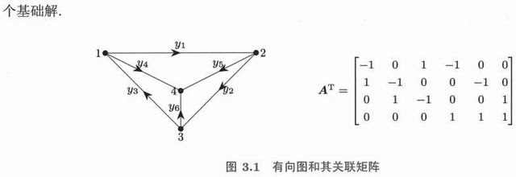
图 3-1 四个基本子空间：左图是 ℝⁿ（行空间 ⊥ 零空间），右图是 ℝᵐ（列空间 ⊥ 左零空间），中间的箭头是 A 的作用。（原书 p.103）
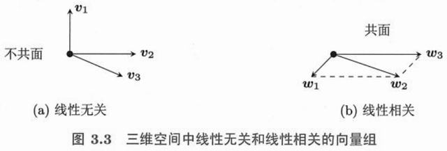
图 3-2 本章的全局图：秩 r 把两侧各切成两块，维数关系由此确定。（原书 p.118）
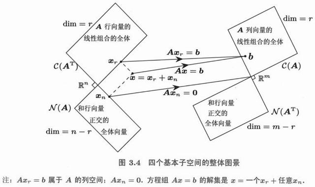
图 3-3 正交补的直观：行空间与零空间在原点处正交相交，只有零向量是公共部分。（原书 p.123）
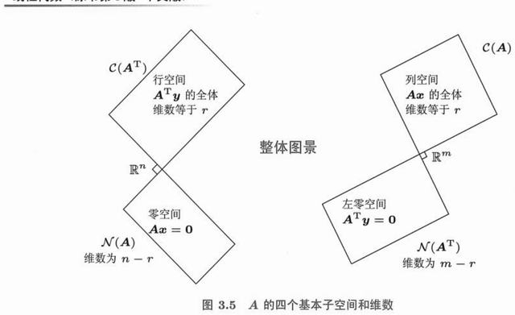
图 3-4 全书最重要的一张图 ：A 的四个基本子空间与维数。左菱形是 ℝⁿ（行空间维 r，零空间维 n−r），右菱形是 ℝᵐ（列空间维 r，左零空间维 m−r），两处相交都只有零向量。（原书 p.132）
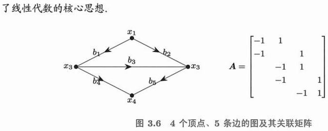
图 3-5 图与关联矩阵：4 个顶点、5 条边的有向图，其 5×4 关联矩阵 A 每行一条边（起点标 −1、终点标 +1）。零空间 = 各点电势（差值为 0 时无电流），行空间的维数 = 生成树边数。（原书 p.136）
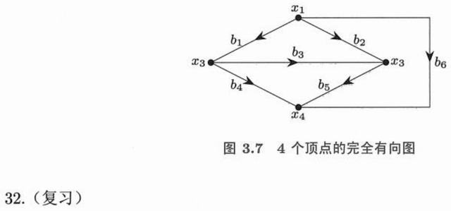
图 3-6 4 个顶点的完全有向图（6 条边）：边数 > 顶点数 − 1，必然出现回路，于是列向量线性相关——「有几个独立回路」就是零空间的维数 。（原书 p.142）
Strang 把这一章称为「正交性的巨大成功」。理由很简单：一旦基是正交的，所有公式都退化成一堆点积 ——投影不用求逆、最小二乘有了公式、QR 分解自动稳定。这一章是数据科学全部几何直觉的来源。
4.1 向量和子空间的正交性p.146 正交的定义与四个子空间的正交关系
两个向量正交就是点积为零。两个子空间 正交，要求更严：一个空间里的每个向量，都垂直于另一个空间里的每个向量 。
向量正交： v · w = 0
子空间正交： 对任意 v ∈ V、w ∈ W，都有 v · w = 0
记作 V ⊥ W，此时 V ∩ W = {0}（只能共享零向量）
正交补： V^⊥ = 所有与 V 中每个向量都正交的向量
性质：dim V + dim V^⊥ = n，且 (V^⊥)^⊥ = V
四个基本子空间正好构成两对正交补——这是第 3 章留下的最大伏笔。
两对正交补（全书最重要的一对等式）
行空间 C(Aᵀ) ⊥ 零空间 N(A) ，两者都在 ℝⁿ，维数相加 = n。
列空间 C(A) ⊥ 左零空间 N(Aᵀ) ，两者都在 ℝᵐ，维数相加 = m。
为什么行空间 ⊥ 零空间？设 x ∈ N(A)，则 Ax = 0，即 A 的
每一行 与 x 的点积都是 0。既然每一行都与 x 正交，这些行的任意组合（也就是整个行空间）当然都与 x 正交。
· 拖到夹角 90°
读数
v (2.00, 1.00)
w (-1.00, 2.00)
v · w 0.00
夹角 90.0°
关系 正交
正交
锐角
反向共线
垂直时点积恰为 0；此时两个向量张成的矩形面积 = ‖v‖‖w‖，也是 det 的绝对值。夹角大于 90° 时点积为负——这是「余弦相似度可以为负」的几何来源。
习题 4.1 原书 p.150 起 自测 2 题 · 点开看答案
v = (1,2,3) 与 w = (1,1,−1) 正交吗？
四个基本子空间的两组正交对？
1. 是。v·w = 1 + 2 − 3 = 0。
2. N(A) ⊥ C(Aᵀ)（都在 ℝⁿ 中），N(Aᵀ) ⊥ C(A)（都在 ℝᵐ 中）。
4.2 向直线和子空间作正交投影p.153 4.2.1 正交投影到直线p.155
投影要回答的问题是：把 b 垂直地压到某条直线（或某个子空间）上，落点在哪？ 答案由一个点积给出。
把 b 投影到 a 张成的直线上：
投影向量 p = a (aᵀb / aᵀa) ← 系数 = aᵀb / aᵀa
误差向量 e = b − p，且 e ⊥ a （这是投影的定义）
用矩阵写： P = aaᵀ / aᵀa p = Pb
例：a = (1, 2), b = (3, 1)
aᵀb = 5, aᵀa = 5 → p = 1·(1,2) = (1, 2)
e = (3,1) − (1,2) = (2, −1)，验算 e·a = 2 − 2 = 0 ✓
投影矩阵 P 有三个决定性性质，它们把「投影」与「任意矩阵」区分开：
P² = P （投影两次等于一次）
Pᵀ = P （对称）
rank(P) = 1 （投影到直线是一维的）
满足这三条的矩阵，一定是到某个方向的投影。
4.2.2 正交投影到子空间p.157
把 a 换成一整个矩阵 A，公式几乎照抄——只是标量除法变成了矩阵求逆。
P = A (AᵀA)⁻¹ Aᵀ p = Pb
b 投影到 C(A) 上
e = b − Pb ∈ N(Aᵀ)（误差垂直于列空间）
AᵀA 必须可逆 → 要求 A 的列线性无关
若 A 的列已经是标准正交的（记作 Q）：
P = Q Qᵀ ← 不需要求逆！
为什么 AᵀA 可逆要求列无关？因为若 Ax = 0 有非零解，则 AᵀAx = 0 也有非零解，AᵀA 就不可逆。反过来若列无关，xᵀAᵀAx = ‖Ax‖² > 0 ，AᵀA 正定、必可逆。这正是第 2.4.9 节「AᵀA 半正定」的直接应用。
· 拖 b 的圆点
读数
a (1.00, 2.00)
b (3.00, 2.00)
系数 aᵀb/aᵀa 1.400
投影 p (1.40, 2.80)
误差 ‖e‖ 1.79
e · a 0.00
一般
b 在直线上
b 垂直于直线
紫色是投影向量，灰色虚线是误差 e。「b 在直线上」时误差为 0；「b 垂直于直线」时投影退化成原点。
习题 4.2 原书 p.162 起 自测 2 题 · 点开看答案
a = (3,4)，b = (1,1)：b 在 a 上的投影向量。
P = I − aaᵀ/aᵀa 有哪些性质？
1. 系数 (b·a)/(a·a) = 7/25；投影 = (7/25)(3,4) = (0.84, 1.12)。
2. 对称、P² = P（幂等）、把任意向量投影到 a 的正交补上；I − P 才是投影到 a 上。
4.3 最小二乘法p.165 4.3.1 误差最小化p.166
当 Ax = b 无解时，退而求其次：找一个 x̂ 使 ‖Ax̂ − b‖ 最小。几何上就是把 b 投影到列空间 。
要找 x̂ 使 ‖Ax − b‖ 最小
误差向量 e = b − Ax̂ 必须垂直于列空间
→ Aᵀ(b − Ax̂) = 0
→ AᵀA x̂ = Aᵀb ← 正规方程
x̂ = (AᵀA)⁻¹ Aᵀ b （A 列无关时唯一）
p = Ax̂ = A(AᵀA)⁻¹Aᵀ b = Pb
正规方程的直观解释：把 b 投到列空间后剩下的误差 e，必须与 A 的每一列都正交 。写成矩阵就是 Aᵀe = 0 ，展开即得。这也说明为什么最小二乘解一定满足「残差与所有特征正交」——这是统计学里「残差与预测值不相关」的线性代数版本。
4.3.2 最小二乘法的全局图景p.168
把四个子空间与最小二乘放在一张图里，整件事就一目了然。
b ∈ ℝᵐ 被分解成两部分：
b = p + e
p = 投影到 C(A) ← 可解释的部分
e = 剩下的部分 ← 垂直于 C(A)，落在 N(Aᵀ)
最小二乘 = 找出这个正交分解
‖b‖² = ‖p‖² + ‖e‖² （勾股定理，这就是方差分解！）
4.3.3 直线拟合p.169
最经典的应用：给一堆点，找一条「最贴合」的直线 y = C + Dt 。
数据 (t₁,y₁), (t₂,y₂), (t₃,y₃)
方程数 > 未知数（3 个方程、2 个未知数）→ 一般无解
写成矩阵：
[1 t₁] [C] [y₁]
[1 t₂] [D] ≈ [y₂] ← ≈ 表示"尽量"
[1 t₃] [y₃]
正规方程：
[n Σt ] [C] [ Σy ]
[Σt Σt²] [D] = [ Σty ]
解出 C, D 就是拟合直线的截距与斜率
注意第一列全是 1——这是「截距项」的矩阵写法。凡是带常数项的拟合，第一列都是 1 ，这个模式在后面所有回归模型里重复出现。
· 拖四个数据点
拟合结果
截距 C 1.00
斜率 D 1.00
残差平方和 0.00
R² 1.00
完全共线
有噪声
散乱
蓝线是拟合直线，灰色竖线是每个点的残差。残差的代数和恒为 0（正规方程的第一行）；残差平方和最小时，残差与 t 也不相关 （第二行）。
4.3.4 当 A 列向量线性相关时求解 x̂p.171
若 A 的列相关，AᵀA 不可逆，正规方程有无穷多解。此时需要加一条规则来挑出唯一答案。
AᵀA 奇异 → 解不唯一
补救办法：在所有最小二乘解中，取范数最小 的那个
min ‖x‖ subject to AᵀAx = Aᵀb
这个解由广义逆 给出： x̂ = A⁺b
（见 4.5 节；等价于用 SVD 只保留非零奇异值）
为什么会出现列相关？典型场景是「特征重复」——你把同一个变量用两种单位（米和厘米）录了两遍。此时两个系数可以互相补偿，模型无法分辨谁起作用，但预测值 p = Ax̂ 是唯一的 ，只有系数不唯一。
4.3.5 抛物线拟合p.172
把基从 {1, t} 换成 {1, t, t²} ，拟合就从直线升级为抛物线，而正规方程的形式完全不变。
模型 y = C + Dt + Et²
A = [1 t₁ t₁²] ← 三列：1、t、t²
[1 t₂ t₂²]
[1 t₃ t₃²]
正规方程仍是 AᵀA x̂ = Aᵀb，只是 AᵀA 变成 3×3
推广：任意基函数 {φ₁(t), φ₂(t), …} 都可以这样做
→ 傅里叶级数拟合、样条拟合、多项式回归，全是同一个方程
这就是「用线性代数做非线性拟合」的秘密：模型对参数是线性的 就够了，对 t 是否线性无所谓。指数拟合 y = Ce^(Dt) 对 D 非线性，就不能直接套这个框架——除非先取对数。
习题 4.3 原书 p.174 起 自测 2 题 · 点开看答案
三点 (0,1)、(1,2)、(2,4) 拟合 y = C + Dt，写出正规方程并求解。
如果三点严格共线，最小二乘的残差是多少？
1. Σy = 7，Σt = 3，Σt² = 5，Σty = 10 → 3C + 3D = 7，3C + 5D = 10 → D = 1.5，C = 5/6 ≈ 0.833。
2. 0。此时 b 落在 A 的列空间内，正规方程给出的就是精确解。
4.4 正交矩阵和格拉姆-施密特正交化p.178 4.4.1 用单位正交基来作正交投影：用 Q 代替 Ap.181
如果 A 的列是标准正交 的（互相垂直且长度为 1），记作 Q，那么所有公式里的求逆全部消失。
正交矩阵 Q：QᵀQ = I → Q⁻¹ = Qᵀ
投影： P = Q Qᵀ （没有 (QᵀQ)⁻¹！）
系数： x̂ = Qᵀb （每个分量就是一个点积）
正规方程： QᵀQ x̂ = Qᵀb → I x̂ = Qᵀb
几何意义：Q 保持长度与角度不变
‖Qx‖ = ‖x‖， (Qx)·(Qy) = x·y
所以 Q 是旋转或反射
「QᵀQ = I 」意味着 Q 的列两两正交、长度 1。这也说明正交矩阵的条件数是 1 ——数值计算中最稳定的矩阵，误差不会被放大。
4.4.2 格拉姆-施密特正交化p.182
给一组线性无关的向量，怎么造出一组标准正交的向量？答案是「逐个减去前面已处理方向上的投影 」。
输入 a₁, a₂, a₃（线性无关）
q₁ = a₁ / ‖a₁‖
q₂ = a₂ − (q₁ᵀa₂) q₁ ← 减掉在 q₁ 上的投影
q₂ = q₂ / ‖q₂‖
q₃ = a₃ − (q₁ᵀa₃) q₁ − (q₂ᵀa₃) q₂
q₃ = q₃ / ‖q₃‖
每一步只用到点积和减法 ，原理就是 4.2 节的投影
Gram-Schmidt 的物理含义：把 a₂ 中「和 a₁ 重复的部分」剪掉，只留下新方向 。对 n 个向量做一遍，就得到 n 个正交方向。缺点是对舍入误差敏感——所以实际实现用「修正 Gram-Schmidt」（每算一步就重新正交化一次）或 Householder 变换。
4.4.3 QR 分解p.184
把 Gram-Schmidt 的过程写成矩阵，就得到 A = QR——和 A = LU 地位相当的第二个大分解。
A = Q R
Q：m×n，列标准正交（Gram-Schmidt 的结果）
R：n×n，上三角，R 的第 (i,j) 元 = qᵢᵀaⱼ
对 A 的每一列： aⱼ = (q₁ᵀaⱼ)q₁ + (q₂ᵀaⱼ)q₂ + … + (qⱼᵀaⱼ)qⱼ
↑ 这些系数就是 R 的第 j 列
最小二乘的 QR 解法：
AᵀAx̂ = Aᵀb → RᵀQᵀQRx̂ = RᵀQᵀb → Rx̂ = Qᵀb
回代即可，避免了 AᵀA（条件数被平方！）
QR 在数值上优于正规方程的原因：AᵀA 的条件数是 A 的平方 ，当 A 接近奇异时误差急剧放大；而 R 的条件数与 A 相同。
· 拖 a₁、a₂
读数
q₁ (1.00, 0.00)
q₂ (0.00, 1.00)
q₁ · q₂ 0.000
‖q₁‖, ‖q₂‖ 1.000, 1.000
R₁₁, R₁₂, R₂₂ 2.0, 1.0, 1.5
默认 接近共线
橙色虚线是 a₂ 在 q₁ 上的投影（被剪掉的部分），剩余部分归一化就是 q₂。数值上 q₁·q₂ 恒为 0——这就是正交化。
习题 4.4 原书 p.188 起 自测 2 题 · 点开看答案
Q 正交时，证明 ‖Qx‖ = ‖x‖。
对 a₁ = (1,1,0)、a₂ = (1,0,1) 做 Gram-Schmidt。
1. ‖Qx‖² = (Qx)ᵀ(Qx) = xᵀQᵀQx = xᵀx = ‖x‖²。正交变换保持长度（旋转/反射）。
2. q₁ = (1,1,0)/√2；a₂ − (a₂·q₁)q₁ = (1,0,1) − (1/2)(1,1,0) = (1/2,−1/2,1)，归一化 q₂ = (1,−1,2)/√6。
4.5 矩阵的广义逆p.192 4.5.1 m×n 矩阵 A 的广义逆 A⁺（n×m 矩阵）p.193
非方阵、或秩不足的方阵都没有普通逆。但可以定义一个最佳替代品 ，让「求逆」这件事对所有矩阵都有意义。
m×n 的 A ↔ n×m 的 A⁺（Moore-Penrose 广义逆）
定义（用 SVD 最清楚）：A = UΣVᵀ → A⁺ = VΣ⁺Uᵀ
Σ⁺ 把每个非零奇异值取倒数、再转置
四条性质（普通逆也满足前两条）：
① A A⁺ A = A
② A⁺ A A⁺ = A⁺
③ (A A⁺)ᵀ = A A⁺ （AA⁺ 是到列空间的投影）
④ (A⁺ A)ᵀ = A⁺ A （A⁺A 是到行空间的投影）
4.5.2 A 的重要作用是把行空间映射成列空间p.196
A 在两对正交补之间做了一次「搬运」，A⁺ 就是把它搬回去——这是理解广义逆最清晰的方式。
A: 行空间 → 列空间 （一一对应，可逆！）
零空间 → 0 （信息丢失，不可逆）
A⁺: 列空间 → 行空间 （把 A 的搬运原路返回）
左零空间 → 0 （同样丢信息）
所以在「有效部分」上，A⁺ 就是 A 的真正的逆；
在「无效部分」上，A⁺ 干脆把它清零（这就是最小范数解的来源）。
4.5.3 A = CR 的广义逆 A⁺ = R⁺C⁺p.196
广义逆也有类似「反序」的乘法法则，而且 A = CR 给出一条捷径。
(AB)⁺ = B⁺ A⁺ （与普通逆同构）
A = CR → A⁺ = R⁺ C⁺
其中 C 是 m×r 列满秩 → C⁺ = (CᵀC)⁻¹Cᵀ
R 是 r×n 行满秩 → R⁺ = Rᵀ(RRᵀ)⁻¹
所以 A⁺ = Rᵀ(RRᵀ)⁻¹(CᵀC)⁻¹Cᵀ
——秩为 r 时，只需对 r×r 的矩阵求逆，不必碰 m×n 的大矩阵
4.5.4 广义逆的例子——A 是图的关联矩阵p.197
这是一个把抽象定义落到实处的经典例子：图的关联矩阵 。
图：节点 1—2—3—4（3 条边）
关联矩阵 A（行为边，列为节点，每行有 +1 和 −1）：
A = [-1 1 0 0] 边 1: 1→2
[ 0 -1 1 0] 边 2: 2→3
[ 0 0 -1 1] 边 3: 3→4
A 的零空间 = 常数向量 (1,1,1,1)（所有节点电势同时加 c，边上的差不变）
rank(A) = 3 = 节点数 − 1，这就是树 的结构
A⁺ 的作用：由「边上的流量」反推「节点电势」——最小二乘意义下的解
关联矩阵把图论与线性代数焊在一起：零空间维数 = 连通分量个数 ，行空间的基对应生成树，A⁺ 给出「最小能量流」。这也是电路分析（基尔霍夫定律）的矩阵形式。
· 拖 b 到列空间外
读数
b (2.00, 1.00)
可解？ 是
A⁺b (1.00, 0.50)
‖A⁺b‖ 1.12
残差 ‖Ax̂−b‖ 0.00
在列空间内 在列空间外
A 的列空间是一条直线。b 在直线上时 A⁺b 逐字复原；b 在直线外时，A⁺b 给出「投影点 + 最小范数」的组合答案，残差不为 0 但已是最小。
习题 4.5 原书 p.199 起 自测 2 题 · 点开看答案
A = [[1,0],[0,1],[1,1]] 是满列秩，求 A⁺。
A⁺b 给出的是哪一个解？
1. A⁺ = (AᵀA)⁻¹Aᵀ，AᵀA = [[2,1],[1,2]]，(AᵀA)⁻¹ = (1/3)[[2,−1],[−1,2]] → A⁺ = (1/3)[[2,−1,1],[−1,2,1]]。
2. Ax = b 的最小二乘解中范数最小的那个（列满秩时就是最小二乘解本身）。
4.6 谈谈第4章：正交性的巨大成功p.199 这一章的成功可以总结成一个词：解耦 。正交让不同方向互不干扰，于是复杂问题被拆成若干个独立的一维问题。
投影
正交基下，每个方向的系数独立算：x̂ᵢ = qᵢᵀb。不用解方程组。
最小二乘
正规方程 AᵀAx̂ = Aᵀb；QR 分解让它变成回代，数值稳定。
傅里叶
正弦余弦就是函数空间的正交基——第 6.4 节的 FFT 是它的快速算法。
广义逆
A⁺ 把「不可逆」变成「最佳最小范数解」，让所有矩阵都能“求逆”。
简答 为什么 P = A(AᵀA)⁻¹Aᵀ 是投影矩阵？请用 P² = P 与 Pᵀ = P 验证。
对称性 ：Pᵀ = (A(AᵀA)⁻¹Aᵀ)ᵀ = A((AᵀA)⁻¹)ᵀAᵀ = A(AᵀA)⁻¹Aᵀ = P （因为 AᵀA 对称，其逆也对称）。
幂等性 ：P² = A(AᵀA)⁻¹Aᵀ · A(AᵀA)⁻¹Aᵀ = A(AᵀA)⁻¹(AᵀA)(AᵀA)⁻¹Aᵀ = A(AᵀA)⁻¹Aᵀ = P 。
两条成立，说明 P 是一个「投影到某子空间」的算子；再验证 Pb = b（当 b ∈ C(A) 时），就确认投影的靶子正是列空间。
判断 若 Q 的列标准正交，则 Q Qᵀ = I。
错误。 应当区分两个方向：QᵀQ = I 恒成立（列正交的定义）；但 QQᵀ = I 只在 Q 是方阵 时成立。
若 Q 是 m×n 且 m > n（长条矩阵），则 QQᵀ 是 m×m，秩只有 n < m，不可能等于单位阵。此时 QQᵀ 是投影到 Q 的列空间上的矩阵。
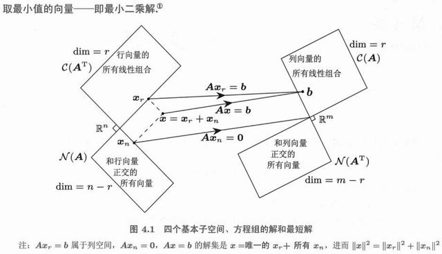
图 4-1 b 投影到 a 张成的直线上：p 是 b 在该方向的分量，e = b − p 与 a 垂直。（原书 p.146）
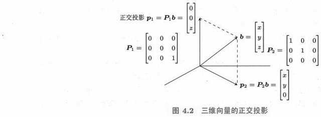
图 4-2 b 投影到列空间：误差 e 落在左零空间，与整个列空间正交。（原书 p.154）
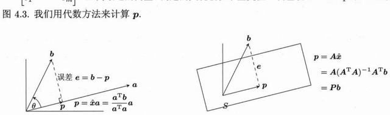
图 4-3 b = p + e 的正交分解，对应「可解释方差 + 残差方差」。（原书 p.155）
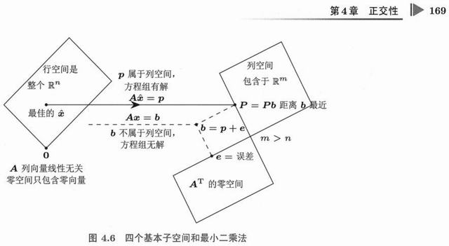
图 4-4 Gram-Schmidt 的几何：a₂ 减去它在 q₁ 上的投影，剩下的就是新方向。（原书 p.169）
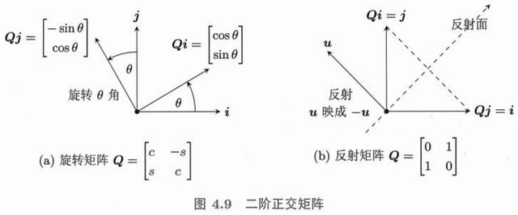
图 4-5 A = QR：Q 的列是正交基，R 记录每一列在这组基下的坐标。（原书 p.180）
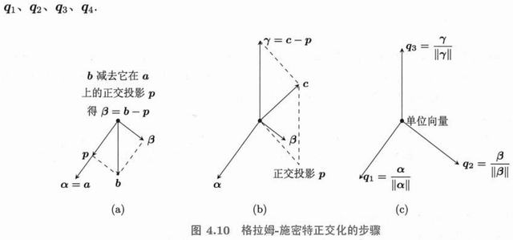
图 4-6 A 与 A⁺ 在四个子空间之间的搬运关系。（原书 p.183）
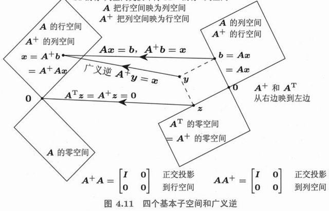
图 4-7 图的关联矩阵：零空间是常数电势，行空间对应生成树。（原书 p.194）
行列式只有一个 几何意义：体积的缩放倍率 。det = 0 就意味着空间被压扁、矩阵不可逆。记住这一条，十多个性质全都能自己推出来，不必死记。
5.1 三阶方阵的行列式和代数余子式p.201 5.1.1 三阶方阵的行列式p.202
2×2 的行列式是「两个向量张成的平行四边形面积」；3×3 是「三个向量张成的平行六面体体积」。
2×2： det [a b] = ad − bc
[c d]
3×3： 沿第一行展开
det A = a₁₁(a₂₂a₃₃ − a₂₃a₃₂) − a₁₂(a₂₁a₃₃ − a₂₃a₃₁) + a₁₃(a₂₁a₃₂ − a₂₂a₃₁)
= a₁₁M₁₁ − a₁₂M₁₂ + a₁₃M₁₃ ← 符号 + − + 交替
例： A = [1 2 3]
[4 5 6]
[7 8 10]
det = 1(50−48) − 2(40−42) + 3(32−35) = 2 + 4 − 9 = −3
那个「+ − +」的交替符号不是人为规定，而是由排列的奇偶性 决定的。它的作用很实际：保证「交换两行，行列式变号」这条性质成立。
5.1.2 代数余子式和 A⁻¹ 的公式p.204
把余子式 Mᵢⱼ 加上符号，就得到代数余子式 Cᵢⱼ = (−1)^(i+j) Mᵢⱼ。用它可以写出逆矩阵的显式公式。
余子式 Mᵢⱼ：删掉第 i 行、第 j 列后剩下的行列式
代数余子式 Cᵢⱼ = (−1)^(i+j) Mᵢⱼ
逆矩阵公式： A⁻¹ = (1/det A) · Cᵀ ← 注意是余子式矩阵的转置
2×2 的特例（最好记）：
A = [a b] → A⁻¹ = 1/(ad−bc) · [ d −b]
[c d] [−c a]
对角线互换，副对角线变号
这个公式在理论上极重要（它证明了「det ≠ 0 ⟹ 可逆」），但在数值计算里几乎不用——n ≥ 4 时余子式的计算量是 n! 级别的，实际都用 LU 或 QR。
5.1.3 三对角矩阵p.205
三对角矩阵的行列式有一个漂亮的递推关系，这是「结构化矩阵」的典型例子。
Aₙ = [1 1 0 …] （对角 1，上下副对角也是 1）
[1 1 1 …]
[0 1 1 …]
按第一行展开 → Dₙ = Dₙ₋₁ − Dₙ₋₂
D₁ = 1, D₂ = 0, D₃ = −1, D₄ = −1, D₅ = 0, D₆ = 1 …
→ 周期为 6 的数列
递推式 Dₙ = Dₙ₋₁ − Dₙ₋₂ 与斐波那契几乎一样（只差一个符号），所以解也是「特征方程 λ² = λ − 1 的根」的幂。第 6.2.2 节会用同样的方法解斐波那契。
· 拖两个向量
读数
v (2.00, 1.00)
w (1.00, 3.00)
det 5.00
面积 |det| 5.00
定向 正（逆时针）
一般 共线 反向
把 w 拖到与 v 共线，平行四边形被压扁成线段，det 归零、矩阵不可逆。交换 v 与 w，det 变号 ——这就是「有向面积」的含义。
习题 5.1 原书 p.206 起 自测 2 题 · 点开看答案
det [[1,2,3],[0,4,5],[0,0,6]] = ?
交换两行，行列式如何变化？两行相同呢？
1. 上三角，行列式 = 对角元之积 = 1·4·6 = 24。
2. 交换两行变号；两行相同则行列式为 0（交换后不变号又变号 → det = −det）。
5.2 行列式的计算和使用p.208 5.2.1 证明式（5.10）～式（5.13）p.209
这四条性质把行列式与消元法彻底打通，也是所有计算的基础。
(5.10) det(AB) = det(A) · det(B) ← 体积倍率相乘
(5.11) det(A⁻¹) = 1 / det(A)
(5.12) det(Aᵀ) = det(A) ← 行与列地位对称
(5.13) det(A) = 主元之积 ← 消元直接给出答案
由 (5.10) 立刻推出：det(P) = ±1（置换矩阵），det(Q) = ±1（正交矩阵）
(5.13) 的推导只需一句话：A = LU ，而 det(L) = 1 （单位下三角），det(U) = 主元之积 （上三角行列式等于对角元相乘）。所以算行列式的最快方法就是消元 ，不是展开。
5.2.2 克莱姆法则解方程组 Ax = bp.210
把解写成「两个行列式相除」，形式极其优雅。
Cramer 法则： 若 det A ≠ 0，则
xj = det(Aj ) / det(A)
其中 Aj 是把 A 的第 j 列换成 b 得到的矩阵
例： [2 1][x] = [8] det A = 5
[1 3][y] [9]
x = det[8 1; 9 3]/5 = (24−9)/5 = 3
y = det[2 8; 1 9]/5 = (18−8)/5 = 2
Cramer 法则的理论价值远大于实用价值：它明确写出了「解是 b 的线性函数」，从而证明解对 b 连续依赖 。但计算量是 O(n·n!)，n = 20 时天文数字——实用还是靠消元。
5.2.3 行列式的完全展开式：n! 项p.211
行列式的原始定义是一个巨大的和式，恰好解释了为什么它计算昂贵。
det A = Σ (±) a1,σ(1) a2,σ(2) … an,σ(n) （σ 取遍所有排列）
符号 = 排列 σ 的奇偶性（偶数个对换为 +，奇数为 −）
项数 = n! 3 阶 6 项、5 阶 120 项、10 阶 362.88 万项、20 阶 2.4×10¹⁸ 项
这就是为什么 n 稍大就必须用消元（O(n³)）。n! 与 n³ 的差距，是「定义」与「算法」的差距 ——数学定义追求清晰，算法追求可行，两者经常不在一个量级上。
习题 5.2 原书 p.212 起 自测 2 题 · 点开看答案
det [[2,1],[1,2]] 与它的特征值。
三角矩阵的行列式怎么算？
1. det = 3；特征值 3 与 1（和 = 迹 4，积 = det 3）。
2. 等于对角元之积（展开时只有对角那一项非零）。
5.3 行列式与面积和体积p.214 三个视角：面积、体积、缩放倍率
行列式的几何解释不是「一种比喻」，而是它的本来面目 。
二维：|det A| = 单位正方形被 A 变换后的面积
三维：|det A| = 单位立方体被 A 变换后的体积
n 维：|det A| = n 维单位盒子的体积
符号的含义：定向
det > 0 → 保持手性（右手系还是右手系）
det < 0 → 翻转手性（像照镜子）
det = 0 → 压扁（降维），不可逆
三角矩阵 ：det = 对角元之积（最简单的情形）
剪切变换 ：[1 k; 0 1] 的 det = 1 → 面积不变，只是变成平行四边形
由「体积倍率」可以立刻推出所有性质：交换两行 = 镜像 = 变号 ；某行乘 c = 一个方向拉伸 c 倍 = 体积乘 c ；两行相同 = 压扁 = det 0 。这就是为什么说「记住几何意义，性质不用背」。
一个常用推论
det(AᵀA) = det(A)² 。所以
AᵀA 的行列式永远非负——这与第 2.4.9 节「AᵀA 半正定」一致。
另一个推论：
正交矩阵的 det = ±1 ，因为
det(QᵀQ) = det(I) = 1 = det(Q)² 。
· 拖 n 看 Dₙ 的周期 6
阶数 n 6
读数
Dₙ 1
递推式 Dₙ₋₁ − Dₙ₋₂
周期 6
D₁=1, D₂=0, D₃=−1, D₄=−1, D₅=0, D₆=1，然后重复。n ≡ 2 或 5 (mod 6) 时行列式为 0，矩阵奇异——这与三对角矩阵的特征值 cos 公式同源。
简答 为什么第 5.3 节说「det = 0 意味着矩阵不可逆」，请用体积解释。
det 是变换对体积的缩放倍率。若 det = 0，则单位立方体被压成体积为零的东西（一个平面、一条线或一个点），也就是整个空间被降维压缩 。
降维必然丢失信息：不同的输入会被压到同一个输出上（这些输入之差落在零空间里）。既然有多对一的映射，就不存在逆映射——矩阵不可逆。
反过来，若 det ≠ 0，体积没有被压成零，映射是一一对应的，逆映射存在，det(A⁻¹) = 1/det(A) 也说明倍率可以倒过来。
判断 若 A 的所有元素都为正，则 det A > 0。
正确 （对 2×2 和 3×3 都成立，一般地也成立）。但要注意这不等于「行列式一定很大」——元素全为正时可能接近共线，det 可以非常小。
反过来的说法则不成立：det > 0 不要求元素为正，例如 [[1,−2],[0,1]] 的 det = 1。
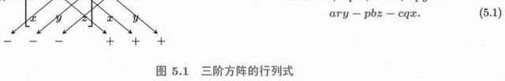
图 5-1 2×2 行列式的绝对值 = 平行四边形面积，符号表示定向。（原书 p.203）
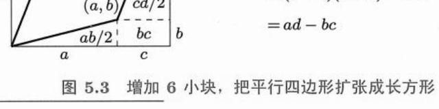
图 5-2 3×3 行列式对应平行六面体的体积。（原书 p.215）
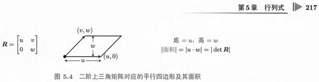
图 5-3 三对角矩阵的行列式递推：沿第一行展开得到 Dₙ = Dₙ₋₁ − Dₙ₋₂。（原书 p.217）
习题 5.3 原书 p.217 起 自测 2 题 · 点开看答案
顶点为 (0,0)、(3,0)、(0,4) 的三角形面积。
(1,2) 与 (3,1) 张成的平行四边形面积。
1. 面积 = ½·3·4 = 6，即 ½|det[[3,0],[0,4]]|。
2. |det[[1,3],[2,1]]| = |1·1 − 2·3| = 5。
矩阵乘向量通常会同时改变方向和长度。但总有那么几个特殊方向，只改变长度、不改变方向 ——这就是特征向量。找到它们，矩阵的幂、微分方程的解、PageRank、PCA 就全部变成一维问题。这一章是全书的第二个高潮。
6.1 初识特征值 Ax = λxp.219 6.1.1 特征方程：det(A − λI) = 0p.223
把 Ax = λx 移项，得 (A − λI)x = 0 。这是一个齐次方程，要它有非零解 ，系数矩阵必须奇异。
Ax = λx （x ≠ 0）
(A − λI)x = 0 有非零解
⟺ det(A − λI) = 0 ← 特征方程
例： A = [3 1]
[1 3]
det [3−λ 1 ] = (3−λ)² − 1 = λ² − 6λ + 8 = 0
[ 1 3−λ]
→ λ = 2 或 4
代入 λ=2： (A−2I)x = [1 1] x = 0 → x₁ = (1, −1)
[1 1]
代入 λ=4： (A−4I)x = [−1 1] x = 0 → x₂ = (1, 1)
[1 −1]
注意特征向量只能确定到一个倍数 （(1,1) 与 (2,2) 都是特征向量），所以通常归一化成单位向量。另外，n 阶矩阵的特征方程是 n 次多项式，必有 n 个根——但可能有重根、可能是复数 。
· 拖 x 的圆点
a₁₂ 1.0
读数
x (1.00, 0.00)
Ax (3.00, 1.00)
叉积 x×Ax 1.00
λ₁, λ₂ 2, 4
状态 非特征方向
对齐 λ₁
对齐 λ₂
红色直线是两条特征方向。把 x 拖到线上，Ax 与 x 平行 （叉积为 0），此时 Ax = λx——那个比值就是特征值。
6.1.2 行列式和迹p.225
不必解出每个 λ，也能知道它们的一部分信息——这两个量总是可以直接读出。
迹 trace(A) = a₁₁ + a₂₂ + … + aₙₙ = λ₁ + λ₂ + … + λₙ
行列式 det(A) = λ₁ · λ₂ · … · λₙ
特征多项式： λⁿ − (tr A)λⁿ⁻¹ + … + (−1)ⁿ det A = 0
↑ 一次项系数是 tr，常数项是 det
例： A = [3 1; 1 3] → tr = 6 = 2+4 ✓ det = 8 = 2×4 ✓
这两个关系是最好的自检工具 ：算出 λ 之后加一加、乘一乘，对不上就说明算错了。它们还能立刻判断可逆性：det A ≠ 0 ⟺ 所有 λ ≠ 0 ，也就是「A 可逆 ⟺ 没有零特征值」。
6.1.3 虚数特征值p.226
实矩阵可以有复数特征值。这不是数学上的怪例，而是旋转 的必然结果。
A = [0 −1] （旋转 90°）
[1 0]
det(A−λI) = λ² + 1 = 0 → λ = ±i
为什么？旋转 90° 之后没有任何实向量还在原方向上——
所有向量都被转走了，只有复向量才能"保持方向"。
共轭成对： 实矩阵的复特征值总是成共轭出现 (a ± bi)
模长： |λ| = 1 时是纯旋转；|λ| < 1 是螺旋收缩；> 1 是螺旋放大
复特征值在物理上对应振荡 ：弹簧振动、LC 电路、人口周期波动。第 6.5 节的微分方程会给出 e^(at)(cos bt + i sin bt) ，实部控制衰减、虚部控制频率。
6.1.4 AB 和 A + B 的特征值p.227
特征值对加法、乘法都不 保持简单关系，这一点必须记清楚。
AB 与 BA 有相同的非零特征值 （这是真的，很重要）
A 与 B 的特征值之和 ≠ A+B 的特征值（一般不等）
A 与 B 的特征值之积 ≠ AB 的特征值（一般不等）
反例：A = [1 1; 0 0]，B = [0 0; 1 1]
AB = [1 1; 0 0]，特征值 1, 0
BA = [0 0; 1 1]，特征值 1, 0 ← 相同（非零部分）
但 A+B = [1 1; 1 1]，特征值 2, 0 ≠ 1+0 + 1+0
例外情形：若 A、B 可交换 （AB = BA），则它们共享特征向量，此时特征值可以相加。这个条件在量子力学（对易算符）和信号处理（循环矩阵）里都出现。
6.1.5 MATLAB 中的 Eigshow 函数p.230
Strang 特别推荐的可视化工具：拖动一个单位向量 x，同时观察 Ax 的变化。
Eigshow 的观察要点：
① 拖 x 绕单位圆一圈，Ax 画出一条椭圆
② 当 Ax 与 x 共线时，这一瞬间就是特征方向
③ 2×2 矩阵的 Ax 轨迹是一个椭圆，主轴方向 = 特征向量
④ 拖动过程中可以数出「共线发生了 2 次」——对应 2 个特征方向
本页的实验 6.1 就是这个 Eigshow 的可运行版本：把 x 拖到红色直线上，看 Ax 与 x 重合。这是理解特征值最快的途径 ——先看见，再算。
习题 6.1 原书 p.231 起 自测 2 题 · 点开看答案
A = [[3,1],[0,2]] 的特征值与特征向量。
迹、行列式与特征值的关系？
1. λ = 3（x = (1,0)），λ = 2（x = (1,−1)）。上三角矩阵的特征值就是对角元。
2. λ₁ + … + λₙ = tr(A)，λ₁···λₙ = det(A)。
6.2 矩阵的对角化p.235 6.2.1 相似矩阵：特征值相同p.239
如果两个矩阵只差一次「换基」，它们就是相似的，特征值完全相同。
相似：B = M⁻¹ A M
特征值不变：det(B−λI) = det(M⁻¹(A−λI)M) = det(A−λI)
特征向量跟着换：若 Ax = λx，则 B(M⁻¹x) = λ(M⁻¹x)
对角化是特殊情形： 取 M = S（特征向量矩阵）
S⁻¹ A S = Λ Λ 是对角阵，对角元是特征值
⟺ A = S Λ S⁻¹
几何含义：换到特征向量这组基下看，变换就是各方向独立伸缩 。所以「对角化」= 找到一组让矩阵变成最简形式的坐标系。对角化的条件是：A 有 n 个线性无关的特征向量 。
6.2.2 斐波那契数列p.241
这是对角化最经典的应用：一个递推数列，被矩阵化之后通项公式自动掉出来。
Fk+2 = Fk+1 + Fk , F₀ = 0, F₁ = 1
写成矩阵： [Fk+1 ] = [1 1] [Fk ]
[Fk+2 ] [1 0] [Fk+1 ]
↑ A
A 的特征值： λ² − λ − 1 = 0 → λ₁ = (1+√5)/2 ≈ 1.618 （黄金比）
λ₂ = (1−√5)/2 ≈ −0.618
Fk = c₁λ₁ᵏ + c₂λ₂ᵏ ， 代入 F₀=0, F₁=1 定出 c₁, c₂
k 很大时 λ₂ᵏ → 0， Fk ≈ λ₁ᵏ/√5
这就是为什么相邻斐波那契数之比趋于黄金比：主特征值支配了长期行为 。这个模式在人口模型、马尔可夫链、PageRank 里反复出现——「幂迭代收敛到主特征向量」说的就是这件事。
6.2.3 矩阵方幂 Aᵏp.242
对角化的最大用处：把「k 次乘法」变成「k 次乘方」。
A = S Λ S⁻¹
A² = S Λ S⁻¹ · S Λ S⁻¹ = S Λ² S⁻¹
Aᵏ = S Λᵏ S⁻¹ ← Λᵏ 只需把对角元各自 k 次方
所以 Aᵏ 的行为完全由 λᵏ 决定：
|λ| > 1 → 分量爆炸（不稳定）
|λ| < 1 → 分量衰减到 0（稳定）
|λ| = 1 → 振荡或守恒
这条结论解释了为什么「最大特征值」如此重要：它是系统长期增长率的对数 。第 9 章的梯度下降收敛速度、第 10 章神经网络的稳定性，都在看谱半径（最大 |λ|）。
6.2.4 不可对角化的矩阵（选讲）p.243
当特征向量不够 n 个时，矩阵不可对角化。但可以化成「几乎对角」的若尔当形。
A = [1 1] λ = 1（二重根），但只有一个特征向量 (1,0)
[0 1] → 不可对角化
若尔当形： J = [1 1] （对角 + 上方的 1）
[0 1]
此时 Aᵏ = [1 k] ← 出现多项式增长，而不是纯指数
[0 1]
这个例子的意义：重特征值 + 特征向量不足 = 多项式因子 k 。微分方程里 te^t 这种解，就是若尔当块的连续版本。工程上称为「临界稳定」或「共振」。
· 拖 k 与 λ₂
k 3
λ₂ 0.60
读数
λ₁ 1.50
λ₁ᵏ 3.38
λ₂ᵏ 0.22
比值 λ₂ᵏ/λ₁ᵏ 0.064
随着 k 增大，λ₂ᵏ 相对 λ₁ᵏ 迅速变小时，方向被 λ₁ 的特征向量垄断——这就是幂迭代 求主特征向量的原理，也是 PageRank 的算法基础。
习题 6.2 原书 p.246 起 自测 2 题 · 点开看答案
对 A = [[3,1],[0,2]] 求 Aᵏ。
矩阵可对角化的充分必要条件？
1. A = SΛS⁻¹，S = [[1,1],[0,−1]] → Aᵏ = [[3ᵏ, 3ᵏ − 2ᵏ],[0, 2ᵏ]]。
2. 有 n 个线性无关的特征向量（等价于每个特征值的几何重数 = 代数重数）。
6.3 对称正定矩阵p.251 6.3.1 快速证明：正交的特征向量和实特征值p.251
对称矩阵的两个「最好性质」有一个极短的证明，值得背下来。
性质一：特征值全是实数
若 Ax = λx，取共轭转置： x̄ᵀA = λ̄x̄ᵀ（A 实对称）
左乘 x： x̄ᵀAx = λ x̄ᵀx 且 xᵀAx 的共轭 = λ̄ x̄ᵀx
两式相减 → (λ − λ̄)‖x‖² = 0 → λ = λ̄（实数）
性质二：不同特征值的特征向量正交
Ax = λx, Ay = μy
λxᵀy = (Ax)ᵀy = xᵀAᵀy = xᵀAy = μxᵀy
→ (λ−μ)xᵀy = 0， λ ≠ μ ⟹ xᵀy = 0
6.3.2 正定矩阵p.252
正定是对称矩阵里「最好」的一类：它对应的二次型像一个向上的碗。
A 正定 ⟺ 对所有 x ≠ 0，都有 xᵀAx > 0
等价判据（全部等价，任选其一）：
① 所有特征值 λᵢ > 0
② 所有顺序主子式 > 0
③ 所有主元 > 0（消元不换行且都为正）
④ 存在可逆 R 使 A = RᵀR
⑤ 二次型 xᵀAx 的图像是开口向上的碗
6.3.3 顺序主子式判据和主元判据p.254
这两种判据都是「不需要算特征值」的实用检测法。
顺序主子式判据：
1×1 左上角 > 0，2×2 左上角 > 0，…，n×n 全部 > 0
主元判据：
消元得到的 n 个主元全部 > 0
两者等价（因为 dₖ = 第 k 个主子式 / 第 k−1 个主子式）
例： A = [2 −1] → 主子式 2 > 0, det = 3 > 0 → 正定
[−1 2]
注意：判据要求「从左上角开始」的顺序 主子式，而不是所有子式。存在所有子式都为正但顺序主子式为负的矩阵——那是「非正定但主子式全正」的陷阱。
6.3.4 正定矩阵和极小值问题p.257
多变量微积分里的「二阶导数判据」，在矩阵语言里就是「Hessian 正定」。
f(x) = ½xᵀAx − bᵀx + c （A 正定）
梯度 ∇f = Ax − b = 0 → x* = A⁻¹b （唯一驻点）
Hessian = A 正定 → x* 是全局最小值点
f(x*) = c − ½bᵀA⁻¹b
反过来：A 负定 → 最大值；A 不定 → 鞍点
这条给出了线性方程组 Ax = b 的一个全新解释：解方程 = 求一个二次函数的最小值 。这就是共轭梯度法、梯度下降法能解线性方程组的原因，也是第 9 章优化理论的开端。
6.3.5 半正定矩阵p.258
把「> 0」放宽成「≥ 0」，就得到半正定。它允许方向被压扁（零特征值），但不允许翻转。
半正定 ⟺ xᵀAx ≥ 0 对所有 x ⟺ 所有 λᵢ ≥ 0
典型来源：AᵀA 永远是半正定的 （xᵀAᵀAx = ‖Ax‖² ≥ 0）
协方差矩阵永远是半正定的（第 10.3.7 节）
半正定的几何：碗被压扁成「槽」——某个方向上完全平坦（零特征值）
→ 最小值不唯一（一整条谷底）
6.3.6 椭圆 ax² + 2bxy + cy² = 1p.259
二次型的等值线是椭圆（或双曲线），主轴方向正是特征向量。
ax² + 2bxy + cy² = 1 ↔ xᵀAx = 1, A = [a b]
[b c]
A 正定 → 等值线是椭圆 ，半轴长 = 1/√λᵢ
A 不定 → 等值线是双曲线
A 半正定 → 退化成两条平行线或一个点
变换 x = Qy（Q 为正交特征向量矩阵）：
→ λ₁y₁² + λ₂y₂² = 1 ← 没有交叉项，轴对齐了
「消去交叉项」就是「旋转坐标系到主轴」——这是对角化的几何版本。统计学的 PCA、力学的惯性主轴、图像处理的椭圆拟合，用的都是这一招。
6.3.7 最优化和机器学习p.260
正定矩阵在机器学习里无处不在，因为几乎所有「拟合」最后都归结为一个二次型的最小化。
最小二乘： min ‖Ax − b‖² → 正规方程 AᵀAx̂ = Aᵀb
AᵀA 半正定，列无关时正定 ，于是解唯一
岭回归： min ‖Ax − b‖² + λ‖x‖²
→ (AᵀA + λI)x̂ = Aᵀb
AᵀA + λI 一定正定（加了 λI 把零特征值抬起来）
牛顿法： x ← x − H⁻¹∇f （H 是 Hessian，正定时收敛最快）
这三个例子的共同点：「加一点正定」就能把病态问题变成良态问题 。岭回归的 λI 就是这个思想的典型——它相当于在碗底垫一层，让原本平坦的方向也有坡度。
6.3.8 实对称矩阵都可以正交对角化p.261
这是谱定理（Spectral Theorem），线性代数最漂亮的结论之一。
谱定理： A 实对称 ⟹ 存在正交矩阵 Q 使
A = Q Λ Qᵀ （Qᵀ = Q⁻¹，Q 的列是标准正交特征向量）
展开成秩 1 之和：
A = λ₁q₁q₁ᵀ + λ₂q₂q₂ᵀ + … + λₙqₙqₙᵀ
每一项 qᵢqᵢᵀ 是一个到 qᵢ 方向的投影矩阵 ！
所以：A = 若干个「正交投影」的加权和，权重就是特征值
这个展开是 SVD 的前身（第 7 章）：SVD 把「对称矩阵的谱定理」推广到任意矩阵 ，代价是左右两侧用两组不同的正交基。理解了谱定理，SVD 就只是加了「两个旋转」。
· 拖 (b, c) 橙点 = 改矩阵
b（交叉项） 0.50
c（y²系数） 2.0
读数
λ₁ 2.21
λ₂ 0.79
det 1.75
类型 正定（椭圆）
拖橙色 (b, c) 落点 ：它就是矩阵 A = [[1, b], [b, c]] 的第二列。往下拖（c 变小）过了 c = b² 这条线，det 变负，等高线立刻从封闭椭圆裂成双曲线，原点变成鞍点 ——正定性就这样丢掉了。
习题 6.3 原书 p.262 起 自测 2 题 · 点开看答案
A = [[2,1],[1,2]] 正定吗？
举出正定矩阵的三条等价判据。
1. 正定。特征值 3 与 1 全正；顺序主子式 2 > 0、det = 3 > 0。
2. ① 全部特征值 > 0；② 全部顺序主子式 > 0；③ 对一切 x ≠ 0 有 xᵀAx > 0；④ 存在满秩 R 使 A = RᵀR；⑤ 所有主元 > 0。
6.4 复数、复向量和复矩阵p.267 6.4.1 复向量：长度 ‖v‖ 和内积 v̄ᵀwp.269
复数的内积必须加共轭，否则「长度」会算出负数。
复内积： v̄ᵀw = v̄₁w₁ + v̄₂w₂ + … ← 第一个向量取共轭
长度： ‖v‖² = v̄ᵀv = |v₁|² + |v₂|² + … ← 一定是实数且 ≥ 0
正交： v̄ᵀw = 0
注意 v̄ᵀw 与 w̄ᵀv 是共轭 关系，不是相等——所以复内积不满足交换律
6.4.2 复矩阵 A 及其共轭转置 Aᴴp.269
转置在复数世界的对应物是「共轭转置」，记作 Aᴴ （也写作 A*）。
Aᴴ = Āᵀ （先共轭，再转置；顺序可交换）
性质： (AB)ᴴ = BᴴAᴴ， (Aᴴ)ᴴ = A， (Aᴴ)⁻¹ = (A⁻¹)ᴴ
Hermitian 矩阵 ：Aᴴ = A（实对称的复数版）
酉矩阵 ：UᴴU = I（正交矩阵的复数版）
两者满足与实情形完全平行的定理（实特征值、正交特征向量）
6.4.3 复矩阵 A 的四个基本子空间p.269
第 3 章的整张图在复数域上照搬，只是把 Aᵀ 换成 Aᴴ 。
C(A) 列空间， 在 ℂᵐ 中，维数 r
N(A) 零空间， 在 ℂⁿ 中，维数 n − r
C(Aᴴ) 行空间， 在 ℂⁿ 中，维数 r
N(Aᴴ) 左零空间，在 ℂᵐ 中，维数 m − r
正交关系：C(Aᴴ) ⊥ N(A)， C(A) ⊥ N(Aᴴ)
Hermitian 矩阵的特征值仍为实数——这是第 6.3.1 节证明的复数版
6.4.4 Sᵀ = S：实特征值和酉正交的特征向量p.270
用 Hermitian 语言重述谱定理，形式更统一。
Sᴴ = S（Hermitian）
⟹ 所有 λ 是实数
⟹ 不同 λ 的特征向量互相正交（在复内积意义下）
⟹ S = Q Λ Qᴴ，Q 是酉矩阵
为什么实对称矩阵的特征值必为实数？
若 Sx = λx，则 λ‖x‖² = x̄ᵀSx = (x̄ᵀSx)‾ = λ̄‖x‖²
→ λ = λ̄ → λ 实数
6.4.5 置换矩阵 P 的复特征值和特征向量p.270
置换矩阵是理解「复特征值从哪来」的最好例子——它没有实数特征值，但结构极其规整。
P = [0 1 0] （循环移位：把向量整体挪一位）
[0 0 1]
[1 0 0]
det(P − λI) = 1 − λ³ = 0 → λ = 1, ω, ω² （ω = e^(2πi/3)）
特征向量： v = (1, ω, ω²) ← 傅里叶向量
P v = ωv （整体乘一个相位因子）
|λ| = 1：置换不改变长度，只在复平面上旋转
6.4.6 所有循环矩阵 C 有相同的傅里叶特征向量p.272
循环矩阵的每一行都是上一行的循环移位。它们的特征向量与具体数值无关，永远是傅里叶向量。
C = [c₀ c₁ c₂] （第一行循环移位得到其余行）
[c₂ c₀ c₁]
[c₁ c₂ c₀]
特征向量： vₖ = (1, ωₖ, ωₖ²), ωₖ = e^(2πik/3)
特征值： λₖ = c₀ + c₁ωₖ + c₂ωₖ² ← 就是多项式的取值！
关键：所有循环矩阵共享同一组特征向量
→ 它们可以同时对角化，而且对角化矩阵就是傅里叶矩阵 F
6.4.7 快速傅里叶变换p.272
FFT 不是新数学，而是「用分治计算傅里叶矩阵乘法」的算法。
直接算 Fₙx：O(n²) 次运算
FFT： O(n log n)
原理（Cooley-Tukey）：
Fₙ 可以分解成两个 Fn/2 加一些「旋转因子」
ωₙ² = ωn/2 → 递归
n = 10⁶ 时：n² = 10¹² vs n log n ≈ 2×10⁷ —— 差 5 万倍
这就是为什么 FFT 被称为「二十世纪最重要的算法之一」
6.4.8 循环矩阵相乘 CD = DCp.273
所有循环矩阵互相可交换——这是一个非常强的结构性质。
若 C、D 都是循环矩阵，则 CD = DC
原因：它们共享同一组特征向量，在同一组基下都是对角阵，
对角阵当然互相可交换。
推论：循环矩阵的乘法 = 多项式的乘法（模 xⁿ − 1）
在傅里叶基下，乘法变成逐点相乘 （O(n)，不是 O(n²)）
这条性质是「卷积定理」的矩阵表述，也是数字信号处理里「用 FFT 做快速卷积」的理论依据。
6.4.9 信号处理中的卷积p.274
卷积就是一个循环矩阵（或 Toeplitz 矩阵）乘一个向量。
(c * x)ₖ = Σⱼ cⱼ xk−j ← 卷积的定义
写成矩阵： c * x = C x ，C 是循环矩阵
卷积定理： 卷积的傅里叶变换 = 傅里叶变换的乘积
F(c * x) = F(c) · F(x) ← 逐点相乘
所以： 先 FFT，逐点乘，再 IFFT = O(n log n) 的卷积
直接算 = O(n²)
· 拉滑块改旋转角
旋转角 θ 60°
缩放 r 1.00
读数
λ 0.500 + 0.866i
|λ| 1.000
类型 纯旋转
|λ| = 1 时轨迹是闭合的圆（能量守恒）；|λ| < 1 螺旋向内（衰减振荡）；|λ| > 1 螺旋向外（不稳定）。实部决定衰减，虚部决定频率。
习题 6.4 原书 p.274 起 自测 2 题 · 点开看答案
旋转 90° 的矩阵 [[0,−1],[1,0]] 的特征值？
复内积与实点积的关键区别？
1. λ = ±i。实矩阵可以没有实特征值——旋转把每个实向量都转走了。
2. 要用共轭：vᴴw = Σ v̄ᵢwᵢ，这样 ‖v‖² = vᴴv > 0 才成立（不会出现负的「长度平方」）。
6.5 解线性微分方程p.275 6.5.1 du/dt = Au 的解p.276
特征值分解把微分方程组变成 n 个互不耦合的标量方程。
du/dt = Au, u(0) = u₀
若 A = S Λ S⁻¹，令 u = Sv：
S dv/dt = ASv = SΛv → dv/dt = Λv （解耦了！）
每个分量： dvᵢ/dt = λᵢvᵢ → vᵢ(t) = vᵢ(0) e^(λᵢt)
u(t) = c₁e^(λ₁t)x₁ + c₂e^(λ₂t)x₂ + … + cₙe^(λₙt)xₙ
这个解的结构与斐波那契完全平行：都是「特征向量 × 特征值的幂/指数」的线性组合 。离散用 λᵏ，连续用 e^(λt)，本质是同一个东西。
6.5.2 二阶微分方程p.278
二阶方程通过「引入速度变量」变成一阶方程组，于是又回到刚才能解的形式。
y″ + by′ + cy = 0
令 u₁ = y, u₂ = y′：
[u₁] ′ = [ 0 1] [u₁]
[u₂] [−c −b] [u₂]
特征值： λ² + bλ + c = 0 （就是原方程的特征方程！）
判别式 < 0 → 复根 → 振荡 （弹簧、钟摆）
判别式 > 0 → 两实根 → 过阻尼 （慢慢爬回平衡）
这个技巧叫「状态空间法」，是控制理论的基础。关键洞察：任何 n 阶线性微分方程都能写成一阶方程组 ，于是全部线性代数的工具都能用上。
6.5.3 差分方程p.280
把导数换成差分，微分方程就变成递推数列——两者结构完全一致。
连续： du/dt = Au → u(t) = e^(At)u₀
离散： uk+1 = Auk → uk = Aᵏu₀
e^(At) 与 Aᵏ 的地位相同：
e^(At) = I + At + (At)²/2! + … → 特征值 e^(λt)
Aᵏ → 特征值 λᵏ
稳定性条件不同：
连续：Re(λ) < 0 → 衰减 （左半平面）
离散：|λ| < 1 → 衰减 （单位圆内）
6.5.4 二阶方阵的稳定性p.282
2×2 情形可以用迹和行列式直接判断稳定性，不必解特征值。
对 A = [a b; c d]，λ 由 λ² − Tλ + D = 0 决定（T = tr, D = det）
稳定性判据（连续系统 Re λ < 0）：
T < 0 且 D > 0 ⟺ 两个特征值都有负实部
几何（T-D 平面）：
D > 0 且 T < 0 → 稳定结点/焦点
D < 0 → 鞍点（永远不稳定）
T = 0, D > 0 → 中心（纯振荡）
6.5.5 矩阵的指数函数p.282
e^(At) 是微分方程组的「传播算子」，它把初值送到任意时刻。
e^(At) = I + At + (At)²/2! + (At)³/3! + …
若 A = SΛS⁻¹：
e^(At) = S e^(Λt) S⁻¹ （对角元各自取指数）
性质：
e^(A·0) = I
d/dt e^(At) = A e^(At)
e^(A(t+s)) = e^(At)e^(As) ← 半步演化再半步 = 整步
解： u(t) = e^(At)u₀
工程上不真的算无穷级数，而是用「缩放-平方」（scaling and squaring）：把 t 变小使级数快速收敛，再反复平方。scipy.linalg.expm 就是这么实现的。
· 拖紫点换初值 · 拖 λ₁、λ₂
λ₁ -0.5
λ₂ -1.5
读数
你的初值 u₀ (2.20, 1.30)
类型 稳定结点
t→∞ 收敛到 0
松弛时间 2.00
把两个 λ 都拖成负数，所有轨迹都螺旋/直着回到原点（稳定）；只要有一个为正，轨迹就会沿该特征方向逃向无穷（不稳定）。
习题 6.5 原书 p.286 起 自测 2 题 · 点开看答案
du/dt = u，u(0) = 5 的解？
du/dt = Au 的解趋于 0 的条件？
1. u(t) = 5eᵗ。纯指数增长，λ = 1 > 0 所以不稳定。
2. A 的所有特征值实部 < 0（有重根时还要满足 Jordan 条件）。
6.6 用 QR 计算特征值p.290 实际计算特征值从不用特征多项式（求根极不稳定），而是用 QR 迭代。
QR 算法：
A₀ = A
重复：
Aₖ = QₖRₖ （QR 分解）
Ak+1 = RₖQₖ （反过来乘！）
收敛时 A∞ 变成上三角，对角元就是特征值
为什么有效？ RQ = QᵀAQ —— 每次迭代都是一次相似变换
所以特征值始终不变，只是逐步"露出"到对角线上。
加速：先化到 Hessenberg 形（O(n³)），再迭代（每次 O(n²)）
带位移（shift）：用 Aₖ − μI 代替 Aₖ，收敛速度大幅提升
QR 算法是「二十世纪十大算法」之一。它的美妙之处在于：每一步都保持特征值不变，却让矩阵越来越接近上三角 ——就像把一张揉皱的纸慢慢抚平。
6.7 谈谈微分方程p.292 这一章把「矩阵」和「变化」连起来了：矩阵描述一步变化，特征值描述长期趋势 。
离散
uk+1 = Auk → uk = Aᵏu₀ → 由 λᵏ 支配。斐波那契、马尔可夫链、PageRank。
连续
du/dt = Au → u = e^(At)u₀ → 由 e^(λt) 支配。弹簧、电路、热传导。
稳定性
离散看 |λ| < 1，连续看 Re λ < 0。同一个条件的两种翻译。
结构
对称 → 实特征值 + 正交特征向量；循环 → 傅里叶向量；这决定了「用什么算法」。
简答 为什么斐波那契数列的增长速度是黄金比 λ₁ = 1.618？
把递推写成矩阵 A = [[1,1],[1,0]] ，则 [Fk+1 , Fk+2 ]ᵀ = Aᵏ[F₀, F₁]ᵀ 。由对角化 Aᵏ = SΛᵏS⁻¹ ，Fk 是 c₁λ₁ᵏ + c₂λ₂ᵏ 的形式。
其中 λ₁ = 1.618, λ₂ = −0.618。因为 |λ₂| < 1，所以 λ₂ᵏ → 0。当 k 增大时，第二项衰减到可以忽略，Fk ≈ c₁λ₁ᵏ ，于是比值 Fk+1 /Fk → λ₁。
本质原因：主特征值支配长期行为 。这也解释了为什么幂迭代能求主特征向量。
判断 矩阵的特征值之和等于它的行列式。
错误。 特征值之和 等于迹 （tr A = Σaᵢᵢ）；特征值之积 等于行列式 。
例如 A = [[3,1],[1,3]] ：λ = 2, 4，和为 6 = tr，积为 8 = det。把两个关系记混是常见错误。
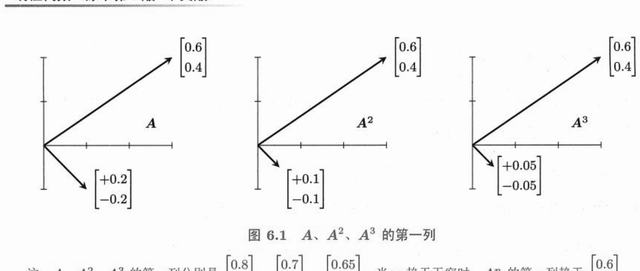
图 6-1 Eigshow：拖动单位向量 x，Ax 画出椭圆，共线时刻即特征方向。（原书 p.222）
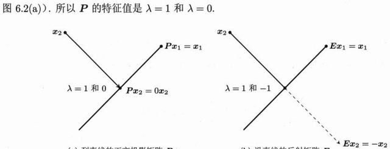
图 6-2 两个特征方向：x 与 Ax 共线时，Ax = λx。（原书 p.222）
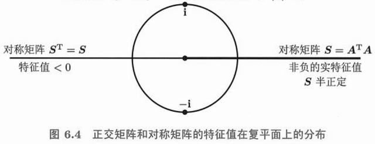
图 6-3 du/dt = Au 的相图：特征向量方向是轨迹的渐近线。（原书 p.256）
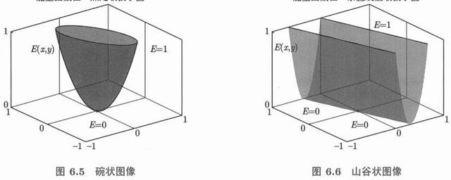
图 6-4 λ 的符号决定轨迹走向：全负收敛，有正发散。（原书 p.257）
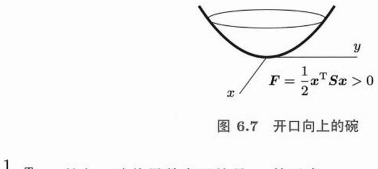
图 6-5 一正一负 → 鞍点：沿一个方向收敛，沿另一个方向发散。（原书 p.257）
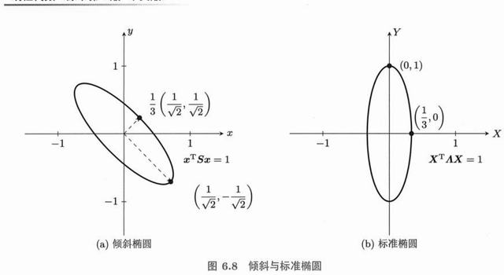
图 6-6 复特征值对应螺旋轨迹，实部决定增减、虚部决定旋转频率。（原书 p.260）
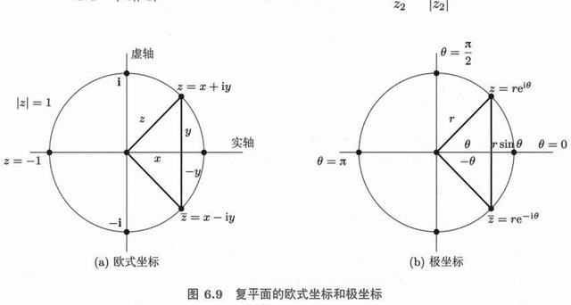
图 6-7 e^(At) 把初值沿特征方向演化：e^(λt) 的指数增长/衰减。（原书 p.268）
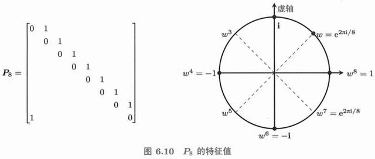
图 6-8 二次型的等值线：正定给椭圆，主轴方向即特征向量。（原书 p.271）
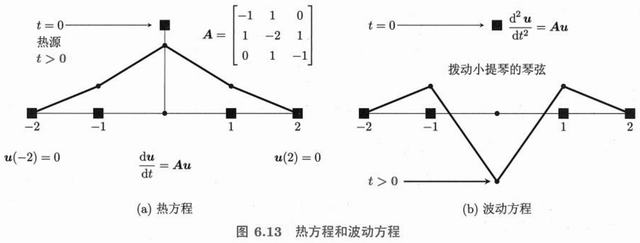
图 6-9 谱定理的几何：A 分解成沿正交方向的独立伸缩。（原书 p.286）
特征值分解只对可对角化的方阵 有效。SVD 把它推广到任意矩阵 ——m×n 也行、秩不足也行。代价是左右各用一组正交基。Strang 称 SVD 为「线性代数的终极分解」，因为它是数据压缩、推荐系统、PCA 的共同底座。
7.1 奇异值和奇异向量p.293 7.1.1 奇异值分解的几何意义p.294
任何矩阵都是「旋转 → 拉伸 → 旋转 」三步。奇异值就是拉伸的倍数。
A = U Σ Vᵀ
几何读法（从左到右作用）：
Vᵀ ：在输入空间旋转（把 v₁,…,vₙ 转到坐标轴）
Σ ：沿各坐标轴拉伸 σ₁, σ₂, …（其余方向压到 0）
U ：在输出空间旋转（把坐标轴转到 u₁,…,uₘ）
所以：单位圆 → 椭圆 ，半轴长 = σ₁, σ₂
即使 A 不是对称矩阵、不是方阵，这个图像依然成立
对比一下三种分解的分工：LU 讲「怎么算」，QR 讲「正交化」，SVD 讲「本质上有几个方向、各自多重要」。SVD 最贵（O(mn²)），但信息量最大。
· 拖 Ae₁ 的蓝点 = 改矩阵
a₁₁ 2.0
a₂₁ 1.0
读数
σ₁ 2.62
σ₂ 0.38
σ₁/σ₂（条件数） 6.85
det 1.00
蓝色虚线是原单位圆，红实线是变换后的椭圆，橙色是椭圆的两个主轴方向（= U 的列），灰色是输入端的 v₁、v₂。拖蓝色的 Ae₁ 落点 就是改矩阵第一列，椭圆立刻跟着变形；把它拖到与 Ae₂ 共线，椭圆就退化成一条线段 （σ₂ = 0，矩阵奇异）。椭圆越扁，矩阵越病态（条件数 = σ₁/σ₂）。
7.1.2 奇异值分解的完整型p.295
完整型（full SVD）把两侧的基都补全，使 U、V 都是完整的正交方阵。
A（m×n, 秩 r） = U（m×m）· Σ（m×n）· Vᵀ（n×n）
Σ 的形状：左上角 r×r 是对角（σ₁ ≥ σ₂ ≥ … ≥ σᵣ > 0），其余全 0
Σ = [ σ₁ 0 … 0 0 ] ← 前 r 行有值，后面全零行
[ 0 σ₂ … 0 0 ]
[ 0 0 … σᵣ 0 ]
[ 0 0 … 0 0 ]
U 的前 r 列 = 列空间的标准正交基
V 的前 r 列 = 行空间的标准正交基
U 的后 m−r 列 = 左零空间的基
V 的后 n−r 列 = 零空间的基
这个「补全」正是 SVD 比特征值分解强的地方：它同时给出了四个基本子空间的标准正交基 ，而且是唯一确定的（除了符号和重奇异值的旋转）。
7.1.3 奇异值分解的简化型p.296
实际计算和数据应用里都用简化型（reduced / economy SVD），只保留有用的部分。
简化型： A = Ur Σr Vr ᵀ
Ur ：m×r，Σr ：r×r，Vr ：n×r
展开成秩 1 之和（最常用的形式）：
A = σ₁u₁v₁ᵀ + σ₂u₂v₂ᵀ + … + σᵣuᵣvᵣᵀ
存储量对比（m = n = 1000, r = 50）：
完整矩阵 10⁶ 个数
简化 SVD 50×(1000+1000+1) ≈ 10⁵ 个数 → 压缩 10 倍
7.1.4 奇异值分解的证明p.296
证明的关键是：把 A 的问题转成 AᵀA 的问题 ，而 AᵀA 是对称半正定的，可以直接用谱定理。
① AᵀA 对称半正定 → 有正交特征向量 v₁,…,vₙ，特征值 λᵢ ≥ 0
令 σᵢ = √λᵢ，按降序排列
② 定义 uᵢ = Avᵢ / σᵢ （σᵢ > 0 时）
验证正交性： uᵢᵀuⱼ = (Avᵢ)ᵀ(Avⱼ)/(σᵢσⱼ) = vᵢᵀAᵀAvⱼ/(σᵢσⱼ)
= vᵢᵀ(λⱼvⱼ)/(σᵢσⱼ) = λⱼ(vᵢᵀvⱼ)/(σᵢσⱼ) = δᵢⱼ ✓
③ 于是 AV = UΣ，右乘 Vᵀ 得 A = UΣVᵀ ∎
关键恒等式： AᵀAvᵢ = σᵢ²vᵢ 和 AAᵀuᵢ = σᵢ²uᵢ
这个证明给了算法：算 AᵀA 的特征分解，就得到了 V 和 σ；再算 uᵢ = Avᵢ/σᵢ 得到 U 。不过实际实现不会真去算 AᵀA（会把条件数平方），而是用 Golub-Kahan 双对角化。
7.1.5 AB 和 BA：相同的非零特征值p.298
这条性质在 SVD 里特别有用，因为它把 m×n 和 n×m 两个不同尺寸的问题联系起来。
AB 与 BA 有相同的非零特征值
证明：若 ABx = λx（λ ≠ 0），则 B(ABx) = BA(Bx) = λ(Bx)
→ Bx 是 BA 的特征向量，特征值仍是 λ
（Bx ≠ 0，否则 λx = ABx = 0 矛盾）
推论：AAᵀ 与 AᵀA 有相同的非零特征值
→ 所以 σᵢ = √(AᵀA 的非零特征值) = √(AAᵀ 的非零特征值)
→ 无论从左边算还是右边算，奇异值都一样
7.1.6 2×2 矩阵的奇异向量p.299
手算 2×2 的 SVD 可以用一个漂亮的几何事实：v₁、v₂ 是 AᵀA 的特征向量，等价于它们把 A 的两列「拉成正交」 。
A = [a b] A 的两列是 (a,c) 与 (b,d)
[c d]
求 V：解 AᵀA 的特征问题
AᵀA = [a²+c² ab+cd] → 特征值 λ₁ ≥ λ₂ ≥ 0
[ab+cd b²+d²]
σ₁ = √λ₁, σ₂ = √λ₂
u₁ = Av₁/σ₁, u₂ = Av₂/σ₂
检验： Av₁ ⊥ Av₂ （两个方向被"掰"成正交）
且 |Av₁| = σ₁（长轴），|Av₂| = σ₂（短轴）
这个视角很直观：SVD 找的是「输入空间里哪两个垂直方向，经过 A 之后仍然垂直」 。一般方向经过 A 会变形（夹角改变），但这两个特殊方向保持垂直——它们就是「最不受扭曲的方向」。
7.1.7 第一个奇异向量 v₁p.299
v₁ 有一个变分刻画，这个刻画是「幂迭代」算法和 PCA 的理论基础。
v₁ = argmax ‖Av‖ subject to ‖v‖ = 1
即：在所有单位向量中，v₁ 是被 A 拉得最长 的那个方向
最长长度就是 σ₁
等价形式： v₁ 是 AᵀA 的最大特征值对应的特征向量
σ₁ = ‖Av₁‖ = √(AᵀA 的最大特征值)
同理： v₂ 是在与 v₁ 正交的平面里被拉得最长的方向，依此类推
这个「逐层求最大」的结构解释了为什么 SVD 天然适合做贪婪压缩 ：先抓最大的方向，再从残差里抓第二大的，直到够用为止。
7.1.8 计算特征值和奇异值p.300
实际计算与理论推导路径相反：先算 SVD，再用它算特征值 ，因为 SVD 更稳定。
从 SVD 到特征值：
A = UΣVᵀ → AᵀA = VΣ²Vᵀ → AᵀA 的特征值 = σᵢ²，特征向量 = vᵢ
对称矩阵 S 的特征值 = 它的奇异值（因为 S = QΛQᵀ，σᵢ = |λᵢ|）
从特征值到奇异值（不推荐）：
σᵢ = √(AᵀA 的特征值) ← 条件数被平方，精度损失一半
数值实践：
numpy.linalg.svd(A, full_matrices=False) → 简化型
numpy.linalg.eig / eigh → 特征分解（eigh 用于对称）
scipy.sparse.linalg.svds(A, k) → 只算前 k 个（大数据必备）
习题 7.1 原书 p.301 起 自测 2 题 · 点开看答案
A = [[3,0],[0,−2]] 的奇异值？
σ₁ 与 ‖A‖₂ 的关系？
1. 3 与 2（奇异值是非负的 √特征值(AᵀA)，所以 −2 变成 2）。
2. σ₁ = ‖A‖₂ = maxx≠0 ‖Ax‖/‖x‖，即最大拉伸倍数。
7.2 通过线性代数来做图像处理p.303 7.2.1 对角矩阵的奇异值p.304
对角矩阵是最简单的例子，用它可以把 SVD 的每个概念都看清楚。
D = diag(3, 1, 0)
σ = (3, 1, 0) 奇异值 = 对角元的绝对值（降序）
U = V = I 单位阵（方向本来就在坐标轴上）
rank = 2 非零奇异值个数
若 D = diag(−3, 1, 0)：
σ = (3, 1, 0) ← 奇异值永远非负
符号被吸收到 U 里（U 的第一列取 −e₁）
「奇异值非负」是它们与特征值的最大区别。特征值可以是负数（表示方向翻转），奇异值只表示「拉伸多少」 ——翻转被算进 U 或 V 的符号里了。
7.2.2 利用奇异值分解进行图像压缩p.305
一张灰度图就是一个矩阵。像素值 = 元素值。SVD 给出「分层」的描述，只留前面几层就能保留大部分信息。
图像 I（m×n） → I = σ₁u₁v₁ᵀ + σ₂u₂v₂ᵀ + …
取前 k 项： Iₖ = Σᵢ₌₁ᵏ σᵢuᵢvᵢᵀ
存储量： m×n → k(m + n)
例：512×512 灰度图，取 k = 30
原图 262,144 个数
压缩 30×1024 = 30,720 个数 → 8.5 倍
而视觉上几乎看不出差别（因为 σ 衰减很快）
误差：‖I − Iₖ‖ = σₖ₊₁（谱范数意义下的最优）
为什么效果好？因为自然图像的像素高度相关，信息集中在少数几个方向 。σ 序列衰减得越快，可压缩性越强。而随机噪声的 σ 分布平坦——这就是「噪声不可压缩」的线性代数解释。
· 点格子涂改图案 · 拖 k 或点 σ 柱看重建
保留秩 k 1
重置图案 随机图案
读数
原图秩 3
保留能量 59.9%
存储比例 31%
σ 序列 3.63, 2.51, 1.58
左图是原图（8×8 的字母 A）——可以直接点格子涂改 ，右边立刻重算 SVD。k = 1 时只剩最粗的那一笔骨架（一条横带 + 一条竖带）；k 加到原图秩 （右侧读数）就完全复原。涂改、随机重画后秩会变，滑杆上限也跟着变。
习题 7.2 原书 p.306 起 自测 2 题 · 点开看答案
低秩近似为什么「最优」？
用低秩近似压缩 m×n 图像，要存多少个数？
1. Eckart–Young 定理：秩 k 矩阵中，Ak = Σσᵢuᵢvᵢᵀ 使 ‖A − Ak ‖ 最小，误差 = σk+1 （谱范数）。
2. k(m + n + 1) 个（k 个奇异值 + k 个左向量 + k 个右向量），远小于 mn。
7.3 主成分分析p.307 7.3.1 埃克哈特-扬定理p.308
这是「为什么低秩近似是最好的」的严格回答，也是 SVD 在数据科学中地位的理论基石。
Eckart-Young 定理：
在所有秩 ≤ k 的矩阵 B 中，Aₖ = Σᵢ₌₁ᵏ σᵢuᵢvᵢᵀ 是最优 近似
即： ‖A − Aₖ‖ ≤ ‖A − B‖ 对任意 rank(B) ≤ k 成立
两种范数都成立：
· 谱范数（最大奇异值）：误差 = σₖ₊₁
· Frobenius 范数（全体平方和）：误差 = √(σₖ₊₁² + … + σᵣ²)
换句话说：SVD 的前 k 项不是"一种"选择，而是唯一的正确答案
7.3.2 通过奇异值分解进行主成分分析p.309
PCA 就是「对中心化后的数据矩阵做 SVD」。没有别的秘密。
数据 X（m 个样本 × n 个特征）
① 中心化 ：每列减去均值 → X̃
② 做 SVD： X̃ = UΣVᵀ
③ 主成分方向 = V 的列 （前 k 列就是前 k 个主成分）
④ 主成分得分 = UΣ （把数据投影到这些方向上）
⑤ 解释方差比例 = σᵢ² / Σσⱼ²
注意：V 也是 X̃ᵀX̃（协方差矩阵 × m）的特征向量
→ 所以 SVD 与「协方差矩阵的特征分解」是同一件事
7.3.3 主成分分析背后的几何意义p.309
PCA 要做的事，用一句话说：找到数据 cloud 最“长”的方向，然后沿这个方向压扁它 。
一堆二维散点，形状像一根斜着的香肠：
主成分 1（PC1）：香肠的长轴 → 数据变化最大的方向
主成分 2（PC2）：垂直于 PC1 的短轴 → 剩下的变化
降维到 1 维 = 把每个点投影到 PC1 上
损失的信息 = PC2 方向的方差
为什么这是"最优"降维？因为投影后保留的方差最大
（等价于投影误差最小 —— 两个目标是同一个）
7.3.4 埃克哈特-扬定理的几何意义p.310
把定理翻译成几何语言，就知道为什么 PCA 一定这么选轴。
‖A − Aₖ‖_F² = σₖ₊₁² + … + σᵣ²
这等于「被丢掉的各方向上的能量总和」
要让误差最小 → 丢掉的必须是最小的 σ
→ 保留最大的 k 个 σ
→ 保留对应的 k 个方向
几何：把数据 cloud 投影到「前 k 个主轴张成的子空间」
残差 = 各点在其余轴上的投影长度平方和
Eckart-Young 说：没有任何别的 k 维子空间能做得更好
7.3.5 主成分分析背后的统计学原理p.310
从统计角度看，PCA 在找「方差最大的方向」，因为方差大 = 信息多 。
协方差矩阵： C = X̃ᵀX̃ / (m−1) （n×n 对称半正定）
C 的对角元 = 各特征的方差
C 的非对角元 = 特征之间的协方差
PCA 的目标：找单位向量 w 使 Var(wᵀx) = wᵀCw 最大
解：w = C 的最大特征向量 = V 的第一列
最大值 = 最大特征值 = σ₁²/(m−1)
去相关： 变换后新坐标的协方差矩阵是对角的
→ 各主成分之间零相关 ，信息完全不重叠
「去相关」是 PCA 最有用的性质之一：原始特征往往高度相关（比如身高和体重），PCA 把它们换成一堆互不相关的方向，后续模型（回归、聚类）就不必处理共线性。
7.3.6 主成分分析背后的线性代数p.311
最后把三个视角统一：统计的「方差最大」= 代数的「特征值最大」= 几何的「投影误差最小」 。
三条路线，同一个答案：
统计： max Var(wᵀx) → w = C 的最大特征向量
代数： max ‖X̃w‖, ‖w‖=1 → w = X̃ᵀX̃ 的最大特征向量
几何： min 投影误差 → w = 最佳拟合直线方向
三者都归结为：求 X̃ᵀX̃（或 X̃X̃ᵀ）的主特征向量
而这正是 X̃ 的第一列奇异向量 v₁
实用要点：
· 一定要中心化（否则 PC1 会指向均值方向，毫无意义）
· 通常还要标准化（各特征量纲不同时，否则大方差的特征垄断）
· k 的选择：看累计解释方差 ≥ 85~95%，或看 σ 的"肘部"
· 拖点改变分布
读数
PC1 方向 (0.95, 0.31)
σ₁², σ₂² 3.21, 0.42
PC1 解释方差 88%
建议保留维数 1
细长 中等 圆胖
蓝点是数据，橙色箭头是 PC1（最长方向），灰色是 PC2。直接拖那三个橙点 ——拖成一条斜线，PC1 会立刻转过去、解释方差接近 100%；拖成散乱一片，两轴就平分秋色。数据越细长，PC1 的解释方差越高，降维损失越小。
简答 为什么 SVD 的图像压缩“丢掉的项”恰好是影响最小的项？
因为 A = Σσᵢuᵢvᵢᵀ 中的每一项贡献的「能量」正好是 σᵢ²（Frobenius 范数平方为 Σσᵢ²）。σ 按降序排列，所以后面的项贡献最小。
丢掉第 k+1 到 r 项，误差的平方和 = σₖ₊₁² + … + σᵣ²，这是所有「丢 r−k 项」方案里最小的。Eckart-Young 定理保证：不存在别的秩 k 矩阵比它更接近原矩阵 。
所以「按 σ 大小截断」不是一种启发式，而是数学上的唯一最优解。
判断 若 A 的所有奇异值都相等且为正，则 A 是某个常数乘正交矩阵。
正确。 若 σ₁ = … = σᵣ = σ，则 Σ = σI（在 r 维上），于是 A = U(σI)Vᵀ = σ(UVᵀ) ，而 UVᵀ 是正交矩阵（两个正交矩阵的乘积仍正交）。
几何上：这种 A 的作用是「旋转 + 均匀放大」，把球变成球，方向不变形，所以条件数 = 1，是最良态的矩阵。
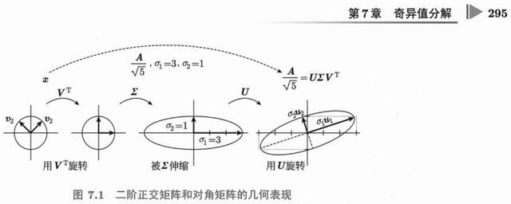
图 7-1 SVD 的几何图像：Vᵀ 旋转、Σ 拉伸、U 再旋转，单位圆变成椭圆。（原书 p.295）
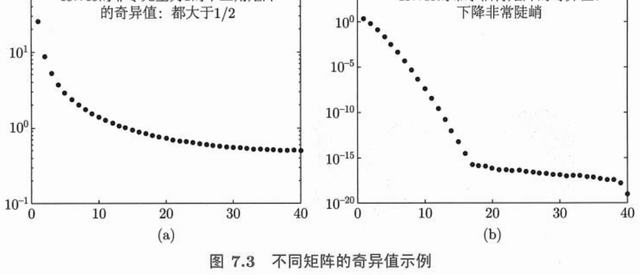
图 7-2 低秩近似做图像压缩：保留前若干个奇异值，视觉质量与压缩率同时可调。（原书 p.305）
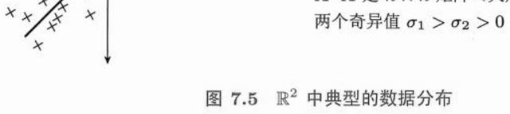
图 7-3 PCA 的几何：数据云最长方向就是第一主成分，投影到这个方向保留最多方差。（原书 p.309）
习题 7.3 原书 p.312 起 自测 2 题 · 点开看答案
PCA 第一步做什么？和 SVD 什么关系？
第一主成分的方向对应什么？
1. 把数据中心化（减均值），再对数据矩阵 A 做 SVD；右奇异向量就是主方向，奇异值 = √(N·特征值)。
2. 协方差矩阵 V = AAᵀ/N 的最大特征值对应的特征向量（数据投影后方差最大的方向）。
矩阵是线性映射的坐标表示 。同一座山，从不同角度看形状不同，但山没变——这就是「同一个变换在不同基下的矩阵不同」。这一章讲清楚「换基」这件事，也就讲清楚了相似矩阵、若尔当形、傅里叶展开、勒让德多项式为什么是同一个故事。
8.1 线性映射的概念p.313 8.1.1 直线到直线，三角形到三角形p.315
线性映射的两条要求，几何上就是「网格线仍然平行等距、原点不动」。
线性映射 T 的定义：
① T(u + v) = T(u) + T(v) （保加法）
② T(cv) = cT(v) （保数乘）
两条合起来： T(c₁v₁ + c₂v₂) = c₁T(v₁) + c₂T(v₂)
几何后果：
· 直线 → 直线（不会被弯成曲线）
· 平行四边形 → 平行四边形
· 原点 → 原点（必须！所以平移不是线性的 ）
· 网格保持均匀（格距可大可小，但均匀）
「原点不动」这一条经常被忽略。T(x) = x + b 不是线性的（除非 b = 0），它叫仿射映射 。图形学里为了把平移也写成矩阵，才引入齐次坐标——多一维让平移变成线性。
8.1.2 微积分中的线性映射p.316
微积分里到处是线性映射，只是名字不叫「矩阵」。
求导 ： D(f) = f′
D(f + g) = f′ + g′ ✓
D(cf) = cf′ ✓
→ D 是函数空间上的线性映射！
积分 ： I(f) = ∫₀¹ f(t)dt 也是线性的
求值 ： E(f) = f(0) 也是线性的
矩阵形式 ：多项式空间 P₂（基 1, t, t²）上
D(1) = 0, D(t) = 1, D(t²) = 2t
→ D 的矩阵 = [0 1 0]
[0 0 2]
[0 0 0] （把 (a,b,c) 映到 (b, 2c, 0)）
这个观察极重要：微分方程就是「在线性映射上求原像」 。求解 y′ = f 就是解 Dy = f ，与解 Ax = b 结构完全相同。这也解释了为什么微分方程的通解总带一个常数——那个常数在 D 的零空间里。
8.1.3 映射的例子（多数是线性的）p.317
映射 线性？ 说明 旋转 θ 角 线性 矩阵 [[cos,−sin],[sin,cos]] 投影到 x 轴 线性 矩阵 [[1,0],[0,0]] 反射关于 y 轴 线性 矩阵 [[−1,0],[0,1]] 平移 (a,b) 非线性 原点被移走；需齐次坐标才线性 x → x² 非线性 (x+y)² ≠ x² + y² ‖x‖（长度） 非线性 ‖2x‖ = 2‖x‖ 成立，但 ‖x+y‖ ≤ ‖x‖+‖y‖ 求导 / 积分 线性 函数空间上的线性映射 max(x, 0)（ReLU） 非线性 深度网络靠它获得表达能力
最后一行值得注意：ReLU 是非线性的，这正是神经网络能拟合任意函数的原因 。如果所有层都是线性的，叠多少层都等价于一个矩阵（第 10.1 节会展开这一点）。
· 拖滑块，或直接拖蓝/橙两个落点改矩阵
a₁₁ 1.4
a₁₂ 0.7
a₂₁ 0.0
读数
第1列（e₁ 落点） (1.40, 0.00)
第2列（e₂ 落点） (0.70, 1.00)
det（面积倍率） 1.40
类型 可逆（保维）
网格线依然平行等距，原点不动——这就是线性。矩阵的两列就是 e₁、e₂ 被送到的地方 ：直接拖动图上那两个端点（蓝 = e₁ 的落点，橙 = e₂ 的落点），映射就跟着变；把两点拖成一条直线，det 归零、平面被压扁。
习题 8.1 原书 p.319 起 自测 2 题 · 点开看答案
T(x,y) = (x + y, x − y) 是线性映射吗？矩阵是什么？
T(x) = x + c（c ≠ 0）是线性映射吗？
1. 是。T 是线性的（可写成矩阵乘），矩阵 [[1,1],[1,−1]]。
2. 不是。线性映射必须把 0 映到 0，而 T(0) = c。它是仿射映射（平移）。
8.2 线性映射的矩阵p.322 8.2.1 基变换：矩阵 Bp.323
同一个变换，换一组基来写，矩阵就变了。新矩阵由「相似变换」给出。
设 M 的列是新基 （用旧坐标表示）
旧基下的矩阵 A → 新基下的矩阵 B = M⁻¹ A M
为什么？ 旧坐标 x ↔ 新坐标 y，关系是 x = My
在新坐标下做变换： y → M⁻¹ A M y
所以 B = M⁻¹AM 就是「同一个变换在新语言里的写法」
重要不变量：
· 特征值完全不变（相似矩阵）
· 迹、行列式、秩都不变
· 特征向量会变（坐标变了，但"方向"本身没变）
「不变的是什么」是这个概念的核心。特征值是变换的内在属性（拉伸倍率），与用什么坐标描述无关；特征向量的坐标 会变，但它作为几何对象没变。选基的目的就是让矩阵尽可能简单 ——最好的结果是变成对角阵。
8.2.2 构造线性映射 T 的矩阵p.324
算法只有三步，但顺序容易搞错。
要求：T 在基 v₁,…,vₙ（定义域）与 w₁,…,wₘ（值域）下的矩阵 A
① 把每个 vⱼ 送入 T，得到 T(vⱼ)
② 把 T(vⱼ) 用值域的基 w 表示： T(vⱼ) = a₁ⱼw₁ + a₂ⱼw₂ + …
③ 这些系数 aᵢⱼ 就是 A 的第 j 列
特别地，若两侧都用标准基：
A 的第 j 列 = T(eⱼ)
—— 这就是为什么「矩阵的列 = 基向量的像」
例： T 把 (1,1)→(2,0)，把 (1,−1)→(0,2)
A = [2 0] [1 1] ⁻¹
[0 2] [1 −1]
8.2.3 矩阵乘积 AB 与映射复合 TS 相对应p.326
矩阵乘法之所以那样定义，就是因为要让它对应「复合」。
若 S: U → V 的矩阵是 B，T: V → W 的矩阵是 A
则 复合 T∘S: U → W 的矩阵是 AB
顺序验证： (T∘S)(u) = T(S(u)) = T(Bu) = A(Bu) = (AB)u ✓
这就解释了「为什么乘法不交换」：
T∘S ≠ S∘T（先旋转再拉伸 ≠ 先拉伸再旋转）
也解释了「为什么反序求逆」：
(T∘S)⁻¹ = S⁻¹∘T⁻¹ → (AB)⁻¹ = B⁻¹A⁻¹
8.2.4 选择最好的基p.326
「最好」有两个层次：能不能对角化 ，以及能不能选成正交基 。
层次一：特征向量基
只要有 n 个线性无关的特征向量，就能取 M = S
→ B = Λ（对角），最理想
层次二：正交基
要求 M 是正交矩阵（M⁻¹ = Mᵀ）
只有对称矩阵 （或正规矩阵）才能做到
→ B = QᵀAQ = Λ，且 Q 的列标准正交
退一步：若尔当形
特征向量不够时，B 只能做到「几乎对角」（见 8.3.1）
再退一步：Schur 上三角
任何方阵都能正交相似于上三角： A = QTQᵀ
· 拖 m₁ 的紫点转基
基旋转角 0°
读数
旧基矩阵 A [1.3 0.4; 0.4 1.0]
新基矩阵 B …
特征值 1.59, 0.71
迹 / 行列式 2.30 / 1.14
旋转基时，B 的四个元素一直在变，但特征值、迹、行列式纹丝不动 ——它们属于变换本身，不属于坐标。把角度旋到 0° 附近时，若 A 对称，B 会接近对角。
习题 8.2 原书 p.328 起 自测 2 题 · 点开看答案
在基 b₁ = (1,1)、b₂ = (1,0) 下，T(x,y) = (x+y, x−y) 的矩阵？
矩阵的第 j 列代表什么？
1. T(b₁) = (2,0) = 2b₂ → 第 1 列 (0,2)；T(b₂) = (1,1) = 1b₁ → 第 2 列 (1,0)。矩阵 [[0,1],[2,0]]。
2. 第 j 个基向量在映射下的像，用同一组基表示的坐标。
8.3 寻找好的基p.331 8.3.1 若尔当标准形p.333
不可对角化时能做到的最好形式。它把「重特征值」和「缺特征向量」这两件事都编码进去了。
任何方阵 A 都相似于若尔当形 J：
A = M J M⁻¹
J 由若干个若尔当块组成：
Jₖ(λ) = [λ 1 0 …] ← 对角 λ，上方全是 1
[0 λ 1 …]
[0 0 λ …]
[… λ]
块的数量 = 该特征值的独立特征向量个数
块的大小 = 该特征值的「代数重数」的分配
例： [1 1; 0 1] 是一个 2×2 块，λ=1，只有 1 个特征向量
若尔当形在理论上完美（任何矩阵都有），但在数值上极不稳定 ——微小的扰动会把一个大块拆成两个小块。所以实际计算从不用它，而是用 Schur 分解 A = QTQᵀ （Q 正交，T 上三角）。
8.3.2 函数空间的基p.335
函数空间是无限维的向量空间，选基就是选「用什么函数来展开」。
函数 f(t) ≈ c₁φ₁(t) + c₂φ₂(t) + … + cₙφₙ(t)
不同的基对应不同的展开：
幂基 {1, t, t², …} → 泰勒展开
三角基 {1, cos nt, sin nt} → 傅里叶级数
正交多项式 {Pₙ(t)} → 勒让德 / 切比雪夫展开
小波基 → 小波变换（JPEG 2000）
选基的标准：正交 + 计算方便 + 逼近效率高
8.3.3 函数空间的正交集p.336
把「内积」从向量搬到函数上，正交的概念就自动成立。
函数内积： ⟨f, g⟩ = ∫ₐᵇ f(t)g(t) dt （有时带权 w(t)）
正交： ⟨f, g⟩ = 0
范数： ‖f‖ = √⟨f, f⟩
三角函数的正交性（傅里叶的基石）：
∫₀^2π sin(mt)sin(nt) dt = 0 (m ≠ n)
∫₀^2π cos(mt)cos(nt) dt = 0 (m ≠ n)
∫₀^2π sin(mt)cos(nt) dt = 0 （任意 m, n）
→ 系数可直接算： cₙ = ⟨f, φₙ⟩ / ⟨φₙ, φₙ⟩
「系数直接算」这一点是正交基的全部价值。非正交基要解一个线性方程组求系数；正交基只需做内积 ——这就是第 4.4.1 节「用 Q 代替 A」在函数空间的版本。
8.3.4 勒让德多项式和切比雪夫多项式p.336
在区间 [−1, 1] 上把幂基正交化，就得到勒让德多项式；换一个权函数，就得到切比雪夫。
勒让德多项式 （权 w(t) = 1，区间 [−1,1]）
P₀ = 1
P₁ = t
P₂ = (3t² − 1)/2
P₃ = (5t³ − 3t)/2
满足 ∫₋₁¹ Pₘ(t)Pₙ(t) dt = 0 (m ≠ n)
递推： (n+1)Pₙ₊₁ = (2n+1)tPₙ − nPₙ₋₁
切比雪夫多项式 （权 w(t) = 1/√(1−t²)）
T₀ = 1, T₁ = t, T₂ = 2t² − 1, T₃ = 4t³ − 3t
性质： Tₙ(cos θ) = cos(nθ) ← 这就解释了它为什么"最平"
用途：数值积分 （高斯求积的节点是勒让德零点）、
函数逼近 （切比雪夫逼近误差最小，避免龙格现象）
为什么用切比雪夫节点做插值不会出现「两端剧烈震荡」（龙格现象）？因为它的零点在区间两端分布更密——正交多项式的分布本身就编码了「哪里需要更密的采样」 。
简答 为什么「矩阵的列 = 基向量变换后的像」？
因为任意向量 x 都能写成基的组合 x = x₁e₁ + x₂e₂ + … 。由线性性：
Ax = x₁(Ae₁) + x₂(Ae₂) + …
也就是说，Ax 就是「A 的各列按 x 的分量加权求和」 。所以 Aeⱼ（第 j 列）必然是 eⱼ 的像，而任意向量的像由这些列唯一决定。
这就是第 1 章「Ax 是 A 的列的组合」的重新表述——同一个事实，两种说法。
判断 若 A 与 B 相似，则它们有相同的特征向量。
错误。 相似矩阵的特征值 相同，但特征向量一般不同。
若 B = M⁻¹AM 且 Ax = λx ，则 B(M⁻¹x) = λ(M⁻¹x) 。所以 B 的特征向量是 M⁻¹x ，不是 x——它们是同一个几何方向在不同坐标系下的两个坐标表示。
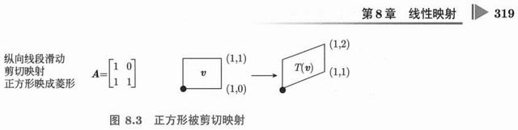
图 8-1 线性映射的矩阵依赖于基的选择：换基相当于做一次相似变换。（原书 p.319）
习题 8.3 原书 p.337 起 自测 2 题 · 点开看答案
B = M⁻¹AM 中哪些量不变？
什么样的基能把 A 变成对角阵？
1. 特征值、迹、行列式、秩、特征多项式全部不变（相似不变量）。
2. 特征向量基（A 可对角化时）：M 的列就是 n 个线性无关的特征向量。
深度学习训练的本质，是在一个高维曲面上找最低点 。而这个曲面的局部形状永远是二次型——所以梯度下降的收敛速度、之字形震荡、动量为什么有效、学习率的上限，全部由特征值 决定。这一章是线性代数与机器学习握手的地方。
9.1 多变量函数的最小化问题p.339 9.1.1 梯度下降 = 最速下降p.341
梯度指向「上升最快」的方向，所以沿负梯度走就是「下降最快」。
迭代公式： xk+1 = xk − α ∇F(xk )
α：学习率（步长），最关键的参数
∇F：梯度向量，第 i 个分量是 ∂F/∂xᵢ
对二次函数 F(x) = ½xᵀAx − bᵀx：
∇F = Ax − b
xk+1 = xk − α(Axk − b)
误差 eₖ = xₖ − x* 的演化：
ek+1 = (I − αA)eₖ → 收敛速度由 |1 − αλᵢ| 决定
收敛条件： 0 < α < 2/λmax
这个式子是整章的钥匙：误差在特征向量方向上独立衰减，衰减因子是 |1 − αλᵢ| 。λ 大的方向收敛快，λ 小的方向收敛慢——这就解释了为什么病态问题（条件数大）训得慢。
9.1.2 n = 1 时一元函数 f(x) 的一阶导数p.341
从一维开始最清楚：梯度下降就是「沿斜率反方向走一步」。
一维： xk+1 = xk − α f′(xk )
例： f(x) = ½ax² → f′ = ax
xk+1 = (1 − αa)xk
→ xk = (1 − αa)ᵏ x₀
收敛条件： |1 − αa| < 1 → 0 < α < 2/a
最优步长： α = 1/a （一步到位，误差归零）
α 太小 → 慢慢爬；α ≥ 2/a → 震荡发散
9.1.3 梯度向量 ∇F 的几何意义p.344
梯度有三重身份，每一重都有实际用途。
∇F = (∂F/∂x₁, ∂F/∂x₂, …, ∂F/∂xₙ)
① 最速上升方向 ：沿 ∇F 走，F 增加最快
② 垂直于等高线 ：等值线 F = c 的切向与 ∇F 正交
③ 一阶近似 ： F(x + Δ) ≈ F(x) + ∇F·Δ
所以「负梯度」= 局部最陡的下降方向
但注意：最速下降 ≠ 最快到达最小值
（走最陡的路，常常绕远——见 9.1.4）
9.1.4 一个重要的“之字形”示例p.345
这是梯度下降最著名的病：在狭长的山谷里来回横跳。
F(x,y) = ½(λ₁x² + λ₂y²)， 取 λ₁ = 100, λ₂ = 1
等高线是极扁的椭圆（长轴沿 y）
梯度下降的轨迹：
· x 方向 λ 大 → 很快收敛
· y 方向 λ 小 → 极慢
· 每一步几乎垂直地穿过山谷 → 之字形（zigzag）
收敛速度： 每步误差缩减 ≈ ((κ−1)/(κ+1))²
κ = λ₁/λ₂ = 100 → 缩减因子 ≈ 0.96 → 几乎不动
需要约 κ · log(1/ε) 步 —— κ 越大越绝望
解决方案有三个，分别对应三种不同的思路：① 预处理 （把问题变圆：左乘 A⁻¹）；② 动量 （用历史梯度平滑掉横跳）；③ 共轭梯度 （每步选与历史正交的方向，n 步精确收敛）。
· 拖左上黑点换起点 · 拖 α 与条件数
学习率 α 0.050
条件数 κ 8
读数
λ₁, λ₂ 1.00, 0.13
α 上限 2/λ₁ 2.00
迭代 30 步后 —
状态 收敛
小步
中步
大步（震荡）
等高线越扁（κ 越大），轨迹越横向来回跳。把 α 调得接近 2/λ₁ 会剧烈震荡甚至发散——这就是“学习率太大会炸”的数学原因。
9.1.5 动量与重球的路径p.346
动量（momentum）用一个「速度」变量累积历史梯度，从而抵消横向震荡。
普通梯度下降： xk+1 = xk − α∇F
动量法（重球法）：
vk+1 = β vk − α∇F(xk ) ← 累积速度
xk+1 = xk + vk+1
β ≈ 0.9 是常用值
为什么有效？
· 横向（震荡方向）：梯度正负交替 → 累积时相互抵消
· 纵向（下降方向）：梯度方向一致 → 累积加速
→ 等效于把条件数从 κ 降到 √κ
收敛速度提升： κ → √κ（例如 100 → 10）
物理解释：把优化过程想成一颗小球在曲面上滚 。小球有惯性，在窄谷里不会来回乱撞，而是顺着谷底加速下滑。这也解释了为什么动量版对学习率不那么敏感。
9.1.6 二次模型p.347
任何函数在极小点附近都可以用二次型近似，所以「二次型的收敛分析」就是通用分析。
F(x) ≈ F(x*) + ½(x−x*)ᵀH(x−x*) （H = Hessian）
H 的特征值 = 各个方向的曲率
· 全正 → 局部极小
· 全负 → 局部极大
· 有正有负 → 鞍点
条件数 κ = λmax /λmin 决定优化难度
κ = 1（圆碗）→ 一步到位
κ 很大（峡谷）→ 极慢
深度学习的实际情况：Hessian 有大量接近 0 的特征值
（过参数化 → 平坦方向极多），所以 SGD 反而比二阶方法更实用
习题 9.1 原书 p.348 起 自测 2 题 · 点开看答案
F(x) = ½xᵀAx − bᵀx，A = [[2,0],[0,8]]，b = (2,8)：最优点在哪？
二次型上梯度下降的步长范围？
1. 解 Ax = b：(2x₁, 8x₂) = (2,8) → x* = (1,1)。
2. 0 < α < 2/λmax ；α = 1/λ 时在特征方向上一步到底。
9.2 反向传播和随机梯度下降p.349 9.2.1 多变量链式法则p.350
反向传播只是链式法则的高效组织方式，数学上没有任何新东西。
若 z = f(y)，y = g(x)：
dz/dx = (dz/dy) · (dy/dx)
多变量情形（y 是向量）：
∂z/∂xᵢ = Σⱼ (∂z/∂yⱼ)(∂yⱼ/∂xᵢ)
矩阵形式： ∇ₓz = Jᵀ ∇ᵧz （J 是 y 对 x 的雅可比矩阵）
关键点：从后往前算 ，因为 ∂z/∂y 只需算一次，可复用
9.2.2 随机梯度下降p.350
数据量大时，用一小批样本来估计梯度，代价从 O(N) 降到 O(batch)。
全梯度： ∇F = (1/N) Σᵢ ∇fᵢ ← 每步要看全部 N 个样本
SGD： ∇F ≈ (1/B) Σi∈batch ∇fᵢ （B ≪ N）
性质：
· 无偏估计：E[∇F_SGD] = ∇F
· 有噪声：方差 ∝ 1/B
· 噪声反而有好处：能跳出尖锐的局部极小，倾向找到平坦 的解
学习率调度： αₖ = α₀/(1 + k·decay) 或 余弦退火
9.2.3 普通最小二乘的 SGDp.351
最小二乘是理解 SGD 最好的例子，因为梯度有闭式。
F(x) = ½‖Ax − b‖² = ½ Σᵢ (aᵢᵀx − bᵢ)²
全梯度： ∇F = Aᵀ(Ax − b)
第 i 个样本的梯度： ∇fᵢ = aᵢ(aᵢᵀx − bᵢ) ← 一个秩 1 更新
SGD 更新： x ← x − α aᵢ(aᵢᵀx − bᵢ)
这就是最小均方（LMS）算法 ，也是感知机、在线学习的原型
每步只需 O(n) 而非 O(mn)
9.2.4 反向传播的核心思想p.351
反向传播的精髓是「误差信号反向流动，权重梯度 = 输入 × 误差 」。这个模式在每一层都一样。
前向： a(l) = σ(W(l) a(l−1) + b(l) )
反向： 记 δ(l) = ∂L/∂z(l) （第 l 层的误差信号）
δ(L) = ∇a L ⊙ σ′(z(L) ) ← 输出层
δ(l) = (W(l+1)ᵀ δ(l+1) ) ⊙ σ′(z(l) ) ← 反传
梯度： ∂L/∂W(l) = δ(l) a(l−1)ᵀ ← 秩 1 外积！
∂L/∂b(l) = δ(l)
注意 δ 的反传用的是 W ᵀ ——矩阵转置在这里出现，正是「反向」的含义
「梯度 = 误差 × 输入」是一个秩 1 矩阵 ，这解释了为什么每层的权重更新都是低秩的。另外，反传公式里出现 Wᵀ 而不是 W⁻¹ ，这正是反向传播高效的原因：不需要求逆，只需转置 。
9.2.5 Keras 与 TensorFlow 中的反向传播p.353
框架做的事就是「自动微分」：记录前向计算图，反向按链式法则走一遍。
TensorFlow / PyTorch 的做法：
① 前向时记录每个操作的计算图 （记录输入、输出、算子）
② 反向时从 loss 出发，按图逆序调用每个算子的 backward()
③ 每个 backward() 只需知道局部导数，自动乘起来
Keras 的 fit() 内部：
for each batch:
y_pred = model(x) # 前向
loss = loss_fn(y, y_pred)
grads = tape.gradient(loss, model.trainable_variables) # 反传
optimizer.apply_gradients(zip(grads, weights))
关键：不构造雅可比矩阵 ，只做「向量 × 雅可比」的乘法（O(n) 而非 O(n²)）
9.2.6 Av + b 的导数p.353
这是深度学习里最基础的一条导数公式，必须记牢。
y = Av + b
∂y/∂v = A （对输入的雅可比就是权重矩阵本身）
∂y/∂A = ? （对权重的导数）
∂y/∂b = I
若 L 是标量损失，则：
∂L/∂v = Aᵀ ∂L/∂y ← 反传的公式
∂L/∂A = (∂L/∂y) vᵀ ← 秩 1 外积
∂L/∂b = ∂L/∂y
这就是「全连接层」的全部反向传播
9.2.7 隐藏层的偏导数p.354
多层堆叠时，误差信号逐层反传，每层乘一次权重转置和一个激活导数。
两层网络： x → W₁ → σ → W₂ → L
∂L/∂W₂ = δ₂ a₁ᵀ, δ₂ = ∇L ⊙ σ′(z₂)
δ₁ = W₂ᵀδ₂ ⊙ σ′(z₁)
∂L/∂W₁ = δ₁ xᵀ
观察：
· 每反传一层，就乘一次 Wᵀ
· 若 W 的奇异值都 < 1 → δ 逐层变小 → 梯度消失
· 若都 > 1 → 梯度爆炸
这就是为什么需要：
· 合理初始化（Xavier / He，让奇异值 ≈ 1）
· BatchNorm / LayerNorm（归一化每层输入）
· 残差连接（给梯度一条"高速公路"）
9.2.8 偏导数 ∂w/∂A₁ 的细节p.354
把「链式法则的矩阵形式」写细，能看清为什么反传的代价与层数成线性。
设 w = f(A₁x)，A₁ 是矩阵参数
∂w/∂A₁ 是一个三阶张量（形状 n×m×m）
但实际从不需要显式构造它！我们只需要：
(∂L/∂A₁)ᵢⱼ = (∂L/∂w)ᵀ (∂w/∂A₁ᵢⱼ)
对 w = A₁x：
w = A₁x → ∂w/∂A₁ᵢⱼ = eᵢxⱼ
→ ∂L/∂A₁ᵢⱼ = (∂L/∂w)ᵢ xⱼ
→ ∂L/∂A₁ = (∂L/∂w) xᵀ （又是秩 1 外积）
成本：O(nm)，与「前向一次」同量级
→ 所以 反传的代价 ≈ 前向的 2 倍 ，与网络深度无关
这个「不构造张量、只算张量-向量乘积」的技巧叫 vector-Jacobian product（VJP） ，是自动微分高效的全部秘密。
习题 9.2 原书 p.355 起 自测 2 题 · 点开看答案
反向传播的核心运算是什么？
mini-batch 的线代意义？
1. 链式法则 + 逐层乘雅可比矩阵的转置：δk = (Wk+1 ᵀδk+1 ) ⊙ R′(zk )，梯度为 δk vk−1 ᵀ。
2. 用 B 个样本的梯度平均代替全体：gB = (1/B)Σ∇fi ，是真实梯度的无偏估计，方差按 1/B 下降。
9.3 约束条件、拉格朗日乘子与最小范数p.356 9.3.1 拉格朗日乘子法——成本函数的偏导数p.357
带等式约束的优化，靠「把约束吸收进目标函数」来解。
原问题： min f(x) subject to g(x) = 0
拉格朗日函数： L(x, λ) = f(x) + λ g(x)
一阶条件（对 x 和 λ 分别求偏导等于 0）：
∂L/∂x = ∇f + λ∇g = 0 ← 梯度共线！
∂L/∂λ = g(x) = 0 ← 约束必须满足
几何解释：
在最优点，f 的等高线与约束曲线相切
→ 两者的法向量（∇f 与 ∇g）平行
→ ∇f = −λ∇g
9.3.2 极大值的极小值 = 极小值的极大值p.359
这是对偶性的核心，也是「最小-最大」问题的来源。
原问题（primal）： minx maxλ≥0 L(x, λ)
对偶问题（dual）： maxλ≥0 minx L(x, λ)
弱对偶： dual ≤ primal （永远成立）
强对偶： dual = primal （凸问题 + 约束品性成立时）
鞍点： 最优点 (x*, λ*) 是 L 的鞍点
对 x 是最小，对 λ 是最大
线性代数的例子（最小范数解）：
min ‖x‖² s.t. Ax = b
→ L = ‖x‖² + λᵀ(Ax − b)
→ ∇ₓL = 2x + Aᵀλ = 0 → x = −½Aᵀλ
→ 代回约束： −½AAᵀλ = b → x = Aᵀ(AAᵀ)⁻¹b ← 就是 A⁺b！
最后这一步很值得玩味：「最小范数解」的闭式公式 Aᵀ(AAᵀ)⁻¹b 正是从拉格朗日乘子法推出来的 ，而它恰好等于满行秩情形的广义逆。第 4 章的 A⁺ 在这里得到了优化视角的解释。
· 拖约束圆半径
约束半径 1.5
读数
约束 x²+y² = 2.25
最优点 (1.34, 0.67)
∇f (2.68, 1.34)
∇g (2.68, 1.34)
乘子 λ −1.00
橙色是目标函数 f 的等高线，蓝色圆是约束。最优点处两者相切 ——∇f 与 ∇g 共线，这就是拉格朗日条件的几何含义。
9.3.3 二次规划：一般情形p.360
目标二次、约束线性，这是唯一有闭式解的非平凡约束优化。
min ½xᵀPx + qᵀx subject to Ax = b （P 正定）
KKT 系统（把一阶条件写成线性方程组）：
[ P Aᵀ ] [ x ] [ −q ]
[ A 0 ] [ λ ] = [ b ]
这不是普通的线性方程组——系数矩阵是对称不定 的（有正有负特征值）
→ 用 LU 或迭代法（MINRES）解
解的性质：x 是 P 范数下最接近 −P⁻¹q 且满足 Ax=b 的点
KKT 矩阵的「不定性」是它的特征，不是缺陷：它同时编码了「最小化」和「满足约束」两个方向，一正一负正好。
9.3.4 不等式约束p.361
把「=」放宽成「≤」，条件要多一层判断：约束是紧的（active）还是松的？
min f(x) s.t. gᵢ(x) ≤ 0
KKT 条件（四条，缺一不可）：
① 平稳性： ∇f + Σλᵢ∇gᵢ = 0
② 原始可行： gᵢ(x) ≤ 0
③ 对偶可行： λᵢ ≥ 0
④ 互补松弛： λᵢ gᵢ(x) = 0
互补松弛的意思：
λᵢ > 0 → gᵢ(x) = 0（约束紧 ，起作用了）
λᵢ = 0 → gᵢ(x) ≤ 0（约束松 ，白给了一个条件）
9.3.5 科学与工程中的对偶问题p.362
对偶不只是数学技巧，它常常给出更有物理意义的解释。
典型例子：
力学 ：最小势能 ↔ 最大余能（虚功原理）
电路 ：最小功率 ↔ 最大流（基尔霍夫）
统计 ：最大似然 ↔ 最小 KL 散度
SVM ：最大间隔 ↔ 对偶中的内积形式（引出核方法）
网络流 ：最大流 = 最小割（强对偶的实例）
为什么对偶有用？
· 原问题变量多（n 大）时，对偶可能变量少（m 小）
· 对偶问题常暴露结构（如 SVM 只依赖内积 → 可以换成核）
· 对偶给出下界，可用于验证最优性
习题 9.3 原书 p.363 起 自测 2 题 · 点开看答案
min x² + y² s.t. x + y = 2，最优点？
拉格朗日条件的一句话表述？
1. (1,1)（对称性 / 拉格朗日：2x = λ, 2y = λ → x = y = 1）。
2. 在最优点，目标函数的梯度与约束函数的梯度共线：∇f = λ∇g（约束曲线与等值线相切）。
9.4 线性规划、博弈论和对偶p.364 9.4.1 线性规划p.364
目标和约束都是线性的，最优解一定在可行域的顶点 上。
min cᵀx subject to Ax ≤ b, x ≥ 0
可行域：一个多面体（polytope）
目标函数：线性 → 等值线是超平面
关键定理： 若最优解存在，必在顶点 （极点）取到
→ 只需检查有限个顶点（单纯形法）
对偶： max bᵀy s.t. Aᵀy ≥ c, y ≥ 0
强对偶： min cᵀx = max bᵀy （都可行时）
复杂度：单纯形最坏指数，但实际很快；内点法多项式时间
9.4.2 在线示例p.365
Strang 推荐用在线工具（如 NEOS Solver）直接试。这里给出一个可手算的小例子。
max 3x + 2y
s.t. x + y ≤ 4
2x + y ≤ 6
x, y ≥ 0
顶点：(0,0), (3,0), (0,4), (2,2)
代入目标： 0, 9, 8, 10 ← 最优 (2,2), 值 10
对偶验证：
min 4u + 6v s.t. u + 2v ≥ 3, u + v ≥ 2, u,v ≥ 0
最优 u = 1, v = 1 → 值 = 4 + 6 = 10 ✓ 强对偶成立
9.4.3 最大流-最小割p.365
这是强对偶最漂亮的实例：两个完全不同的问题，答案是同一个数。
网络：源点 s、汇点 t、每条边有容量
最大流 ：从 s 到 t 最多能送多少流量
max f s.t. 流量守恒 + 每条边 ≤ 容量
最小割 ：把所有从 s 到 t 的路径"切断"的最小代价
min Σ 割边容量
最大流 = 最小割 （Ford-Fulkerson / 最大流最小割定理）
线性代数视角：
· 关联矩阵 A（行为边、列为节点）
· 流量守恒 = Ax = 0（除源汇）
· 容量约束 = 不等式
· 割 = 把节点分成 S、T 两部分
9.4.4 二人博弈p.366
零和博弈的均衡点，可以用线性规划求出来。
支付矩阵 A（行玩家收益，列玩家损失）
行玩家选混合策略 x（概率分布）
列玩家选混合策略 y
行玩家保证： maxx miny xᵀAy
列玩家保证： miny maxx xᵀAy
冯·诺依曼极小极大定理：两者相等 = 博弈值 v
写成线性规划：
max v s.t. Ay ≥ v·1, Σxᵢ = 1, x ≥ 0
经典例子（石头剪刀布）：A 反对称 → 博弈值 = 0，均衡 (1/3,1/3,1/3)
9.4.5 半定规划p.368
把线性规划的「变量 ≥ 0」换成「矩阵半正定」，就得到半定规划（SDP）。
线性规划： min cᵀx s.t. Ax ≤ b, x ≥ 0
半定规划： min ⟨C, X⟩ s.t. ⟨Aᵢ, X⟩ ≤ bᵢ, X ⪰ 0
X ⪰ 0 的意思是「X 半正定」（所有特征值 ≥ 0）
—— 这是「非负」在矩阵上的推广
用途：
· 最大割的近似（Goemans-Williamson，0.878 近似比）
· 传感器网络定位
· 控制理论（LMI，线性矩阵不等式）
· 核学习、矩阵补全
内点法可解，复杂度多项式，但比 LP 贵得多
简答 为什么梯度下降在病态问题上会「之字形」，动量如何缓解？
之字形的成因 ：误差在特征方向上的衰减因子是 |1 − αλᵢ|。λ 大的方向衰减很快（第一步就到谷底），λ 小的方向衰减极慢。当步长被 λmax 限制住时（α ≤ 2/λmax ），对于 λmin 的方向步长就远远不够，于是系统沿着「陡方向」来回弹跳，而「缓方向」几乎不前进。
动量的作用 ：速度项 v 累积历史梯度。在震荡方向上，梯度正负交替，累积时相互抵消；在下降方向上，梯度方向一致，累积时加速。数学上，动量把有效条件数从 κ 降到大约 √κ，于是迭代步数从 O(κ) 降到 O(√κ)。
另一种解法是共轭梯度 ：每步选与前一步 A-正交的方向，理论保证 n 步内精确收敛（对 n 维二次型）。
判断 梯度下降一定能收敛到全局最小值。
错误。 只有在凸函数 （如二次型且 Hessian 正定）上才保证全局收敛。
非凸函数上，梯度下降只会收敛到驻点 ：可能是局部极小、可能是鞍点、甚至可能停在平坦的高原上。深度学习的损失函数极度非凸，但过参数化使得「坏局部极小」很少，鞍点才是主要障碍——这也是 SGD 噪声和动量有用的原因。
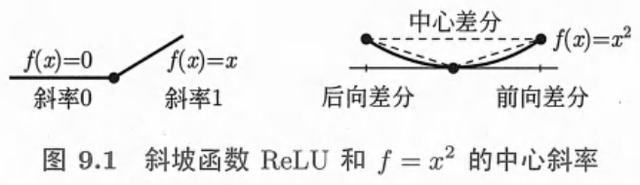
图 9-1 梯度下降在狭长山谷里的之字形轨迹：横向震荡，纵向缓慢前进。（原书 p.342）
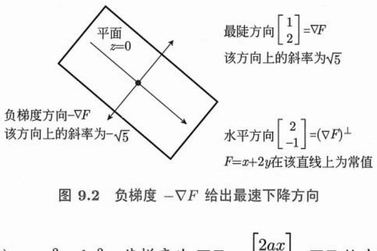
图 9-2 动量法：累积速度抵消震荡、加速下降。（原书 p.344）
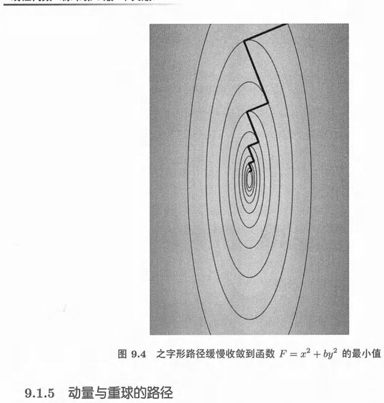
图 9-3 梯度始终垂直于等高线，指向上升最快的方向。（原书 p.346）
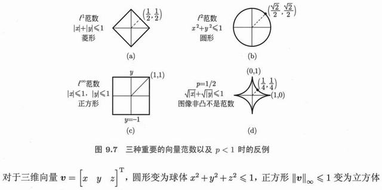
图 9-4 约束优化的几何：最优点处目标函数的等高线与约束曲线相切。（原书 p.356）
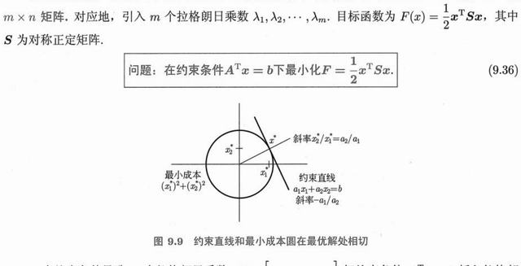
图 9-5 线性规划的最优解必在可行域顶点：目标函数的等值线平移到最后一个接触点。（原书 p.358）
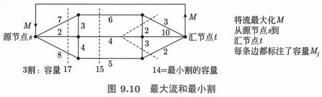
图 9-6 原问题与对偶问题的关系：从两侧逼近同一个最优值。（原书 p.366）
习题 9.4 原书 p.368 起 自测 2 题 · 点开看答案
max x + y s.t. x + 2y ≤ 4，2x + y ≤ 4，x,y ≥ 0 的最优值？
强对偶说的是什么？
1. 可行顶点有四个：(0,0) → 0、(2,0) → 2、(0,2) → 2、两约束交点 (4/3, 4/3) → 8/3。最优值 8/3，在 (4/3, 4/3) 取到。
2. 原问题的最优值 = 对偶问题的最优值（在凸性/可行条件下），中间没有间隙。
最后这一章，Strang 把整本书的工具全部倒进一台机器里：深度学习 。你会看到，一个深度神经网络的输出不过是一个分段线性函数 ——它的「每一块」由若干个超平面切出来，块数可以精确计数；而训练、泛化、协方差、主成分，全都是矩阵乘法、特征值与半正定性 换了一件衣服。
本章的两条主线
① 结构 （10.1–10.2）：神经网络 = 线性映射 + 逐元素 ReLU + 池化，整体是分段线性的 ；深度让「块数」指数增长，而参数只线性增长——这就是深度的价值。
② 数据 （10.3）：均值是投影、方差是范数平方、协方差矩阵是半正定矩阵 ，它的特征向量就是数据的主方向。第 6、7 章的特征值和 SVD，在这里变成了统计学。
10.1 分段线性学习函数p.371 先给结论，再拆开看：一个用 ReLU 做激活的神经网络，作为输入 v 的函数，是分段的线性函数 。所谓「学习」，就是调整这些分段的位置与斜率，让这张折起来的曲面贴合数据。
10.1.1 深度神经网络的构建p.373
层与层之间只做三件事：乘一个矩阵 、加一个向量 、过一个非线性函数 。就这三件事，重复 L 次。
输入： v₀ = v ∈ ℝⁿ
第 k 层（k = 1, 2, …, L−1，共 L−1 个中间层）：
vk = R(Ak vk−1 + bk )
Ak ：mk × mk−1 的权重矩阵（第 k 层的「线性部分」）
bk ：mk 维偏置向量
R：ReLU，逐元素作用，R(x) = max(0, x)
输出层（最后一层不做 ReLU）：
F(v) = AL vL−1 AL 是 1 × mL−1
形状： F : ℝⁿ → ℝ，一个标量输出
参数总量： m₁n + m₁m₂ + … + mL−1 + 全部偏置
为什么最后一层不加 ReLU？因为要输出实数（可以是负的）。为什么中间层要加？因为没有 ReLU，整张网络就塌缩成一个线性映射 ：A₂A₁v 还是矩阵乘 v，叠一百层也等于一层。非线性全部来自那个 max(0, x)。
ReLU 是「分段线性」的源头
R(x) = max(0,x) 本身就是一个分两段的线性函数（x < 0 时斜率 0，x > 0 时斜率 1）。所以它既是非线性的，又保持了线性 ——这个「不三不四」的性质正是深度网络可以被线性代数分析的原因。
10.1.2 Fₖ 是 vₖ₋₁ 的分段线性函数p.373
用归纳法一步到位。设 vk−1 ↦ vk 是分段线性的，看它保持不保持。
归纳基础： v₁ = R(A₁v + b₁)
A₁v + b₁ 是线性的（仿射），R 逐元素分段线性
→ v₁ 是 v 的分段线性函数
归纳一步： 假设 vk−1 是 v 的分段线性函数，则
Ak vk−1 + bk 仍分段线性（线性映射保持分片）
R 再作用一次，分片只会更细 （每片可能被新的超平面再切）
→ vk 分段线性
结论： F = AL vL−1 是 v 的分段线性函数
关键：分片数只增不减。每过一层，原有的块可能被再切一刀。
注意「更细」这两个字：复合分段线性函数 = 把定义域切成更碎的小块 。这正是深度网络表达力的来源——层数越多，切得越碎。
10.1.3 一个中间层（L = 2）的情况p.374
最简单也最清楚的情形：一层隐藏层。把公式展开，会看到一个非常漂亮的结构。
L = 2： F(v) = A₂ · R(A₁v + b₁)
把 A₁ 按行拆开，第 i 行记作 wi T ；A₂ = [a₁ a₂ … am ]
F(v) = Σi=1 m ai · max(0, wi T v + bi )
这就是 m 个「铰链」的加权和 。
· 每个 max(0, wᵢᵀv + bᵢ) 在超平面 Hᵢ: wᵢᵀv + bᵢ = 0 上折一下
· 这个超平面就是一块「折痕」
· 所有 aᵢ > 0 时，F 是 m 个凸函数之和 → F 是凸的
于是 F 的图像是一张「折纸」：m 条折痕，把 ℝⁿ 切成若干块，
每块上 F 就是一个普通的一次函数（仿射）。
如果偏置全为 0，折痕都过原点，图像是一个锥 ：F(tv) = tF(v)，沿着从原点出发的射线走，高度线性变化。加上偏置后，折痕被平移，图像更像一张被顶起来的桌布。
10.1.4 学习函数 F(v) 的图像p.375
n = 2 时可以把图像画出来——这是本章唯一能「看见」神经网络的地方。
n = 2，m = 3 个神经元：
F(x, y) = a₁(·)₊ + a₂(·)₊ + a₃(·)₊
平面上 3 条折痕把平面切成 7 块（一般位置）
每块上 F 是一张平面 → 图像由 7 张平面片拼成
看不见的「内部」：
· 折痕处 F 连续，但导数（斜率）跳变
· 这就是为什么神经网络能用「折线」拟合任意曲线
· 块越密，逼近越精确 —— 分段线性函数在紧集上稠密
一个常被误解的点
「分段线性」不等于「只能拟合折线」。块数足够多时，折线的折点可以任意密，一致逼近任何连续函数 （这就是万能逼近定理的几何版本）。真正的限制不是「线性」，而是块数够不够 ——而块数由宽度和深度决定。
· 拖神经元数量、拖灰点看 F
神经元数 m 4
读数
折痕（超平面） 4 条
平坦块数 8
位置 (1.20, 0.80)
F(v) —
aᵢ 全为正（凸）
aᵢ 交替正负
每条折痕把平面折一下，块内 F 是平的（同一颜色 = 同一张平面片）。拖动灰点 看 F 的值。折痕都过原点（无偏置），所以块数正好是 2m ；若折痕一般位置不过原点，块数就变成 r(m,2) = 1 + m + m(m−1)/2。把系数换成交替正负后 F 不再凸，等高线会出现红色的负值区。
10.1.5 计算学习函数图像的平坦分块个数：一个中间层的情形p.376
「能表达多复杂的东西」这件事，可以数出来 。核心是一个组合几何问题：m 个超平面把 ℝⁿ 切成几块？
记 r(m, n) = m 个处于一般位置的超平面在 ℝⁿ 中切出的区域数
递推：第 m 个超平面被前 m−1 个超平面切出 r(m−1, n−1) 块，
每块把原来的一个区域一分为二 → 多加 r(m−1, n−1) 块
r(m, n) = r(m−1, n) + r(m−1, n−1) ， r(0, n) = 1
显式解（二项式系数）：
r(m, n) = Σk=0 n C(m, k)
验算：
r(3, 2) = C(3,0)+C(3,1)+C(3,2) = 1 + 3 + 3 = 7 ← 3 条直线切平面
r(4, 2) = 1 + 4 + 6 = 11
r(5, 3) = 1 + 5 + 10 + 10 = 26
特殊情形：若所有超平面都过原点（无偏置），则
S = 2 Σk=0 n−1 C(m−1, k) ，n = 2 时就是 2m
所以一个宽度为 m、输入为 n 维的单隐层网络，最多能表达 r(m, n) 张平面片。注意 r(m, n) 对 m 是 n 次多项式 （n 固定时）：宽度带来的是多项式级 增长。
10.1.6 计算学习函数图像的平坦分块个数：更多中间层的情形p.377
现在把层数加上去。每一层的输出空间里，上一层的每一块又要被新的超平面再切一遍。
第 k 层有 mk 个神经元，作用在 ℝmk−1 上
粗略计数（一般位置）：
第 1 层： r(m₁, n) 块
第 2 层： 每块再被 m₂ 个超平面在 ℝm₁ 中切 → 乘上 r(m₂, m₁)
第 3 层： 再乘 r(m₃, m₂) …
→ 块数 ≈ Πk=1 L−1 r(mk , mk−1 )
对比（每层宽度相同 = m，输入 n = 2）：
单层 m = 4 → 11 块 参数 ≈ 4·2 + 4 = 12
两层各 4 → 可达上百块 参数 ≈ 8 + 4·2 ≈ 20
十层各 4 → 指数级 参数 ≈ 线性增长
参数线性增长，块数指数增长 —— 这就是「深度」比「宽度」划算的数学理由。
这个结论（Montúfar 等人的计数结果，Strang 用线性代数语言复述）是深度学习理论里最干净的定量结论之一：同一套参数预算，堆深比铺宽能切出多得多的线性片 。换句话说，深网络能用更少的参数记住更「碎」的函数。
是「上限」，不是「实际」
上面的乘积是理论上界 （权重取一般位置时）。实际训练出来的网络，很多块被压扁、被浪费，真正用到的块远少于上界。这也解释了为什么剪枝 常常几乎不影响精度。
10.1.7 移除p.378
反过来问：删掉一个神经元，会丢掉多少块？ 这个问题直接关系到模型压缩。
从 m 个超平面中移除第 m 个（删掉一行权重 = 删掉一个神经元）
减少的块数 = r(m, n) − r(m−1, n) = C(m−1, n−1)
n = 2 时： C(m−1, 1) = m−1
3 条线 7 块 → 2 条线 4 块，减少 3 = C(2,1) ✓
有偏置、n = 2、m = 4： 11 → 7，减少 4 = C(3,1) ✓
含义：
· 越往后加的神经元，边际贡献越大（C(m−1, n−1) 随 m 增长）
· 但「块」不等于「有用的块」 → 剪枝可以在损失很小的情况下大幅瘦身
· 移除一层（而不是一个神经元）的影响是乘性 的，远比移除一个神经元严重
这也解释了一个反直觉的现象：宽度少一点往往没大事，层数少一层常常崩掉 。因为层数决定的是乘积里的一个因子，宽度只决定一个多项式因子。
习题 10.1 原书 p.378 起 自测 2 题 · 点开看答案
F(v) = (v₁)₊ + (v₂)₊ + (−v₁−v₂)₊，求 F(2,−1)。
3 条过原点的直线把平面分成几块？不过原点呢？
1. 2 + 0 + 0 = 2（第三项 −2+1 = −1 < 0，取 0）。
2. 过原点：6 块（= 2m）；一般位置不过原点：7 块（= r(3,2) = 1 + 3 + 3）。
10.2 发明和实验p.379 这一节 Strang 换了语气：数学能算清楚结构，但「为什么这样设计就好用」，很多答案来自实验而不是定理。他把这称为「发明」（invention）——先做出来，再解释。
10.2.1 泛化与双重下降p.380
经典统计学习理论说：模型太复杂会过拟合，测试误差是 U 形曲线。但深度学习的实践推翻了这个图景。
经典图景（U 形）：
模型容量 ↑ → 训练误差 ↓（一直降）
模型容量 ↑ → 测试误差 先降后升（过拟合）
→ 「容量要刚刚好」
实际观察到的双重下降 （double descent）：
· 容量 < 参数量（欠参数化）：测试误差先降后升，在 插值阈值 处出现尖峰
· 容量 ≈ 样本数（插值点）：模型刚好能记住全部训练数据，测试误差最差
· 容量 > 样本数（过参数化）：测试误差再次下降 ，常常比经典最优点还低
测试误差
│ ╱╲ ← 插值阈值处的尖峰
│ ╱ ╲
│ ╱ ╲___
│ ╱ ╲____ ← 过参数化区反而更好
└──────────────────────── 模型容量 / 样本数
0 1 10
为什么过参数化反而更好？ 这是线性代数能回答的问题。当 A 是宽矩阵（参数多于方程），Ax = b 有无穷多解；梯度下降从 0 出发，收敛到其中范数最小 的那个——也就是第 4 章的 A⁺b 。最小范数解 = 最平滑、最不极端的解 ，所以泛化好。这叫「隐式正则化」：优化算法的路径本身在做正则。
线代视角的一句话总结
过参数化模型不是「记住了噪声」，而是在无穷多零误差解里，选了范数最小的那一个 。伪逆 A⁺ 是深度学习的隐藏裁判。
· 拖噪声与插值点位置
10.2.2 卷积神经网络：权重共享p.381
图像有几百万元素，如果第一层就全连接，矩阵大得没法存。卷积的做法是：同一个很小的权重向量，在整张图上滑动复用 。
一维情形：滤波器 w = (w₀, w₁, w₂) 长度 3，输入 x 长度 n
输出第 i 个分量： (Ax)i = w₀xi + w₁xi+1 + w₂xi+2
矩阵形式（Toeplitz 矩阵 ，每条对角线是常数）：
A = ⎡w₀ w₁ w₂ 0 0 …⎤
⎢ 0 w₀ w₁ w₂ 0 …⎥
⎢ 0 0 w₀ w₁ w₂ …⎥
⎣ … ⎦
自由参数： 3 个 （而不是 3n 个） ← 权重共享
若边界周期（首尾相接）→ 循环矩阵 （circulant）
循环矩阵的特征向量是傅里叶向量！
A = F Λ F⁻¹，Λ = 滤波器的离散傅里叶变换
→ 卷积在频域变成逐点相乘（卷积定理）→ 用 FFT 加速
这是第 6 章「特征向量」在工程里最漂亮的一次出场：卷积之所以能用 FFT 算，是因为循环矩阵被傅里叶基对角化 。权重共享的好处有三层：参数少、平移等变（图平移，输出也平移）、可以用快速算法。
10.2.3 最大池化p.381
池化是「降采样」：每 2 个（或 4 个）值只留最大的那个。
vn+1 = R(A vn + bn ) ← 卷积 + ReLU
vn+2 = max2(vn+1 ) ← 两两取最大，长度减半
max(a, b) 也是分段线性的！
max(a,b) = ½(a + b) + ½|a − b|
→ 池化不破坏分段线性 ，整个网络仍然是一张「折纸」
作用：
· 维度减半 → 后面的层更便宜
· 小的平移不影响最大值 → 平移鲁棒
· 反向传播时梯度只流向「赢家」（其余为 0）→ 稀疏梯度
Strang 特意强调：池化没有引入新的非线性类型 。ReLU、max、max-pooling 都属于「分段线性」这个大家族，所以 10.1 节的块数理论对卷积网络同样成立（只是计数变复杂）。
10.2.4 深度学习领域的四大重要成就p.382
Strang 列了四个「它真的成了」的领域，每一个都是「数据 + 参数 + 算力」同时到位的产物。
领域 关键突破 背后的线代结构 语音识别 把声波帧序列映射到文字，端到端训练取代手工特征 时序卷积 / 循环结构 / 长程依赖 图像识别 ImageNet 上错误率从 26% 降到 3%（超越人类） 卷积（Toeplitz）+ 池化 + 深层堆叠 机器翻译 注意力机制让词与词对齐，不再逐词硬对齐 相似度矩阵 = Q Kᵀ（大矩阵乘法） 博弈与决策 AlphaGo 击败人类冠军，策略网络 + 价值网络 大规模最小二乘 / 策略迭代
Strang 的评论很克制：这些成就不是新数学 ，用的还是梯度、矩阵乘、最小二乘；新的是规模 ——当参数上亿、数据上亿，「能不能算」变成了「算得够不够快」。
习题 10.2 原书 p.382 起 自测 2 题 · 点开看答案
双重下降的「插值阈值」在哪？
卷积为什么能用 FFT 加速？
1. 参数量 ≈ 样本数处（t = 1）：训练误差恰好降到 0，测试误差出现尖峰，之后继续增大模型反而更好。
2. 卷积矩阵（周期边界）是循环矩阵，被傅里叶基对角化：A = FΛF⁻¹，卷积变成频域逐点相乘。
10.3 均值、方差和协方差p.383 从这一节开始，主角从「网络」换成「数据」。而数据的基本描述量——均值、方差、协方差——全是内积和范数 。这不是类比，是字面意义上的同一件事。
10.3.1 方差p.384
均值告诉我们「中心在哪」，方差告诉我们「散得多开」。
样本 x₁, …, xN
均值： μ = (1/N) Σ xi
方差： σ² = (1/N) Σ (xi − μ)²
标准差： σ = √(σ²) ← 和 x 同量纲，更好用
展开式（更常用来计算）：
σ² = (1/N)Σxi ² − μ² = E[X²] − (E[X])²
向量语言：把 x = (x₁,…,xN ) 看成 ℝN 中的向量
· 均值 μ 是 x 在「全 1 向量」方向上的投影： μ = (x·1)/(1·1)
· 去均值向量 x − μ1 垂直于 1
· σ² = ‖x − μ1‖² / N ← 方差就是「到均值的距离平方」
最后这条值得多看两眼：方差 = 去均值向量的范数平方除以 N 。所以「方差大」就是「这个向量离常数向量远」，纯几何。
10.3.2 连续概率分布p.385
把「每个值的概率」换成「密度」，求和换成积分。唯一的实质变化是：单点的概率是 0，只有区间才有概率 。
密度函数 p(x) 的两条公理：
① p(x) ≥ 0
② ∫−∞ +∞ p(x) dx = 1
区间概率：
P(a ≤ X ≤ b) = ∫a b p(x) dx
累积分布函数： F(x) = P(X ≤ x) = ∫−∞ x p(t) dt
→ p(x) = F′(x) 概率密度是累积分布的导数
均匀分布 U(a, b)： p(x) = 1/(b−a)（区间内），否则 0
μ = (a+b)/2, σ² = (b−a)²/12
书上用 U(17, 20) 做例子：p = 1/3，F(x) = (x−17)/3，均值 18.5，方差 (3)²/12 = 0.75。形状是「一段斜坡」和「一块平台」——F 是 p 的积分，p 是 F 的斜率 。
10.3.3 p(x) 的均值和方差p.386
把 10.3.1 的求和换成积分，一字不改。
均值： μ = ∫ x p(x) dx
方差： σ² = ∫ (x − μ)² p(x) dx
= ∫ x² p(x) dx − μ²
标准差： σ = √(σ²)
直觉：p(x) 是「权重」，μ 是 x 的加权平均（重心）
σ² 是「绕重心的转动惯量」
平移与缩放（后面 10.3.8 会用到）：
Y = X + c → μ 加 c， σ² 不变
Y = aX → μ 乘 a， σ² 乘 a² ， σ 乘 |a|
这条「方差对平移不变、对方差乘 a²」是全部推导的引擎：标准化 Z = (X − μ)/σ 就是把任意分布压成均值 0、方差 1。
10.3.4 正态分布：钟形曲线p.387
唯一一个「均值和方差就能完全决定形状」的分布。它的密度函数里有一个 e 的负平方，而那个平方就是二次型 。
正态分布 N(μ, σ²)：
p(x) = 1/(σ√(2π)) · exp( −(x − μ)² / (2σ²) )
标准正态 N(0, 1)： φ(x) = 1/√(2π) · e−x²/2
三个关键数（68–95–99.7 法则）：
|x − μ| ≤ σ → 68.3%
|x − μ| ≤ 2σ → 95.4%
|x − μ| ≤ 3σ → 99.7%
为什么它无处不在？中心极限定理 ：大量独立同分布随机变量之和，
无论各自什么分布，标准化后都趋向 N(0,1)。
多变量版本（10.3.6 会看到）：
p(x) ∝ exp( −½ (x−μ)ᵀ V⁻¹ (x−μ) )
→ 指数上是一个二次型 ，等密度面是椭球
→ 椭球的轴 = V 的特征向量，半轴长 = √特征值
这就是第 6 章那个椭圆
正态分布的等密度线是以 V 的特征向量为主轴的椭球。V 的特征值越大，那个方向越「胖」。主成分分析（PCA）就是找出这些轴 ——第 7 章的 SVD 在这里成了统计工具。
10.3.5 均值和方差：投掷 N 次硬币，以及 N → ∞ 的渐进行为p.388
用一个最熟的例子把「√N」这个尺度看清楚——它是整章最容易被忽略、也最重要的一个数。
投 N 次公平硬币，正面次数 X ~ 二项分布 B(N, ½)
E[X] = Np = N/2
Var(X) = Np(1−p) = N/4
σX = √N / 2 ← 绝对波动随 N 增长 （像 √N）
但看「正面所占比例」 P = X/N：
E[P] = 1/2
Var(P) = Var(X)/N² = 1/(4N)
σP = 1/(2√N) ← 相对波动随 N 衰减
N = 100： σX = 5（次数）， σP = 0.05（比例）
N = 10000：σX = 50， σP = 0.005
标准化后：
(X − N/2) / (√N/2) → N(0, 1) （中心极限定理）
钟形曲线的宽度是 √N，但把它压扁到同一把尺子上，形状永远是同一条曲线。
这里有个陷阱要拆开：「次数」的波动随 N 变大（√N），但「比例」的波动随 N 变小（1/√N） 。大数定律说的是后者。很多人把两者混为一谈，就会得出「投得越多越不准」的错误结论。
10.3.6 协方差矩阵和联合概率p.390
一个随机变量用均值和方差描述；一组 随机变量需要额外知道「它们怎么一起变」——这就是协方差。
随机向量 X = (X₁, …, Xn )ᵀ，均值向量 μ = E[X]
协方差矩阵： V = E[ (X − μ)(X − μ)ᵀ ] ← n × n
分量形式：
Vij = Cov(Xi , Xj ) = E[(Xi −μi )(Xj −μj )]
Vii = Var(Xi ) ← 对角线就是各自的方差
两条基本性质：
① V 对称 ： Vij = Vji （乘法可交换）
② V 半正定 ： 见 10.3.7
样本版本（N 个数据点 x⁽¹⁾,…,x⁽ᴺ⁾，去均值后堆成矩阵 A）：
V = (1/N) A Aᵀ A 是 n × N，每列一个样本
→ 协方差矩阵永远是「某矩阵乘自己的转置」
最后那一行是理解一切的钥匙：V = AAᵀ/N 。所以协方差的全部性质（对称、半正定、秩 ≤ N）都来自这个形状。
10.3.7 协方差矩阵 V 的半正定性p.392
为什么协方差矩阵不能有负特征值？一句话：它是方差 。
任取向量 a，看二次型 aᵀVa：
aᵀVa = aᵀ E[(X−μ)(X−μ)ᵀ] a
= E[ aᵀ(X−μ)(X−μ)ᵀa ]
= E[ (aᵀ(X−μ))² ]
= Var(aᵀX) ≥ 0
结论： 对一切 a， aᵀVa ≥ 0 → V 半正定 ，特征值全 ≥ 0
等号成立的含义： aᵀVa = 0 ⟺ Var(aᵀX) = 0
⟺ aᵀX 是常数（几乎必然）
⟺ a 落在 V 的零空间里 （数据在这个方向上没有波动）
于是：
rank(V) = 数据真正变化的维数
null(V) = 数据完全不变的方向（冗余特征、共线特征）
这条性质在工程上极其有用：如果 V 有一个接近 0 的特征值，说明数据在某个方向上是平的 ——那个方向可以丢掉，这就是降维（PCA）的合法性依据。也解释了为什么协方差矩阵求逆会炸：零特征值让 V 奇异。
反过来不成立
半正定矩阵不一定 是协方差矩阵（还差一个「可实现」的联合分布），但任何半正定矩阵都可以是某个数据集的协方差矩阵（取 V = AAᵀ 的 Cholesky 因子即可）。
10.3.8 Z = AX 的协方差矩阵p.393
线性变换怎么改变协方差？答案是一个漂亮的「三明治」。
设 Z = A X（A 是 k × n 的常数矩阵），X 的协方差是 V
E[Z] = A E[X] = Aμ
Cov(Z) = E[ (Z − Aμ)(Z − Aμ)ᵀ ]
= E[ A(X−μ)(X−μ)ᵀ Aᵀ ]
= A · E[(X−μ)(X−μ)ᵀ] · Aᵀ
→ VZ = A V Aᵀ （三明治公式）
特例 1：Z = X₁ + X₂（A = [1 1]）
Var(X₁+X₂) = V₁₁ + 2V₁₂ + V₂₂ = σ₁² + σ₂² + 2ρσ₁σ₂
特例 2：白化（去相关）
取 A = V−1/2 （特征分解 V = QΛQᵀ，V−1/2 = QΛ−1/2 Qᵀ）
→ Cov(Z) = V−1/2 V V−1/2 = I
→ 各分量方差都是 1，且互不相关
三明治公式 AV Aᵀ 和第 7 章的「A 把圆变成椭圆」是同一个式子——因为协方差矩阵的等密度椭球，就是单位球在 V1/2 下的像 。半正定性也自动遗传：aᵀ(AVAᵀ)a = (Aᵀa)ᵀV(Aᵀa) ≥ 0。
10.3.9 相关性 ρp.394
协方差有个毛病：它带量纲。身高体重的协方差和温度压力的协方差没法比。相关系数就是把量纲除掉 。
相关系数： ρ = Cov(X,Y) / (σX σY ) = V₁₂/(σ₁σ₂)
性质：
① −1 ≤ ρ ≤ 1
② ρ = ±1 ⟺ Y = aX + b（完全线性关系，a 的符号定 ±）
③ ρ = 0 ⟺ 不相关（注意：不相关 ≠ 独立 ）
为什么 |ρ| ≤ 1？柯西–施瓦茨不等式：
|Cov(X,Y)| = |E[xy]| ≤ √(E[x²]) √(E[y²]) = σX σY
（x = X−μX , y = Y−μY ）
几何解释：ρ 就是两个去均值向量 夹角的余弦
ρ = cos θ ← 和第 1 章的点积公式一模一样
相关矩阵（标准化后的协方差矩阵）：
R = D−1 V D−1 ，D = diag(σ₁,…,σn )
→ 对角线全是 1，其余是各对相关系数
所以「相关系数」从来不是什么新东西：它就是第 1 章那个 cos θ ，只不过向量换成了「去均值后的数据列」。这也解释了为什么 ρ 对线性关系那么敏感、对非线性关系却视而不见——余弦只认方向。
· 拖相关系数与方差比
相关系数 ρ 0.70
σ₂ / σ₁ 1.2
读数
协方差矩阵 V —
det V —
特征值 λ₁, λ₂ —
主轴方向 —
aᵀVa ≥ 0 成立
蓝点是数据，橙色椭圆的两根轴就是 V 的特征向量 ，半轴长 = √特征值（1σ 与 2σ）。ρ 趋近 ±1 时椭圆被压成一条线——数据实际上退化成一维，V 变得接近奇异。
习题 10.3 原书 p.394 起 自测 2 题 · 点开看答案
U(0,4) 的均值与方差？
Cov(X, X) 等于什么？协方差矩阵的对角线是什么？
1. μ = 2；σ² = (b−a)²/12 = 16/12 = 4/3。
2. Cov(X,X) = Var(X)；协方差矩阵的对角线就是各分量的方差。
10.4 深度学习的成功引发的思考p.395 全书的最后一节，Strang 没有给定理，只给了几个问题。这些问题至今没有完整答案——但正因为没有，才值得学线性代数。
问题一：为什么参数比数据还多，却不过拟合？
经典理论认为这是灾难。实际却并非如此。目前最好的解释来自线性代数：零误差解有无穷多个，梯度下降选的是范数最小的那个 （伪逆 A⁺b）。范数小意味着函数「平缓」，平缓意味着泛化。这就是 10.2.1 的双重下降。
问题二：为什么优化这么容易？
损失函数极度非凸，理论上到处是坏局部极小。但高维空间里，鞍点远比局部极小多 ，而随机梯度下降的噪声足以逃离鞍点。更关键的是：条件数 （第 9 章）决定了收敛速度，而神经网络的 Hessian 谱有特殊的结构。
问题三：高维空间为什么反直觉？
在 ℝn 中（n 很大），几乎所有的体积都集中在球的表面附近 ；随机取两个向量，它们几乎正交 （cos θ ≈ 0）；随机取一个矩阵，它的奇异值分布有确定的极限（Marchenko–Pastur）。这些「反直觉」全部是可计算的 ，而且只需要第 1、7 章的工具。
Strang 的收尾（意译）：
「线性代数教会我们如何组织 计算：把矩阵分解成简单的因子，
把问题化成可以一步步求解的形式。
深度学习的成功不在于发明了新的数学，
而在于它证明了——那些分解，在足够大的规模上，
比我们曾经以为的更有力量。 」
四个反复出现的角色：
① 分解： A = LU = QR = QΛQᵀ = UΣVᵀ
② 最小范数解： A⁺b（过参数化时代的英雄）
③ 特征值： 稳定性、条件数、主方向
④ 半正定： 方差、协方差、核函数
回头看这本书：从「两个向量相加」开始，到「一张能识别猫的分段线性函数」结束。中间没有跳跃，只有一层层的同一件事 ——线性组合、子空间、正交、特征值。这就是为什么这门课值得从 0 学到学会。
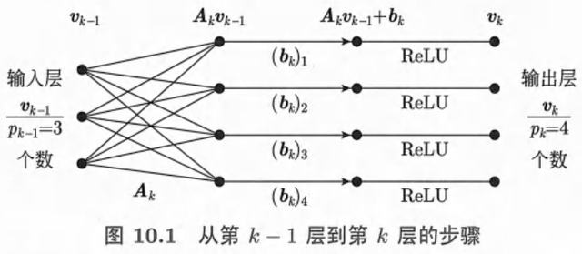
图 10-1 从第 k−1 层到第 k 层的三个步骤：乘 Ak 、加 bk 、过 ReLU。注意图中输入 3 个、输出 4 个，Ak 是 4×3。（原书 p.372）
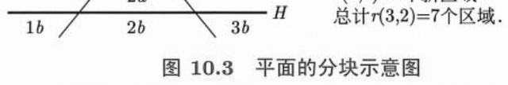
图 10-2 平面的分块示意：3 条一般位置的直线把平面切成 1 + 3 + 3 = 7 块，即 r(3,2) = 7。每一块上网络输出都是一张平面。（原书 p.377）
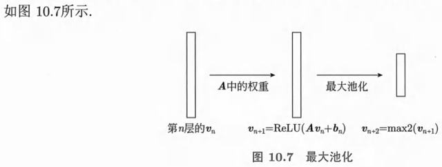
图 10-3 最大池化：先做 ReLU(A vn + bn )，再两两取最大，长度减半。max 仍是分段线性的，所以整网仍是「折纸」。（原书 p.381）
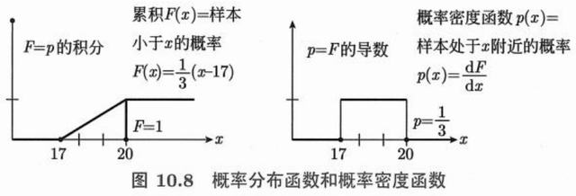
图 10-4 累积分布 F(x) 与概率密度 p(x) 的关系：F 是 p 的积分，p 是 F 的导数。图中为均匀分布 U(17,20)，p = 1/3。（原书 p.386）
例题 单隐层网络的两个具体值
设 A₁ = [[1, 0], [0, 1], [−1, −1]]，b₁ = 0，A₂ = [1, 1, 1]（即 m = 3 个神经元，三个权重全为 1）。
按 10.1.3 的展开式：F(v) = (v₁)₊ + (v₂)₊ + (−v₁−v₂)₊。
① v = (1, 2)：前两项 = 1 + 2 = 3；第三项 −1−2 = −3 < 0，取 0。F = 3 。
② v = (−1, −1)：前两项都是 0；第三项 = 1 + 1 = 2。F = 2 。
③ v = (−2, 3)：第一项 0，第二项 3，第三项 2−3 = −1 → 0。F = 3 。
三条折痕是 v₁ = 0、v₂ = 0、v₁ + v₂ = 0，把平面切成 r(3,2) = 7 块。注意 F 恒 ≥ 0，且在原点取到 0——这是「所有 aᵢ > 0 时 F 凸且最小值为 0」的体现。
判断 协方差矩阵一定是半正定的，因此它的特征值不会出现负数。
正确。 对任意向量 a，aᵀVa = Var(aᵀX) ≥ 0，方差不可能为负，所以 V 半正定，特征值全部 ≥ 0。
注意区分：协方差矩阵 半正定；相关系数矩阵 也半正定（它是 D⁻¹VD⁻¹ 的三明治形式）；但一般的对称矩阵当然可以有负特征值（例如 [[1,2],[2,1]] 的特征值是 3 和 −1）。
判断 既然 ReLU 网络是分段线性的，它就无法逼近光滑函数。
错误。 这正是 10.1.4 里强调的误解。「分段线性」限制的是每块的形状，不限制块的数量 。
块数随宽度按多项式增长、随深度按指数增长，折点可以密到任意程度；而分段线性函数类在连续函数空间中是稠密 的（万能逼近定理）。就像用无数短直线段可以画出任意光滑曲线——尺规作图的折线逼近也是同一个道理。
简答 为什么协方差矩阵的特征向量就是数据的主方向？
问「数据在哪个方向散得最开」，就是问：在单位向量 a（‖a‖ = 1）中，哪个方向使 Var(aᵀX) = aᵀVa 最大。
这是一个约束优化问题：max aᵀVa s.t. aᵀa = 1，用拉格朗日乘子得 Va = λa ——也就是特征值方程。所以极值点必是 V 的特征向量，对应的最大值就是特征值 λ。按 λ 从大到小排，就得到第一主轴、第二主轴……
几何上：V 半正定 → 等密度面是椭球 → 椭球的轴长是 √λ → 最长轴就是最大特征向量。这也正是第 6 章「主轴定理」和第 7 章 SVD 的统计学版本；把数据中心化后做 SVD，右奇异向量就是这些主轴。